<html>
    <!--
        ¡AVISO!   La via del tren subterraneo es peligrosa!  Si el tren se para entre las estaciones
                  no salga afuera ... y ...
    
                  Don't try to read this in HTML to learn about the NXSYS system!
    
                  Download it and open it in a browser, especially if you want the hoverable azure
                  definitions to work. If you want the illustrations to be present, you'd better
                  download the "HelpImages" folder as its sibling as well.
    
                  This is all provided for in the help window in the actual running application.
                  A built PDF of this file is available for download at
    
                  https://BernardGreenberg.com/Subway (downloads section).
    -->

<head>
<meta http-equiv=Content-Type content="text/html;charset=UTF-8">
<meta name=Title content="NXSYS Subway Signalling Simulator">


<style>
.def {
    color: #0AA;
    text-decoration: none;
}

.def:hover {
    color: #0F0;
    decoration: none;
}

.DocPopup {
  position:absolute;
  display:none;
  background-color:#cff;
  border:1px solid #039;
  font-family:sans-serif;
  font-size:80%;
  width:300px;
  }

.rwarn {color:"#D00";}

.cmdtable {
  width: 80%;
}

.cmdtable tr td {
   padding-bottom:10px;
}

.cmdtable td:nth-child(2) {
   width: 150px;
   font-weight:bold;
}

.deftab tr {
   padding:40px;
}
.deftab td:first-child {
   width:150;
   color:#900;
}

.rlytab {
    width: 600px;
    border-collapse: collapse;
    border: 1px solid black;
}
.rlytab td {
        border: 2px solid grey;
}
.rlytab td:nth-child(1) {
    width:80px;
    padding-left:5px;
}
.rlytab td:nth-child(2) {
    text-align: center;
    width:40px;
    font-family:sans-serif;
    font-size:large;
    color:#999;
}
.rlytab td:nth-child(3) {
    padding-left:10px;
    padding-right:10px;
    padding-top:5px;
    padding-bottom:5px;
}
</style>

<script>
function mmhandler(e) {
    LastX = e.pageX;
    LastY = e.pageY;
}

LAST_ELT= 0
function defenter(elt) {

   tag = elt.getAttribute("dref").substr(1)
   pu = document.getElementById(tag);
   LAST_ELT=pu
   pu.style.top = LastY + "px"
   pu.style.left = LastX + "px"
   pu.style.display="block";
}

function defleave() {
   LAST_ELT.style.display = "none"
}

function loadtimer() {
   for (span of spans = document.getElementsByClassName("def")) {
        span.setAttribute("onmouseenter", "defenter(this);");
        span.setAttribute("onmouseleave", "defleave();");
    }
}

window.onload=loadtimer;
window.onmousemove = mmhandler

</script>

</head>

<body lang=EN-US style='tab-interval:.5in;text-justify-trim:punctuation;max-width:800px'>

<div class=WordSection1>

<h1>NXSYS Subway Signalling Simulator</h1>

<p> <b><a name="cont_nx_xlkg"/>Status: 22 February 2022, all versions</b></p>

<p><b>NXSYS</b> is a signalling and NX/UR Interlocking simulator application designed to the signalling and circuit styles and standards used in the New York City Transit System throughout the second half of the twentieth century.   It facilitates learning about classic relay-based signalling and switching by actually controlling moderately complex (simulated) arrangements of tracks and signals the way they are controlled
    in real life. <b>NXSYS</b> facilitates analysis and observation of, and experimentation with, signalling
behavior right down to the level of individual electrical relays. This document contains not just usage details of this application, but extensive information on all types of signals and related concepts as employed on the New York system (and, generally, many other rapid transit systems and other railroads).</p>

<p><b>NXSYS</b> is currently available in two versions:
  <ul>
    <li><b>Version 2 for Microsoft&#x2122; Windows&#x2122;</b>, (2016, 2022–).  Version 2 features arbitrary two-dimensional track geometry and <a href="#v2adv">two real New York interlockings</a> in addition to ports of the Version 1 didactic ones. There is a <a href="#design">Track Layout editor (<b>TLEdit</b>)</a>, but no logic compiler.  Version 2 (either implementation) also includes several new interlocking features (e.g., <a href="#traffic">traffic levers</a>).</li>
    <li><b>Version 2 for the Apple&#x2122; Macintosh&#x2122;/OS X</b>, &ldquo;<b>NXSYS/Mac</b>&rdquo;, (2014–).  Compatible with Version 2 for Windows, including <b>TLEdit</b>. <b>NXSYS/Mac</b> features a couple of additional frills, such as a new style of <a href="#fullsig">Full-Signal Displays</a>, and has its own help document (describing differences only) in its <b>Help</b> menu.</li>
    </ul>
  Version 1 is no longer available and no longer supported.  Its interlocking sources are not supported.  Its attractive Cab View feature is not available in Version 2, because the problem of simulating an arbitrary 3-D world credibly and attractively is too large.  There is no more relay compiler; modern processors are fast enough to obviate it.
  </p>
  <p>The OLE scripting (NXCTL/NXScript) system has been retired.  No one, including the author, ever expressed enthusiasm for it, and it is difficult to test and maintain.</p>
<p>
<p>There are three relevant World Wide Web pages:</p>
<ul>
    <li><a href="https://BernardGreenberg.com/Subway">https://BernardGreenberg.com/Subway</a> on my personal site.  This is the official page, and where important news and new versions will be announced. This is currently the official download site.  There are YouTube demo videos cited there.</li>
    <li><a href="https://github.com/BernardGreenberg.com/NXSYS">https://github.com/BernardGreenberg.com/NXSYS</a>, the now-official source repository for both versions, promised to be buildable and runnable on both systems.  I don’t know right now if I will post executables there. This site is most likely to survive me.</li>
    <li><a href="https://www.nycsubway.org/wiki/NXSYS,_Signalling_and_Interlocking_Simulator">https://www.nycsubway.org/wiki/NXSYS,_Signalling_and_Interlocking_Simulator</a> on nycsubway.org, which was the first download home of this software.</li>
    </ul>

<p>Please also visit <a href="https://www.nycsubway.org/wiki/Subway_Signals:_A_Complete_Guide">Subway Signals: A Complete Guide</a>, by this author, for an alternative introduction to (classic) New York City Transit signalling, part of the vast, wonderful <a href="https://www.nycsubway.org">nycsubway.org</a> of David Pirmann (with many other contributors).</p>

<p>Conditions of use, copyright/trademark notices, and credits, may be found in <a href="#credits">Section 6.0</a></span></p>

<p><u><span style="color:#800">Note that <b>Command</b> is used on the Mac almost everywhere <b>control</b> is written below (the default assumption being MS-Windows), as is common on Windows applications ported to the Mac.</u></p>

<p><span style="font-size:200%">Note that <span class="def" dref="#DEF_demo">azure text</span> can be hovered over to pop up definitions of the terms so highlighted.</span></p>
 

<a href="#introduction">1. Introduction</a> 
<div style="padding-left:.5in">
<a href="#definitions">1.1 Definitions</a><br/>
<a href="#startup">1.2 Getting Started</a><br/>
<a href="#whatsee">1.3 What you see</a><br/>
<a href="#litup">1.4 What the lights and lit-up things mean</a><br/>
<a href="#mouse">1.5 Mice in the tunnels</a><br/>
<a href="#fullsig">1.6 Full Signal Display</a><br/>
</div>
<br/>
<a href="#menu">2. Menu Commands and major sub-applications</a> (main application menu described
at top level)<br/>
<div style="padding-left:.5in">
<a href="#menu">2.0 Top Level (application) Menu</a><br/>
<a href="#demos">2.1 Demo system</a><br/>
<a href="#trains">2.2 Train system</a><br/>
</div>
<br/>
<a href="#ifeat">3. Signalling and Interlocking Features</a><br/>
<div style="padding-left:.5in">
<a href="#clength">3.1 Control Length &mdash; the Purpose of Signals</a><br/>
<a href="#sigtype">3.2 Types of Signals</a><br/>
<a href="#nxo">3.3 Basic NX Operation</a>    <b><span>MUST READ THIS!</span></b><br/>
<a href="#sigrout">3.4 Signal Calling (Requesting)</a><br/>
<a href="#fleet">3.5 Auto-cancel and Fleeting</a><br/>
<a href="#slock">3.6 Switch Locking</a><br/>
<a href="#aplock">3.7 Approach and Time Locking</a><br/>
<a href="#routl">3.8 Route Locking</a><br/>
<a href="#timesig">3.9 Time Signals</a>   (&ldquo;Why are those three red?&rdquo;)<br/>
<a href="#stops">3.10 Automatic Train Stops</a> (&ldquo;Nasty little triangles&rdquo;)<br/>
<a href="#callon">3.11 Home Signal Call-On</a><br/>
<a href="#auxkeys">3.12 Auxiliary Switch (Test) Keys</a> (&ldquo;Squares with N's and R's&rdquo;)<br/>
<a href="#lockconflicts">3.13 Locking Conflict panel indications</a><br/>
<a href="#hairy">3.14 Advanced Locking Scenarios</a><br/>
<a href="#btob">3.15 Back-to-Back Signals</a><br/>
<a href="#traffic">3.16 Traffic Control and Traffic Levers</a><br/>
<a href="#autoop">3.17 Train Operator Route Selectors and Automatic Operation</a><br/>
</div>
<br/>
<a href="#scenarios">4. Interlocking Scenarios</a><br/>
<div style="padding-left:.5in">
<a href="#progman">4.1 Progman St. Interlocking</a><br/>
<a href="#islington">4.2 Islington (Toronto) Interlocking</a><br/>
<a href="#v2adv">4.3 Atlantic and Myrtle &mdash; Advanced Version 2
  Real-Life NYC scenarios</a><br/>
<a href="#240th">4.4 240<sup>th</sup> St. Broadway IRT Interlocking</a><br/>
<a href="Duckburg">4.5 Duckburg (tutorial) Interlocking</a><br/>
<a href="#design">4.6 Designing Scenarios</a><br/>
</div>
<br/>
<a href="#relays">5. Relays and Relay Logic</a> (&ldquo;Can safely ignore
this&rdquo;)    <br/>
<div style="padding-left:.5in">
    <a href="#vital">5.1 Vital and Nonvital Relays</a><br/>
    <a href="#nomenclatures">5.2 Important New York Relay Nomenclatures</a><br/>
    <a href="#rlygraphics">5.2 <b>NXSYS</b> Relay Graphics and other tools</></br>
</div>
<br/>
<a href="#credits">6. Credits and Conditions of Use</a><br/>
<div style="padding-left:.5in">
    <a href="#author">6.1 About the Author, and other contributors</a>
</div>

<br clear=all style='page-break-before:always'>

<a name='introduction'/><h2>1. Introduction</h2>

<p>An <b>interlocking</b> is a collection of railroad (or subway) tracks and
signals (what are called &ldquo;traffic lights&rdquo; for automobiles) that work together with a person controlling them to effect safe train movement. It is so called
because the controls of these items are so interlocked that only safe sequences
of moves and states are possible. The controls appear on a &ldquo;panel&rdquo; or &ldquo;interlocking machine&rdquo; in a <b>tower,</b> operated by a human <b>tower operator</b> (formerly &ldquo;towerman&rdquo;). The panel looks like a model of the
tracks being controlled with buttons, switch keys and lights on it. In earlier
times, a mechanical frame with actual mechanical <span class="def" dref="#DEF_lever">levers,</span>
physically interlocked, was employed. In modern interlockings, the physical buttons and switch keys are not mechanically interlocked, but their effects and operation are restricted to safe moves by electrical logic.</p>

<p>Interlocking is a kind of counterpoint for subway tracks; each track
adds about as much complexity as a line of a fugue. The game is to sufficiently understand the
complex interactions between signals, switches, and trains, as must a real
tower operator, to be able to operate the the interlocking at all.</p>

<p>This application, <b>NXSYS,</b> simulates entire interlockings, not just
the panel, but all the logic implemented in electromechanical <a href="#relays">relays,</a> relay by relay. Relays are still used in many interlockings worldwide as well as in New York. Before the twenty-first century, all interlocking logic in New York was relay logic, and most remains so.</p>

<p>What you will see when you read in a file is the &ldquo;panel&rdquo; of a
moderate-size interlocking under your control, representing hundreds (or thousands) of feet of an
imaginary (or real, in some scenarios) subway line.</p>

<p>The track board is designed to be as similar as possible to a real
&ldquo;NX/UR&rdquo; panel, the kind in use in New York City since the
1950s and still being installed, an object of <a href="#author">the
author's</a> intense intellectual concentration during his youth. You can move imaginary trains around
with the <a href="#mouse">mouse</a>, control the
&ldquo;traffic lights&rdquo; (i.e., signals) and track routes, and see how they all
interact.</p>

<p><b>NXSYS</b> does not simulate any particular interlocking, but rather,
&ldquo;runs&rdquo; simulations of particular interlockings read in from files
defining them. Currently, five such <a href="#scenarios">sample interlockings</a> are
supplied. These files define the track and signal layout of the interlocking, and all its logic as traditional <a href="#relays">relay-logic circuitry.</a></p>

<p>A major reward of <b>NXSYS</b> is much like that of flight
simulators: learning the rules of interlocking hands-on without worsening transportation
chaos in New York City or entering upon tracks or other dangerous terrain. The interlockings implemented in <b>NXSYS</b>,
like any other NX interlockings, also provide the additional reward of watching
them figure out how to work themselves in a safe order in response to your
routing requests.</p>

<p><b>NX</b> stands for &ldquo;entrance-exit,&rdquo; the generic technique of
selecting routes by choosing their endpoints, invented in 1937 (and a trademark
of General Railway Signal, Inc., present-day successor Alstom Corp.) which is
what NXSYS implements. <b>UR</b> is
&ldquo;Union Route,&rdquo; the trademark of the Union Switch and Signal company
(which signaled the IRT) for their NX interlocking implementation, which is
slightly different than the GRS (BMT) &ldquo;NX&rdquo; implementation.</p>

<p>As the further use non-technical language such as &ldquo;traffic
lights&rdquo; is undesirable, please proceed to <a href="#definitions">Definitions</a>
at once. You do not have to understand them all at once. Many critical definitions are available as <a href="#bogolink">hyperlinks</a> throughout the document. Use ordinary browser controls to navigate it.</p>

<br clear=all style='page-break-before:always'>

<a name='definitions'/><h2>1.1 Definitions</span><span></h2>

<p>As these terms are used throughout, it is important that you learn them. These are standard railroad signalling terms, not terms peculiar to New York or <b>NXSYS.</b> Some of the more critical and
non-obvious ones are available as hypertext links <a href="#bogolink">like this</a>
throughout the text. The terms are not listed alphabetically, but in order of
importance.</p>

<table class="deftab">
<tr><td>Signal</td>
       <td>A
&ldquo;Subway traffic light.&rdquo; Formally, an array of colored lamps whose configuration (or <b>aspect</b>) (different
colors being lit or dark) convey information about routes and the safety of the
track ahead (or <b>indication</b>, i.e., the meaning of the aspect)to train operators. See
<a href="#clength">The Purpose of Signals</a> for a
detailed consideration.</span>
       </td>
    </tr>

<tr><td>Switch</td>
       <td>A track device by which a train can go from one track to another; the place where
two tracks join. Non-technical
people sometimes call it a &ldquo;switch-track&rdquo;, and technical people a
&ldquo;turnout.&rdquo;  In the United Kingdom, they say &ldquo;points&rdquo;, although in the US, that refers only to the tips of the moveable part.
       </td>
    </tr>

<tr><td>Track Section</td>
       <td>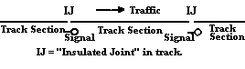(or track circuit)  A
length of track between, more or less, two signals (actually two <span class="def" dref="#DEF_IJ">insulated
joints.</span>) All signal-controlled track is divided into track sections.</span>
       </td>
    </tr>

<tr><td>Interlocking</td>
       <td>A collection of
signals and switches, with associated track and their control equipment, so
interlocked with each other as to be operable only in safe and logical
sequences of operations.</span>
       </td>
    </tr>

<tr><td>Tower</td>
       <td>A
room or building at a given interlocking with the control apparatus for it,
from which the tower operator controls it. Usually, the relevant track is visible
from the tower.</span>
       </td>
    </tr>

<tr><td>Tower Operator</td>
       <td>The person in the tower controlling the interlocking.</span>
       </td>
    </tr>

<tr><td>NX</td>
  <td>For &ldquo;e<b>N</b>trance-e<b>X</b>it.&rdquo; A type of <span class="def" dref="#DEF_xlkg">interlocking</span> control where routes
are specified by identifying their endpoints. See <a href="#nxo">Basic NX Operation.</a></span>
       </td>
    </tr>

<tr><td>Called</td>
       <td>(or Requested)   A signal is called, or requested, if the tower operator allows it to be other than red.</span>
       </td>
    </tr>

<tr><td>Clear</td>
       <td>A
signal is &ldquo;clear&rdquo; when it is not red, and permits movement.</span>
       </td>
    </tr>

<tr><td>Occupied</td>
       <td>A track section is &ldquo;occupied&rdquo; if there is any portion of a train in any
of it. The opposite is &ldquo;vacant.&rdquo;</span>
       </td>
    </tr>

<tr><td>Home Signal</td>
       <td>A two-headed signal under control
of the interlocking/tower operator as well as track occupancy and other
conditions. See <a href="#sigtype">Types of Signals.</a> Home signals are said to be <i>absolute</i>
because their <a href="#stops">stops</a> cannot be driven
down by <a href="#ak">automatic key-by.</a></span>
       </td>
    </tr>

<tr><td>Automatic Signal</td>
       <td>A
signal controlled only by train movement, i.e., not under the control of the
interlocking and tower operator. See <a href="#automatic">the discussion under &ldquo;Types of Signals&rdquo;</a></span>
       </td>
    </tr>

<tr><td>Approach Signal</td>
       <td>A
single-headed under control of the interlocking, as well as by track occupancy
and other conditions. Unlike a home signal, it never protects a switch or potential
conflicting movement. See <a href="#apsig">Signal Types</a> and <a href="#aplock">Approach locking.</a></span>
       </td>
    </tr>

<tr><td>Dwarf Signal</td>
       <td>A low, interlocked signal
with only red and yellow lenses. Dwarf signals are used to direct low-speed reverse and yard
movements. See the <a href="#dwarf">discussion under &ldquo;Types of Signals&rdquo;</a>
and the section on <a href="#clength">control lengths.</a></span>
       </td>
    </tr>

<tr><td>Marker Signal</td>
       <td>A signal with only red lights, more or
less the subway equivalent of a &ldquo;Do not enter&rdquo; sign.</span>
       </td>
    </tr>

<tr><td>GK Light</td>
       <td>(for siGnal indiKator) &mdash; the
symbol on the panel representing a signal.<br/>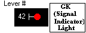</span>
       </td>
    </tr>

<tr><td>Insulated Joint (IJ)</td>
       <td> </span><span>            A
small section of an insulating substance, now usually fiberglass or fiber,
electrically separating two <span class="def" dref="#DEF_tracksection">track sections</span> from each
other.</span>
       </td>
    </tr>

<tr><td>Station number</td>
       <td>A
number indicating physical location of a signal or IJ, in 100's of feet from an
arbitrary-selected reference point.</span>
       </td>
    </tr>

<tr><td>Lever number</td>
       <td>A number used within the
context of an interlocking to talk about a switch or signal under its
control. See <span class="def" dref="#DEF_lever">lever.</span></span>
       </td>
    </tr>

<tr><td>Diverging route</td>
       <td>A
path diverging from a main track via a switch, i.e., when a switch &ldquo;has been
thrown.&rdquo;<br/>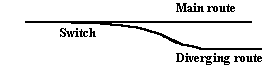</span>
       </td>
    </tr>

<tr><td>Main route or</td>
       <td>normal route  The opposite of <span>diverging
route, the &ldquo;not thrown&rdquo; path. </span></span>
       </td>
    </tr>

<tr><td>Points</td>
       <td>The
very tippy-toes of a switch that swing back and forth against the main track
when the switch moves. On the
interlocking panel, where the switch intersects the main track.</span>
       </td>
    </tr>

<tr><td>Lever</td>
       <td>A
control for a switch or signal, in former times an actual, physical lever. The lever for a signal normally forces
it to be red, and can only <i>permit</i> (request)
it to be otherwise, that is, clear, if
operated. In an NX interlocking
such as <b>NXSYS</b>, levers are imaginary and simulated by <a href="#relays">relay logic.</a></span>
       </td>
    </tr>

<tr><td>Trailing-point</td>
       <td>switch         A
switch, when viewed from a certain track in a certain direction, which merges
movement into that track in that same direction. If approached in the opposite direction
on the same track, it would be a facing-point switch.<br/>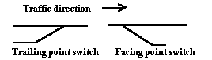
       </td>
    </tr>

<tr><td>Facing-point</td>
       <td>switch          A
switch, when viewed from a certain track in a certain direction, which allows a
choice of tracks for movement in that same direction. If approached in the opposite direction
on the same track, it would be a <span class="def" dref="#DEF_trps">trailing-point switch.</span></span>
       </td>
    </tr>

<tr><td>Control length</td>
       <td>of a signal. That length of track beyond the signal,
starting at it, which &ldquo;controls&rdquo; the signal. That is, if there is a
part of a train anywhere within it, the signal will be red. See the section on <a href="#clength">control lengths.</a></span>
       </td>
    </tr>

<tr><td>Overlap</td>
       <td>(of control length). <span class="def" dref="#DEF_clen">Control lengths</span> often
(always, in New York) extend from the signal to which they belong up to and
beyond the next signal.  The
portion beyond the next signal, which coincides with the near end of that
signal's control length, is called &ldquo;overlap.&rdquo;</span>
       </td>
    </tr>

<tr><td>Route</td>
       <td>A
cleared path for a train over an interlocking, from an entrance
point to an exit point. See <a href="#nxo">Basic
NX Operation.</a></span>
       </td>
    </tr>

<tr><td>Entrance</td>
       <td>The
location (actually always that of a signal) at the beginning of a route.  The
route is <span class="def" dref="#DEF_init">initiated</span> by the tower operator by pressing the button at (in
<b>NXSYS</b>, mousing) the <span class="def" dref="#DEF_GK">GK Light</span> of the signal there.</span>
       </td>
    </tr>

<tr><td>Exit</td>
       <td>The
location at the end of a route.  Routes in an NX (eNtrance-eXit)
interlocking are selected by choosing an entrance and
an exit. There is always a signal
at an exit.</span>
       </td>
    </tr>

<tr><td>Exit Light</td>
       <td>A
white light on the interlocking panel that lights up at each potential exit
when an entrance is selected (a route is <span class="def" dref="#DEF_init">initiated</span>).<br/>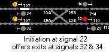</span>
       </td>
    </tr>

<tr><td>Initiate</td>
       <td>To begin the process of selecting a route by choosing the signal at its
       entrance (by mouse, in <b>NXSYS</b>). See <a href="#nxo">Basic NX Operation.</a></span>
       </td>
    </tr>

<tr><td>Entrance Light</td>
       <td>A white light on the interlocking panel
that looks just like an <span class="def" dref="#DEF_exlt">exit light,</span> which lights up at the point
of <span class="def" dref="#DEF_init">initiation</span> when
an exit has been selected and the route is
determined.</span>
       </td>
    </tr>

<tr><td>Complete</td>
       <td>To
finish the process of selecting a route by choosing the point of its exit (by mouse, in <b>NXSYS</b>).</span>
       </td>
    </tr>

<tr><td>Cancel</td>
       <td>To
dis-establish an <span class="def" dref="#DEF_init">initiation</span> or route or restore the <span class="def" dref="#DEF_lever">lever</span>
of a signal to normal, forcing the signal red, all the same operation in an NX
interlocking, accomplished in <b>NXSYS</b> by clicking left on the initiating signal.</span>
       </td>
    </tr>

<tr><td>Grade Time (GT)</td>
       <td>A signal which is normally red, and is cleared by trains approaching it
sufficiently slowly. See the section <a href="#timesig">Time Signals.</a></span>
       </td>
    </tr>

<tr><td>Station Time (ST)</td>
       <td> </span><span>              A
signal which, when approached sufficiently slowly, &ldquo;cuts back&rdquo; its <span class="def" dref="#DEF_clen">control length</span>, allowing trains to close in on each other. See the section
on <a href="#stationtime">Station Time.</a></span>
       </td>
    </tr>

<tr><td>Approach locking</td>
       <td>A
technique whereby the interlocking does not &ldquo;believe&rdquo; that a signal
is not a potential dangerous source of trains, even if cancelled, when there is
a train in front of it. See the
later section on <a href="#aplock">approach locking.</a></span>
       </td>
    </tr>

<tr><td>Time locking</td>
       <td>A technique where approach locking is released after a long time
interval has passed. See the later
section on <a href="#aplock">approach locking.</a></span>
       </td>
    </tr>

<tr><td>Auto-cancel</td>
       <td>The automatic
cancellation of a signal and a route by train motion past it. See <a href="#fleet">Auto-cancel
and Fleeting</a></span>
       </td>
    </tr>

<tr><td>Fleet</td>
       <td>To
effect a signal <span class="def" dref="#DEF_init">initiation</span> such that subsequent train motion
does not cancel it or its route.  See <a href="#fleet">Auto-cancel
and Fleeting</a></span>
       </td>
    </tr>

<tr><td>End-to-end</td>
       <td>(or &ldquo;through
routing&rdquo;) A feature where by several signals may be <span class="def" dref="#DEF_init">initiated</span>
and their routes completed by initiating the first and completing the
last. See <a href="#nxo">Basic NX Operation.</a></span>
       </td>
    </tr>

<tr><td>Train Stop</td>
       <td>(or stop or trip ) A trackside device associated with a
signal whose 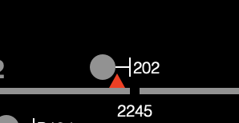 function is to trip a
train if the latter tries to pass the former when it is red.  Stops are (optionally) represented by
little red (or yellow) triangles in <b>NXSYS</b>, and can be seen in caricature in the
<a href="#fullsig">Full Signal Display.</a> See <a href="#stops">Train
Stops.</a></span>
       </td>
    </tr>

<tr><td>Trip</td>
       <td>What
a raised <a href="#stops">stop</a> does to a train,
causing a full emergency brake application, hopefully bringing the train to a
screeching halt. As a noun, same as
<a href="#stops">train stop.</a></span>
       </td>
    </tr>

<tr><td>Automatic Key-By (AK)</td>
       <td> </span><span> A feature of <a href="#automatic">automatic signals</a> and <a href="#apsig">approach
signals</a> that allows a train operator who brings the train to a creeping halt
to pass a red signal: the train
passing the signal at creeping speed drives the stop down.</span>
       </td>
    </tr>

<tr><td>UR Exit Feature</td>
       <td>(Not a standard term, but a standard UR feature) Being able to choose a route by
choosing entrance and exit signal buttons, with no need for special exit buttons, or in the case of
<b>NXSYS,</b> clicking on <span class="def" dref="#DEF_exlt">exit lights.</span> In fact, General Railway Signal's
&ldquo;NX&rdquo; (as opposed to UR) panels have used this feature for some years
now.</span>
       </td>
    </tr>

<tr><td>Relay</td>
       <td>An electromechanical logic element consisting a set of electrical switches (or
&ldquo;contacts&rdquo;) operated simultaneously by an electromagnet. See <a href="#relays">the full discussion</a> for more information.</span>
       </td>
    </tr>

<tr><td>Call-on</td>
       <td>A
manoeuver where the tower operator offers a special indication for a train to close
in on another train and pass a red <a href="#home">home
signal.</a> The tower operator must
take special action, a special indication on the signal is given, and the
train operator must press a button on the signal to lower the <a href="#stops">stop.</a> See <a href="#callon">call-on.</a></span>
       </td>
    </tr>

<tr><td>Off-side</td>
       <td>Refers
to a <a href="#stops">train stop</a> intended for a train moving in the other direction than a movement under discussion. Such stops have to be cleared for movements in the direction under discussion.</span>
       </td>
    </tr>

<tr><td>Auxiliary Switch keys</td>
       <td>(or &ldquo;Switch test keys&rdquo;) Miniature
levers on the interlocking panel which allow direct, manual call of switches.
See <a href="#auxkeys">the section on them.</a></span>
       </td>
    </tr>
</table>

<br clear=all style='page-break-before:always'>

<a name='startup'/><h2>1.2 Getting Started</h2>

<p>Starting up the simulator from Windows leaves you with a black board
and one meaningful command option. You must read in the definition of
an <span onmouseenter="defenter(this);" onmouseleave="defleave();"
class="def" dref="#DEF_xlkg">interlocking</span>, which includes track
and signal layout and control logic, from files. We supply the definitions of five interlockings with <b>NXSYS.</b>
Please see <a href="#scenarios">Supplied Interlocking Scenarios</a>
for a discussion of them. We recommend <a href="#progman">Progman St.</a> for those new
to this program or new to the subject matter.</p>

<p>Read in the <b>progman.trk</b> file using the <b>File|Open</b>
command on the menu bar. (You may also place its pathname as a command
argument on the Windows command line in a start up icon for
<b>NXSYS</b> for automatic startup of a given layout.)  It loads
whatever other files it needs from its folder.</p>

<p>Now you will see the control panel for <a href="#progman">Progman St. Interlocking.</a> Proceed with caution to <a href="#whatsee">What you see before you.</a></p>

<p>If you have not seen the demo system, try opening <b>demo1-Progman.xdo</b>
from the </span><b>Demo</b> item of the <b>File</b><span> menu. See <a href="#demos">Demo System</a> for more
information on this.</p>

<br clear=all style='page-break-before:always'>


<a name='whatsee'/><h2>1.3 What you see before you</h2>

<p>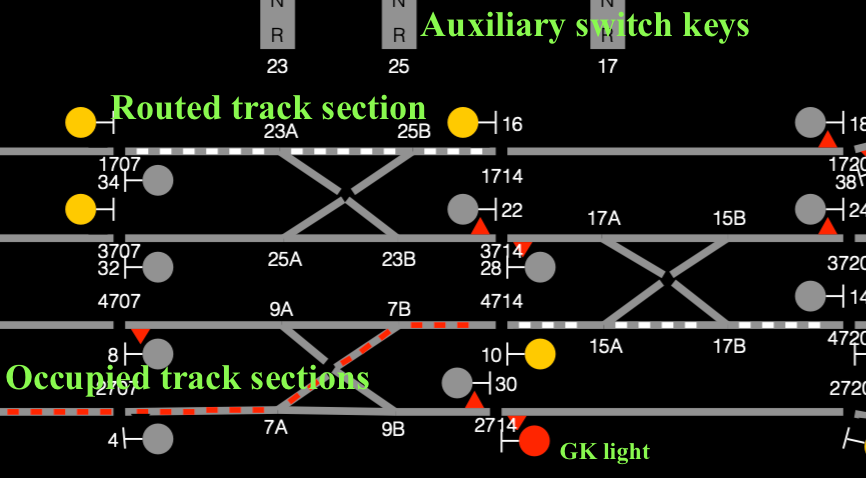Once you have read in the root file <b>Progman.trk</b>, you will see the interlocking panel for
&ldquo;Progman St.&rdquo;, a medium-sized interlocking. The gray lines represent the tracks &mdash;
there are no trains when you start. North is to your right. The
little circle-with-pedestal symbols, some of whose circles may be lit, are
called <span class="def" dref="#DEF_GK">GK Lights,</span> and represent <b>signals,</b> the &ldquo;traffic
lights&rdquo; of the subway.<br/><br/></p>

<p><br/>The tracks are divided into <span class="def" dref="#DEF_tracksection">track sections</span>
&mdash; you can see the little gaps between the sections, known as IJ's, or <span class="def" dref="#DEF_IJ">Insulated
Joints</span>. You can see one
where every signal appears. The
IJ's, and the signals at them, have numbers called <span class="def" dref="#DEF_sno">station numbers</span>,
which are measured in hundreds of feet along the route from some
arbitrarily-chosen reference point, often the origin of the particular subway
line or its construction contract. In the current default track layout, these are all in the 700's &mdash; that
is what the numbers in the 700's mean.</p>

<p>The signals can have one or two numbers associated with them, the
station number, already discussed, and a <span class="def" dref="#DEF_lever">Lever Number,</span> always
even, which, in the default layout, is a small number. The station number refers to the
physical location of the signal, the lever number is that by which the
interlocking defines the signal. The lever number appears next to the signal
head (the round part of the <span class="def" dref="#DEF_GK">GK light.</span></p>

<p>The switches have lever numbers, too, which are always odd. As the two ends of a switch are
controlled by the same &ldquo;lever&rdquo;, they are typically numbered A and B
with the same number. That is what
the numbers at the points of the switch mean.</p>

<p>Under the track model you will see a number of <a href="#auxkeys">auxiliary switch keys</a> 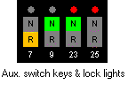. Written under each is the number of the
switch it controls. Normally, you
do not need to use these, but you can determine <a href="#slock">switch
locking</a> by observing them.</p>

<p>There is a horizontal scroll bar at the bottom of the window. Only the tabs on the end are active -
the thumbscroll and the page left-right bars are not enabled. You can scroll a little bit to see all
of large interlockings. You can also use the arrow and PageUp/PageDown keys to
scroll. Real interlocking panels are much bigger than a computer screen.</p>

<br clear=all style='page-break-before:always'>

<h2 id="litup">1.4 What the various lit-up things mean</h2>

<p><span class="def" dref="#DEF_tracksection">Track sections</span> are normally
dark (gray). When a track section
is lit up as a line of red dots, that means it is <span class="def" dref="#DEF_occ">occupied,</span> i.e.,
a train or portion of a train is in it. When it is lit up in white dots, that means that a route is lined up over it, i.e., it is ready for train movement.</p>

<p>The pieces of track being and representing switches are divided in
half, between the two track sections which they connect, and will indicate red
or white or dark along with those sections when the switch is set to a <span>diverging route. A switch which is lit up in <b>blue</b> is thrown (set to diverging
route), but neither <span class="def" dref="#DEF_occ">occupied</span> nor part of a route. 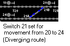 This is a non-standard feature not
present in real interlockings &mdash; this is because it is sometimes interesting to
know switch position in these cases, even though there is no necessity to know
it. Also, this feature was useful
before full NX control was implemented in NXSYS.</span></p>

<p>When a switch is moving (changing position), the switch reverse
position on the interlocking panel flashes red. This takes several seconds, and other
things may be going on simultaneously. If the <a href="#auxkeys">auxiliary switch keys</a>
are calling for a switch, it will light steady white in the position to which
it has been called.</p>

<p><span onmouseenter='defenter(this);' onmouseleave='defleave();' class='def' dref='#DEF_GK'>GK lights</span><span> represent signals. Although on real NYCT interlocking panel <a href="#automatic">automatic
signals</a> have no GK lights, <b>NXSYS</b> supplies them anyway for
your edification. In short, the GK
light reports the signal's aspect: yellow means &ldquo;clear&rdquo; (i.e., the
actual aspect is yellow or green), and red means &ldquo;red&rdquo;. However, if the represented signal is <i>not</i>
an automatic signal, i.e., <i>is</i> under the control of the interlocking, the
GK will be <i>dark</i> unless the signal is <span class="def" dref="#DEF_called">called,</span> or an <span class="def" dref="#DEF_init">initiation</span>
has been punched at that signal. (If the <span class="def" dref="#DEF_GK">GK light</span> is dark, and the
signal is not <span class="def" dref="#DEF_called">called,</span> it is a certainty that the actual signal
will be red.) A <a href="#home">home</a> or <a href="#apsig">approach
signal</a> may also be <span class="def" dref="#DEF_fleet">fleeted,</span>


in which
case a little green triangle appears on the <span class="def" dref="#DEF_GK">GK light</span>.
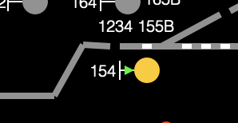<br/>
    See <a href="#fleet">Auto-cancel and Fleeting</a> for more about that.</span></p>

<p>Some signals  will have little red triangles sitting
on the <span class="def" dref="#DEF_tracksection">track sections</span> next to them. These are the symbol for <a href="#stops">train stops,</a> which are devices that
cause trains attempting to pass red signals to grind to a halt. See <a href="#stops">train
stops</a> for more information on this.</p>

<p>It is possible to see what the actual signal looks like, and watch
it change in real time, by popping up the <a href="#fullsig">Full
Signal Display</a>.</p>

<p>When a <span>route is <span class="def" dref="#DEF_init">initiated,</span>
that is, the beginning of a path over the interlocking is selected, a bright
white <span class="def" dref="#DEF_exlt">exit light</span> will light up in the track section at each exit allowable at that time. By selecting the exit with the mouse,
the tower operator selects and completes the route. That is the basic theory of NX
interlocking.</span></p>

<p>Under the track model are the <a href="#auxkeys">auxiliary
switch keys</a> . These are not
used in normal operation.  See <a href="#auxkeys">the section about them</a> for more information.</p>

<br clear=all style='page-break-before:always'>


<a name='mouse'/><h2>1.5 Using the Mouse to Control the Interlocking</h2>

<p>There are five kinds of mouse-sensitive objects in <b>NXSYS:</b> <span class="def" dref="#DEF_tracksection">track
sections</span>, switches, signals, <span class="def" dref="#DEF_exlt">exit lights</span> and
<a href="#auxkeys">auxiliary switch keys.</a> The mouse is
used instead of the metal or plastic buttons on a real interlocking panel. The left and right mouse buttons effect
the most common operations on each type of object; clicks with modifier keys (<b>shift</b>
or <b>control</b>) are used for less common operations. Finally, <b>control click-right</b> on
any object (except exit lights) offers a so-called <a
href="#controlright">context menu</a> of all possible operations on
the object, elementary and advanced, although its use is rarely necessary (documentation of
this may be found <a href="#controlright">below</a>).</p>

<a name="clicksig"></a>
<h3>Clicks on Signals</h3>

<p>Clicking <b>left on a signal's</b> <span class="def" dref="#DEF_GK">GK light</span> has an
effect which is different for different types of signals (See <a href="#sigtype">Types of Signals</a>), and differs
depending upon the state of the signal. The basic idea is to toggle the signal's <span class="def" dref="#DEF_called">requested (or called)</span>
state, i.e., work towards clearing it if it is not clear, and <i>vice-versa.</i> More specifically, clicking left on the <span class="def" dref="#DEF_GK">GK
light</span> for a(n)</p>

<ol>
  <li><b><a href="#automatic">automatic signal</a></b> or <b><a
  href="#marker">marker signal</a></b> has no effect.</li>
  <li><b><a href="#apsig">approach signal</a></b> attempts to call
(and clear) it if it is not <span class="def" dref="#DEF_called">called,</span> and unconditionally
  &ldquo;cancels&rdquo; it, i.e., de-routes it, if it is.</li>
  <li><b><a href="#home">home signal</a></b> or <b><a href="#dwarf">dwarf signal</a></b> <span class="def" dref="#DEF_init">initiates</span>
a route, if possible, at that signal if it is not initiated or <span class="def" dref="#DEF_called">called,</span>
and unconditionally &ldquo;cancels&rdquo; a route or <span class="def" dref="#DEF_init">initiation</span>
from that signal otherwise, forcing the signal to &ldquo;red,&rdquo; although <a href="#routl">route locking</a> might hold the route in
  spite of this.</li>
  </ol>

<p>Note that <span class="def" dref="#DEF_called">calling</span> or <span class="def" dref="#DEF_init">initiating</span>
a signal will not necessarily clear it; for a home or dwarf signal, it is guaranteed not to until an exit is
selected and all switches have fully moved, and its <span class="def" dref="#DEF_clen">control length</span>
is clear of trains.</p>

<p><b>Note also</b> that the interlocking might refuse to initiate at a given signal if
it believes that no routes from it are possible at that time. Note yet more the <a href="#urx">UR exit feature,</a> which allows you to click on the <i>signal</i>
at a lit <span class="def" dref="#DEF_exlt">exit light</span> instead of that exit light to choose that
exit.</p>

<p><b>Shift-click-left on a signal</b><span> turns its <span class="def" dref="#DEF_fleet">fleeted</span>
status on or off. See <a href="#fleet">Auto-cancel and Fleeting</a> for more
info. <b>Control-click-left</b> on
the <span onmouseenter="defenter(this);" onmouseleave="defleave();"
  class="def" dref="#DEF_GK">GK light</span> of a <a href="#home">home
  signal</a> offers a <a href="#callon">call-on</a> if appropriate
conditions are met.</p>

<p>Click <b>right on a signal,</b> more specifically its <span
  onmouseenter="defenter(this);" onmouseleave="defleave();"
  class="def" dref="#DEF_GK">GK light,</span> to pop up a <a href="#fullsig">Full Signal Display</a> for
that signal (on the Mac, there is a <a href="#Preferences"><b>Preferences</b></a> option to assign <b>click-right on a
  signal</b> to its <a href="#controlright">context menu</a>, and <b>control-click right</b> to the full
  signal display, although this breaks <a href="#demos">demo scripts.</a>).</p>

<h3>Clicks on <span class="def" dref="#DEF_tracksection">Track Sections</span></h3>

<p>Click <b>left</b> on a <span class="def" dref="#DEF_tracksection">track section,</span> any portion
of it, to toggle its <span class="def" dref="#DEF_occ">&ldquo;occupied&rdquo;</span> status, i.e., move a
train into it or out of it. Normal
train movement can be simulated by <span class="def" dref="#DEF_occ">occupying</span> several successive
sections (a normal train is ten cars of sixty-one feet), occupying sections
ahead and cleaning up behind. Of course, you can lift trains off the track with the mouse by simply clearing <span class="def" dref="#DEF_occ">occupied</span>
sections in a non-real manner. That
is, click left drops a train on the tracks at the point you click, or removes
it if there is one. This, of
course, is an NXSYS feature only, and not a feature of real
interlockings (although mice and rats do occasionally drop in on rights-of-ways). While this is the best way to learn the
effect of train movement on the interlocking, it is not &ldquo;realistic&rdquo;
or &ldquo;fun&rdquo;: for that you
need autonomous (auto, no mouse) simulated trains, which are provided by the <a href="#trains">train system.</a></p>

<p>To determine the circuit ID/section number of a track section, call
up its <a href="#controlright">context menu</a> (<b>control-right</b>),
select <b>Query Relay</b>, merely observe the number displayed, and dismiss the
relay query dialog.</p>

<h3>Clicks on Switches</h3>

<p>Clicking <b>right on a switch,</b> its points
or arms, will attempt to move that switch (change its position). The switch will flash red as it
moves. This is <i>not the correct way</i> to move switches, though: the correct way is to select routes and enjoy watching the interlocking identify and move the switches correctly: see <a href="#nxo">Basic NX Operation.</a> This capability is provided only for
debugging and playing around, i.e., deliberately annoying the interlocking for
the pleasure of later watching it move the switches at route-setup: you should never legitimately need to
move switches this way. This is an <b>NXSYS</b>
shortcut for the operation normally performed by manipulating the <a href="#auxkeys">auxiliary switch keys.</a></p>

<p>Note that switches that are in the reverse position
(&ldquo;thrown&rdquo; in sloppy, non-technical terminology), but not lit in red
or white are lit in blue dots &mdash; this is a non-standard feature, again, to
facilitate learning. Note that the switch <i>will not move</i> if the
interlocking does not permit it &mdash; this is a major goal of interlockings. See <a href="#ifeat">interlocking features.</a></p>

<h3>Clicks on <span class="def" dref="#DEF_exlt">Exit Lights</span></h3>

<p>Clicking <b>left on an <span class="def" dref="#DEF_exlt">exit light</span></b> selects that exit, and attempts to complete the route between the <span class="def" dref="#DEF_init">initiated</span>
entrance and that exit. Other lit
exits will be &ldquo;knocked down&rdquo;, switches moved, and the appropriate <span class="def" dref="#DEF_tracksection">track
sections</span> made part of the route, all in the correct
sequence.</p>

<p>There is always a signal at an <span class="def" dref="#DEF_exlt">exit light,</span> and one
may, if one chooses, use the <a href="#urx">UR exit feature</a>
and click on that signal instead of the exit light to select the exit. The relevant signal at an exit is
usually the one <i>opposing</i> the direction of traffic, unless, of course,
there is only one in the other direction. See <a href="#nxo">Basic NX Operation.</a></p>

<p>At times, you may see <span class="def" dref="#DEF_GK">GK lights</span> and switch points flash (the latter in white) in unison when you
attempt to <span class="def" dref="#DEF_init">initiate</span> some other signal. This indicates a conflict in routes that
you must resolve. See <a href="#lockconflicts">Locking conflicts.</a></p>

<h3>Clicks on <a href="#auxkeys">Auxiliary Switch Keys</a></h3>

<p>Click <b>left on an <a href="#auxkeys">auxiliary
switch key</a></b> calls for the switch to move normal or reverse,
depending upon which half is clicked. The call remains in effect as long as the mouse button is held.</p>

<p>Click <b>right on an <a href="#auxkeys">auxiliary
switch key</a></b> calls for the switch as does click left, but the call
remains in effect even after the mouse button is released; the call can be
cancelled by clicking on it again, the switch locking, or use of the menu item <b>Interlocking|Clear all aux switch keys.</b></p>

<p>Auxiliary switch keys
are not the standard way to operate switches. This capability is provided only for
debugging and playing around, i.e., deliberately annoying the interlocking for
the pleasure of later watching it move the switches at route-setup, as well as
esoteric needs discussed under <a href="#auxkeys">that rubric.</a>.
Use the <a href="#nxo">NX route selection mechanism</a> to
move switches in normal usage.</p>

<a name="controlright"/><h3>Context Menu (control-right click)</h3>

<p>Clicking <b>control-right</b> (that is, clicking <b>right</b> while
holding the <b>control</b> key down on any <span class="def" dref="#DEF_tracksection">track section</span>,
switch, signal, or <a href="#auxkeys">auxiliary switch key</a> offers (as per Windows convention) a
&ldquo;context menu&rdquo;, a list of possible operations upon the object on
which you clicked, including both &ldquo;interlocking&rdquo; operations
simulating various pushes, pulls, and turns of buttons on real panels, and
&ldquo;simulator&rdquo; operations, such as popping up <a href="#fullsig">full signal windows</a> or examining the <a href="#relays">circuitry</a> associated with that signal or other object. All of the operations available by other
clicks appear on the context menu, as well as some operations (such as the <a href="#callon">call-on</a> stop release key and <a href="#aplock">approach locking</a> release) not available
elsewhere.</span></p>

<br clear=all style='page-break-before:always'>

<a name='fullsig'/><h2>1.6 Full Signal Display (Aspect windows)</h2>

<p>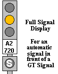Click right on the <span class="def" dref="#DEF_GK">GK light</span> of any signal
and a window with a full drawing of what that signal actually looks like will
be popped up. These signal images reflect the signal state dynamically. The windows can be moved around at will, and are child windows of the track board. They can be closed individually with their individual system menus, or all flushed from the screen with the <b>Other|Flush
Sig Wins</b> menu item. The title bar of a full signal display gives the most common nomenclature for the signal, which is the <span class="def" dref="#DEF_lever">lever</span> number for interlocked signals and the <span class="def" dref="#DEF_sno">station
number</span> for <a href="#automatic">automatic signals.</a></p>

<p>The full signal display window will pop up right under the signal
icon on the control panel; you should then pick it up with the mouse,
grabbing it by its title bar, and place it where you want.  On the
Mac, there is a <a href="#Preferences"><b>Preferences</b></a> option to show the Full Signal Displays without backing windows &mdash; the signals just hover.  On Windows, the little windows have &ldquo;close (X)&rdquo; in their title bars to close/hide them. <b>On the Mac, you double-click on a full signal display, with little window or without, to close/hide</b>.</p>

<p>These signals are implemented according to the &ldquo;new&rdquo;
(BMT/IND) convention (new since 1935, all new NYCT signals today). Red means stop, Green means that not only may you proceed, but the next signal is clear,
as well, and yellow means proceed with caution: usually, but not always, the next signal will be red.</p>

<p>When there is more than one head (vertical box of one to three
lights), the upper one means as above, and the lower one indicates green for
straight, yellow for diverging route . Sometimes there will be two-headed signals
where they do not seem necessary &mdash; we cannot go into that here.</p>

<p>At the bottom of the Full Signal Display (except for <a href="#dwarf">dwarf signals</a>), a little to the right of
the signal, you will see a depiction of the signal's <a href="#stops">train stop.</a> (On
the BMT and IND, it is to the left of the track, on the IRT, it is to the
right). The yellow head of the stop
will be on the bottom of the window if the stop is down (passable), or up on
its black stem if the stop is up (tripping, impassable). The stop goes up and down, visibly, in
the time it takes a real stop to do so. Please see <a href="#stops">stops.</a></p>

<br clear=all style='page-break-before:always'>

<a name='menu'/><h2>2. Menu Commands</h2>

<p>As the point of this system is to simulate another, already-defined
interface, most control is accomplished by that means, not Windows menus. Nevertheless, here are the known
commands. Most are disabled if no interlocking is loaded.</span></p>

<h3>2.0 Top-level (application) menu</h3>
<div style="margin-left:.5in">
<table class="cmdtable">
  <tr><td><b><span style="color:#090">NXSYSMac</span></b></td><td></td> <td>  <span
  style="color:#090">Mac only; expectable application-scope
  operations.</span> Always available. Other operations besides these (not
  <b>NXSYS</b>-specific) appear as well.</td></tr>

   <tr><td></td><td>About</td><td>Pops up a display of authorship,
     copyright, and version information.</td></tr>

   <tr><td></td><td>Preferences</td><td><a name="Preferences"></a>Pops up a dialog allowing 
   you to configure <a href="#stops">stop</a> display policy, <a href="#fullsig">full-signal display</a> style,
   and the meaning of <a href="#clicksig"><b>right-click</b> versus <b>control-right-click</b> on
     signals</a>.  Preferences are retained between application invocations.</td></tr>

   <tr><td></td><td>Quit</td><td>Closes down and exits the
   application, stranding passengers in existential limbo.</td></tr>     

<tr class="spacer" height="20px"></tr>

  <tr><td><b>File</b></td><td>Open</td><td>Reads
    in the definition of an interlocking from an interlocking definition file,
usual suffix <b>.trk</b>. Each interlocking in is own folder (interlockings comprise many source files). See the <a href="#scenarios">Interlocking
Scenarios</a> for the correct names of files for each version, but you don&rsquo;t have to know that if you use the <b>Interlocking Library</b> command below.</td></tr>


<tr><td></td><td>Reload</td><td>Asks
for confirmation, and re-initializes the currently-loaded interlocking from the
current interlocking definition file. This resets its state to &ldquo;as it was in the beginning&rdquo;. This can also be used to debug changes
to interlocking definitions or simply to reset the layout. See also </span><b><span>1 (Last interlocking pathname)</span></b><span> below on this menu to reattempt to load an interlocking that has failed to load.</td></tr>

<tr><td></td><td>File Info</td><td>Displays a small dialog with statistical information about the content of the interlocking, viz., the pathname of the top-level definition file, the count of signals, switches, relays, etc. </td></tr>

tr><td></td><td>Interlocking Library...</td><td>Pops up a &ldquo;submenu&rdquo; of interlocking scenarios supplied with the application. Selecting any loads it.  It is driven by a simple XML file in the application&rsquo;s directory (or its Resources directory on the Mac).</td></tr>


<tr><td></td><td>Recent Files...</td><td>Pops up a &ldquo;submenu&rdquo; of recently-visited interlockings in most-to-least-recently-used
order, with single-digit accelerators on Windows.  Selecting any loads it.  On both systems you can clear the list (or menu, as the Mac calls it.)</td></tr>


<tr><td></td><td>Demo</td><td>brings
up a file dialog for interlocking demo (<b>.xdo</b>) files, and runs the demo
you select. See the <a href="#demos">Demo System</a> section.</td></tr>


<tr><td></td><td>Print Logic</td><td> (<b>Windows only</b>) offers
a Printer Dialog and prints a set of electric schematic diagrams for all the <a href="#relays">relays</a> in the interlocking, sorted in
name order, along with comprehensive indexes in the traditional style at the
end of the set. The state of the
contacts will reflect the state of the relays at the time it is invoked. Works only if an interpreted (<b>.trk</b>)
interlocking is loaded. See <b>Print Logic File.</b></td></tr>


<tr><td></td><td>Exit</td><td>     Closes
down the application. Passengers are
left stranded in the tunnels without power or Windows resources.  Use <b>Quit</b> on the <b>NXSYSMac</b> menu on the Mac.</p></td></tr>


<tr><td></td><td>1 (Last interlocking pathname)</td><td> Tries to reload the last interlocking definition successfully loaded. You
cannot use <b>Reload</b> if no interlocking is loaded; this is useful to reload
an interlocking being debugged which has failed to load.</td></tr>

<tr class="spacer" height="20px"></tr>

<tr><td><b>Interlocking</b></td><td></td><td>These commands perform
various auxiliary functions controlling the interlocking. They have no counterparts at real
interlockings (although there is an &ldquo;emergency switch release&rdquo;, but <b>NXSYS</b>
and its interlockings do not now implement it &mdash; <b>Release all approach
locking</b> is the closest to it. They are to facilitate experimentation.</td></tr>

<tr class="spacer" height="10px"></tr>

<tr><td></td><td>Clear all track</td><td>is not an interlocking function at all. Lifts all trains into the sky, clearing all <span class="def" dref="#DEF_occ">occupied</span> <span class="def" dref="#DEF_tracksection">track
sections.</span> Obviously, there is no real-life parallel. This is not the same as killing all <a href="#trains">trains.</a></td></tr>


<tr><td></td><td>Cancel all signals</td><td>does
just that, cancelling all initiations and routes as well, making all
  <a href="#home">home,</a> <a href="#apsig">approach,</a> and <a
  href="#dwarf">dwarf</a> signals red, dropping all routes, and
  cancelling all <span onmouseenter="defenter(this);"
  onmouseleave="defleave();" class="def"
  dref="#DEF_fleet">fleeting.</span>  Routes might still be shown lit,
  though, due to <a href="#aplock">approach locking</a> and <a href="#routl">route locking.</a></td></tr>


<tr><td></td><td>Release all approach locking</td><td>   See the
  discussion of <a href="#aplock">approach locking</a> for the need
  for and explanation of this. Please note that it also releases all route locking. Typing <b>Control-A</b> at any time invokes this command.</td></tr>


<tr><td></td><td>Clear all aux switch keys</td><td><span>            Restores
all <a href="#auxkeys">auxiliary switch keys</a> to their
neutral position, i.e., not calling for any switch in any direction,
extinguishing yellow and green &ldquo;hold&rdquo; lights. <b>Normal all switches</b> will, of
course, not normal any switches held called reverse by auxiliary switch keys.</span></td></tr>


<tr><td></td><td>Normal all switches</td><td>       calls
all switches to move to the normal (main route) position, not by magic, but by
&ldquo;operating their <span class="def" dref="#DEF_lever">levers.&rdquo;</span> Thus, only switches which are neither
locked (see <a href="#slock">Switch locking</a>) nor
called reverse by <a href="#auxkeys">auxiliary keys</a> or
established routes will move. The
switches will all move in parallel and take the usual amount of time, and
indicate as such.</td></tr>


<tr><td></td><td>All the above</td><td><span>      clears
all track, cancels all signals and routes, releases approach locking, and
normals all switches, in that order, which is guaranteed to work if there are
no bugs. If there are no bugs, this
is a faster and more &ldquo;correct&rdquo; way of resetting an interlocking to
its initial state than </span><b>File|Reload.</b> This command interposes a 1.5 second
delay before attempting to <b>Normal all switches</b> to assure that all <a href="#stops">train stops</a> have returned to their tripping position, without which some switches to be called normal might be
locked.</td></tr>


<tr><td></td><td>Bobble all Signal repeaters</td><td><span> simulates
a 3-second failure of track electrical power to all &ldquo;red signal repeater (<a href="#nomenclatures"><b>RGP</b></a>)
relays&ldquo;, causing false indication to appear at the interlocking, if the
latter is programmed for this feature (<a href="#progman">Progman
St.</a> currently is, <a href="#islington">Islington</a>
is not). This sometimes happens in
real life, and activating this menu item (which requires confirmation) tests if
the interlocking is properly designed to handle this contingency.</span></td></tr>

<tr><td></td><td>Automatic Operation</td><td><span>For interlockings that have this feature, enables the pop-up of route selector &ldquo;boxes&rdquo; and operation of the interlocking by means of them.  See <a href="#autoop">Automatic operation</a>.</td></tr>

<tr class="spacer" height="20"></tr>

<tr><td><b>Trains</b></td><td></td><td>These
commands create and manage <a href="#trains">trains.</a> See that section for a description of
that feature.</td></tr>


<tr><td></td><td>New</td><td>Asks
you to choose a track, with the mouse or by typing a digit, and creates a new
train, popping up its train dialog. The train will be in the &ldquo;Observant&rdquo; state, and will slow down
and stop outside the limits of the interlocking if you have not cleared a route
for it.</td></tr>


<tr><td></td><td>New (stopped)</td><td>Same as <b>New</b>, except the train will be created in the stopped state
(&ldquo;Free will&rdquo; mode, 0 fps). The train will not move until you advance its throttle or place it into
&ldquo;Observant mode&rdquo; and clear signals in front of it.</td></tr>


<tr><td></td><td>Halt all</td><td>halts
all trains in their tracks, immediately, with infinite deceleration. You will have to move individual speed
controls on the train dialogs to restart them.</td></tr>


<tr><td></td><td>Kill all</td><td>makes all trains and their dialogs disappear instantly.</td></tr>


<tr><td></td><td>Minimize all</td><td>minimizes all train dialogs, reducing them to
numbered icons at the desktop bottom. They can be restored individually (as any iconized window), or <i>en
masse</i> with <b>Show all.</b> You
can minimize any train dialog by clicking its minimize control; train motion
will not be affected. &nbsp;<span style='color:#900'>This feature is not available on the Macintosh.<span></td></tr>


<tr><td></td><td>Show all</td><td>restores all minimized train dialogs to visibility.&nbsp;<span style='color:#900'>This feature is not available on the Macintosh.<span></td></tr>

<tr class="spacer" height="20px"></tr>

<tr><td><b>Relays</b></td><td></td><td>These
commands facilitate debugging or observation of the <a href="#relays">relay logic</a> implementing each interlocking. They are intended for the &ldquo;signal maintainer,&rdquo; not the tower operator. See <a href="#relays">Chapter 5, &ldquo;Relays&rdquo;</a>.</td></tr>


<tr><td></td><td>Query</td><td><a name='relayquery'/> puts up a dialog asking for the name of a
relay, such as <b>4707NS</b>. The state of
that relay will be reported via a second dialog, which will also display a list
of all relays whose state depends upon the state of the relay selected. Double-clicking on any one of those
starts anew at that relay. This
works in interpreted as well as compiled interlockings, in which latter case it
is the only logic probing tool available. In an interpreted interlocking, drawing the circuit of the selected
relay is also offered. The last 40
relays requested are offered in a combo-box drop-down.</td></tr>


<tr><td></td><td>Trace</td><td>pops
up a tall, thin window in which all simulated relay transitions are
reported. In true Lisp fashion,
transitions of compiled relays are reported as effortlessly as those of
interpreted ones. If the window is
already up, this command hides it (making keyboard use (<b>Alt+R T</b>) very
convenient). See <a href="#tracewindow">Relay Trace Window</a>.</td></tr>


<tr><td></td><td><b>Show Circuit</td><td><a name='showcirc'/>
prompts for the name of a relay, like </span><b>Query,</b><span> and the pops up a
window drawing the circuit of that relay in traditional Transit Authority
notation. &ldquo;Interpreted&rdquo; (<b>expr</b>)
interlocking code (<b>.trk</b>) must be loaded. If you click left on any relay contact,
the circuit for that relay will then be displayed. Unlike traditional drawings, however, <b>NXSYS</b>
drawings respond in real-time to relay state changes and update
accordingly! For fun, start by
displaying the circuit for 10PBS or 10XS at <a href="#progman">Progman
St.</a> and set up some <span class="def" dref="#DEF_etoe">end-to-end</span> routes involving
signal 10 and then explore. 24PBS
is impressive, too. The last 40
relays requested are offered in a combo-box drop-down. See <a href="#relays">Relays.</a></td></tr>

<tr class="spacer" height="20px"></tr>

<tr><td><b>Other</b></td><td>Flush Sig Wins</td><td>removes
all <a href="#fullsig">Full Signal Displays</a> from the
screen. See there, and the <a href="#mouse">Mouse usage info</a>.</td></tr>


<tr><td></td><td>Show Stops</td><td><a name="showstops"/>offers
a dialog with three radio buttons controlling the conditions under which <a href="#stops">train stops</a> are displayed on the panel. You may choose to display
stops only when they are in the &ldquo;stop&rdquo; position (the default,) at all
times, in which case they will be displayed yellow when &ldquo;clear&rdquo; and
red when at &ldquo;stop&rdquo;, or not at all, which is the case on a real NX/UR
panel.<span style="color:#900"> On the Mac, this is the <b>Stop
  Policy</b> tab on the <a href="#Preferences"><b>Preferences</b></a> dialog callable from the <b>NXSYSMac</b> menu.</td></tr>


<tr><td></td><td>Scale Display</td><td>
offers a dialog which accepts a number, default 1, which zooms or shrinks the
display scale by that factor from its default. By setting this to .8, .7 or .5 or so,
large layouts can be made to fit on screen. As the display becomes smaller, label
numbers are discarded and other numbers are condensed.</span>&nbsp;<span style='color:#900'>This feature is not needed on the Macintosh; use native magnification gestures.</td></tr>

<tr class="spacer" height="20px"></tr>

<tr><td><b>Help</b></td><td>Usage/Help</td><td>You
  must know about this already if you are reading this. Gets you into
  this document.</td></tr>


<tr><td></td><td>About</td><td>Displays system authorship and copyright information.&nbsp;<span style='color:#900'>On the <b>NXSYSMac</b> menu on the Macintosh.</td></tr>


<tr><td></td><td>(Scenario-specific help)</td><td>Help
about the specific <a href="#scenarios">scenario</a>
(specific interlocking) you have loaded is made available on the <b>Help</b>
menu. The text can come from this
helpfile or the interlocking definition.</td></tr>


</table>
</div>


<a name='demos'/><h2>2.1 Demos and the Demo System</h2>

<p><b>NXSYS</b> is more than willing to demo its capabilities by running automated
scripts. These scripts consists of instructions to &ldquo;press&rdquo; (that is,
click on) the buttons of the interlocking panel, comment upon what it's doing,
and wait between commands. A sample
demo script, <b>demo1-Progman.xdo,</b> is provided, both as a model and as a
learning tool for <b>NXSYS.</b>  You may have to change the
<b>Progman.trk</b> pathname in it to account for file structure on
your system.</p>

<p>Demos are called up from the <b>Demo</b> item of the <b>File</b> menu, which puts
up a File Dialog allowing you to select a demo file. Alternatively, you can (on Windows only)
specify</p>
<blockquote><b>-demo</b> <i>demo-script-pathname</i>
    </blockquote>
when you invoke <b>NXSYS</b>, to get that
file loaded and run automatically. The selected file is then &ldquo;run&rdquo; via timer events: that means that as the demo is going on,
the interlocking and all of its commands, menus, and controls are usable, as
well as those of other Windows programs. You can actually interact and interfere with the demo as it is going on,
or play in another portion of the interlocking, without fear of creating an
unsafe situation. Relay Interlockings are highly parallel real-time systems.</p>

<p>If you are using a Windows screen-saver, do not be surprised if it
is invoked or the screen is blacked out due to inactivity while watching the
demo.</p>

<p><span style="color:#800"><b>If you are on the Mac</b>, you must disable the <a href="#Preferences"><b>Right-click on signals is menu</b></a> option if you have enabled it</u>, because <b>mouseright</b> in demo scripts assumes <a href="#fullsig">full-signal display</a>.  This is a shortcoming in the demo user-interface interaction design that may be remedied in the future.</p>

<p>You can pause or end the demo at any time while it is active: typing a <b>space</b> pauses the demo or
resumes it if it is paused, and typing the <b>ESCAPE</b> key ends an active
demo. One can, of course, simply
exit <b>NXSYS</b> from the <b>File</b> menu while the demo is active, and that
will end it, too.</p>

<p>The forms in the demo script are simple Lisp forms (if you don't
know what that means, ignore this description) that name signals,
track sections, and <span class="def" dref="#DEF_exlt">exit lights</span> by number, provide strings to
display, and time intervals in milliseconds to wait. Most forms take an optional comment
which is displayed in a window at the bottom of the app's window.</p>

<p>A form naming a <b>track</b> section, <b>signal</b>, or <b>switch</b>
is a request to click left on that object. If the first element of the form is <b>mouseright</b>,
mouse right will be used instead, and the remainder of the form is the
&ldquo;real form&rdquo;. <b>mouseleftshift</b>
or <b>fleet</b> works the same way for click left with shift, used for <a href="#fleet">fleeting signals.</a></p>

<p>You can create and schedule <a href="#trains">trains</a>
with the demo system, providing a constant flow of traffic for you to
route. You have to pick a unique
train number (currently 1 to 15) for each active train. The second number in the <b>create</b>
form is a track number. The known <b>train</b>
keywords are <b>create, halt, reverse, kill, freewill, observant, callon,
minimize, restore.</b> <b>callon</b>
presses the <a href="#callon">call-on button,</a> <b>minimize</b>
and <b>restore</b> minimize and restore the train dialog.</p>

<p><b>(train</b> <i>n</i> <b>create</b> <i>where</i> <i>{...options...}</i><b>)</b>
allows several parameters to be specified (optionally, perhaps multiply) for
trains at creation time: <b>hidedialog</b> causes the train dialog to be
hidden, <b>minimizedialog</b> causes it to be minimized, and <b>halted</b>
causes the train to be created halted, in &ldquo;free will&rdquo; mode (the
default is &ldquo;observant&rdquo;). Starting a demo destroys all <a href="#trains">trains</a>
extant at that time.</p>

<p><b><i>where</i></b> is a track number in Version 1, direction determined by that track number.  In Version 2, including the Mac, <i>where</i> is the ID of an insulated joint at the extremities of the scenario, where a train will enter in the only possible direction.</p>

<p>The form <b>(options</b> <i>...options...</i><b>)</b> controls
global behavior. Currently recognized are <b>noxes</b>, which disables (for this demo) the big yellow &ldquo;X&rdquo; which simulates the mouse, <b>maximize</b>, which maximizes <b>NXSYS</b>'s window immediately, and <b>nostops, showstops,</b> and <b>showstopsred</b>,
which automate the stop-policy control (see <a href='#showstops'/><u>Show Stops</u></a>). These
options are intended to provide for lifelike simulation. The demo legend window does not appear
until the first time a form comment or <b>say</b> is used, so if you do not use
any form comments, the demo legend will never appear.</p>

<p>There is also a newer scripting system, only available on Windows, <b>NXScript</b>, which is
more oriented towards creating realistic scenarios and organized testing, and
has many more capabilities. Please see <a href="#scripts">Scripting
and OLE Automation</a>.</p>

<p>Here is some typical demo scripting with trains. See also the supplied demo <b>demo1-Progman.xdo</b>.</p>

<blockquote><tt>(train 1 create 2606 minimizedialog)   ;create train 1
at IJ 2606, minimized dlg<br/>
(signal 24 &quot;Let's initiate a route at signal 24!&quot;)<br/>
(wait 1000)<br/>
(exitlight 8 &quot;Now when we choose the
exit light at signal 8...&quot;)<br/>(say 1200 &quot;Switches 21 and 15
move,&quot;)<br/>(wait 2000) <br/>(train 1 speed 50.5)      ;set speed
- sim feet/seconds<br/>
(wait 180000)              ;wait 3 minutes for next train<br/>
(train 2 create 1606)<br/>
(fleet signal 26 &quot;Now let's initiate at 26, fleeted&quot;)<br/>
(train 2 minimize) ; can minimize it afterwards, too...</tt></blockquote>

<br clear=all style='page-break-before:always'>


<a name='trains'/><h2>2.2 Trains and the Train System</h2>

<p><b>NXSYS</b> is not unlike flight simulators in that it implements the
simulation of a real-world transportation system. With flight simulators and car
simulators the goal of the &ldquo;game&rdquo; is to master the driving of complex
vehicles through passive media: the air and roads do little more than
sit there. In <b>NXSYS,</b> however, you control and learn a complex
reactive environment through which vehicles may run; it does not
simulate, but actually <i>is</i> an NX interlocking. The goal is not
to learn the piloting of trains, but the controlling of <span
onmouseenter="defenter(this);" onmouseleave="defleave();" class="def"
dref="#DEF_xlkg">interlockings</span> which themselves restrict the movement of trains.</p>

<p>With that in mind, the most instructive mode of usage of <b>NXSYS</b>
is to control switches and signals and <span class="def" dref="#DEF_occ">occupy</span> and vacate <span class="def" dref="#DEF_tracksection">track
sections</span> one-by-one, using mouse-left on <span class="def" dref="#DEF_tracksection">track sections,</span>
carefully observing what happens when each becomes <span class="def" dref="#DEF_occ">occupied</span> and
becomes vacant. This is the
equivalent of dropping and removing axles from the tracks to see the effect on
the interlocking.</p>

<p>While instructive, this is not as much fun as having real trains
obey the signals and move through the interlocking. While <b>NXSYS</b> cannot create real
trains in a simulated world, it can, however, simulate them. But like many a real tower operator, the only
evidence of the &ldquo;trains&rdquo; that you will see on the panel is a line of
red (<a class='def' dref='#DEF_occ'>occupied</a>) lights.</p>

<p>You create a train by choosing the <b>Trains|New</b> or <b>Trains|New (stopped)</b><span> menu item; choose
between them as according to whether you want the train to start out moving
(automatically) or stopped. You will be asked to choose a track either with the mouse or by typing the track
number (1 is Southbound Local, 2 Northbound Local, etc, as numbered on the
model). A <b>Train Dialog</b> will
pop up at that time, one for each train. The train will enter at the South end of a Northbound track and
vice-versa. The train dialog will
show, dynamically, the position of the front of the train, its speed, and the
next and last signals seen. The
train dialog may be minimized, or the train &ldquo;killed&rdquo; (made to
disappear) or halted at any time by pressing buttons on the dialog. There is also a scroll bar which is the
speed control. When a train
vanishes off the other end of the interlocking, its train dialog will
disappear.</span></p>

<p>There are two modes of train behavior, <b>Observant</b> (the
default) and <b>Free Will.</b> An
&ldquo;observant&rdquo; train acts as though under the control of a competent
&ldquo;tower operator&rdquo; who is indeed watching the signals. It will slow down and speed up as
signals change, and slow to a halt at red signals. It will start up automatically when
stopped before a signal which you clear. If you create a train (all of which start out observant) without having
set up any routes for it, it will grind to a halt off the limits of the
interlocking, waiting for you to clear a route for it.</p>

<p><b>Free Will</b> (which may be chosen with the radio buttons in the train dialog)
trains do not obey the signals &mdash; they obey you; they think they have free will, but
little do they know that their thoughts are coming from a higher power. You can use the &ldquo;Speed&rdquo; slider
scroll bar and &ldquo;Halt&rdquo; buttons to control their speed.</p>

<p>Even if you are a <b>Free Will</b> , you may not defy the
interlocking. If you try to run a
red signal, you will be <a href="#stops">tripped</a>
(forcibly stopped_ by the <a href="#stops">train stop</a>
of that signal, forced to a halt, chastized, and your train
&ldquo;killed.&rdquo; This will also
happen if you, as tower operator, cancel a signal in the face of an oncoming train
without giving it enough time to slow down. Thus, it is theoretically impossible to
orchestrate an unsafe train movement: that is the whole <i>point</i> of <span class="def" dref="#DEF_xlkg">interlocking.</span> Note that <a href="#dwarf">dwarf
signals</a> are intrinsically unsafe, as it is possible to pass them in
unsafe circumstances, as they lack stops, but the Train System does not help
you with reverse-direction train moves (<b>note also that the train system does
NOT (currently) detect and trip on raised off-side stops &mdash; see <a href="#stops">&ldquo;Stops&rdquo;.</a></b>).</p>

<p><b>Free Will</b><span> trains may, however, pass <a href="#automatic">automatic
signals</a> and <a href="#apsig">approach signals</a>
at crawl-speed, even if the stops are up via a maneuver known as <a href="#ak">automatic key-by.</a> See <a href="#stops">Train Stops.</a></span></p>

<p><b>Free Will</b><span> trains can even pass <a href="#home">home signals</a>
at stop if the tower operator offers a <a href="#callon">call-on.</a> In this case, the yellow light at the
bottom of a <a href="#home">home signal</a> facing a train
of the train system will be lit (R R Y will appear in the train dialog), and a
&ldquo;call on&rdquo; button will appear automagically in the train dialog; The train should crawl up to that signal
in <b>Free Will</b> mode: the button will not be obeyed unless the train is
within 10 sim-feet of the signal! Pressing that button will lower the <a href="#stops">train
stop</a> and cause the button to disappear, at which point the <b>Free
Will</b> train operator can creep up on the back of another train, with the
tower operator's cooperation. Please see
the <a href="#callon">call-on</a> section for more
information on this.</span></p>

<p>You may switch between <b>Observant</b> and <b>Free Will</b>
behavior at any time by operating the radio buttons on the train dialog. The initial state of a newly-created
train is chosen as <b>Observerant</b> or <b>Free Will</b> by virtue of its
having been created with <b>Trains|New</b>
or <b>Trains|New (stopped)</b> respectively.</p>

<p>There are three buttons always present on the train dialog, <b>Halt,
Kill,</b> and <b>Rev</b>(erse). <b>Halt</b>
stops the train immediately, and throws it into <b>Free Will</b> mode &mdash; you
must then click <b>Observant</b> to restart it, if you wish it to run
automatically. <b>Kill</b>
immediately destroys the train and lifts it off the tracks. <b>Rev</b> is only enabled when the
train is stopped, either having ground to its own stop or having been
<b>Halt</b>ed. When pressed, the train operator moves to the other end
of the train, and if the train is &ldquo;observant&rdquo;, it will
obey signals facing its other end and move in the other direction &mdash; it &ldquo;turns
the train around&rdquo;.</p>

<p>There are main menu commands to minimize and restore all train
dialogs, halt all trains, and kill (make disappear) all trains.</p>

<p>With the train system, it is easy to set up one-time routes, watch a
train move over them, bring in the next train, hold trains at signals, turn
trains around at terminals, and so on, all in parallel, just like at a real
tower.</p>

<br clear=all style='page-break-before:always'>

<b>Cab View and OLE sections removed here.</b>

<a name='ifeat'/><h2>3. Signalling and Interlocking Features</h2>

<p>This section describes standard signalling and interlocking
concepts, both in general and as they are implemented in <b>NXSYS</b> and its
sample interlockings. These are not
only the fundamentals of signal function, but the various features that
facilitate switch and signal operation and constrain it to be safe.</p>

<p>If, when <a href="#mouse">Using the Mouse to Control
the Interlocking,</a> you find that signals will not clear and switches will not move on your demand, that
is why. That is the whole purpose
and meaning of <span class="def" dref="#DEF_xlkg">interlocking,</span> to enforce operation in the proper
order.</p>

<p>With an NX interlocking, you do not move switches or attempt to
clear signals directly, but instead, let the &ldquo;system&rdquo; do it as a
consequence of route selection (see <a href="#nxo">Basic NX
Operation.</a>) Nevertheless, the &ldquo;system&rdquo; goes through the same moves as would a
&ldquo;manual&rdquo; tower operator in an old-style interlocking, and is subject to the
exact same constraints and cross-locks as in that case. These are described in the subsequent
sections of this chapter.</p>

<p>The following sections are presented in the order in which they must
be understood. The section <a href="#clength">Control Length &mdash; the Purpose of Signals</a>
underlies and determines the entire philosophy and implementation of the signal
system, is thus first. Please
proceed, prepared to stop at the <a href="#clength">next section.</a></p>

<br clear=all style='page-break-before:always'>


<a name='clength'/><h2>3.1 Control Length &mdash; the Purpose of Signals</h2>

<p>The charter of rapid transit is evident in its name: to move people
safely as rapidly as possible. While trains, motors, and propulsion power are responsible for the
rapidity, signals are responsible for the safety.</p>

<p>A rapid transit signal's job is to keep trains at a safe distance
from dangers, including each other, via three closely-related functions,</p>
<ul>
<li>To indicate to train operators whether the track ahead is clear,</li>

<li>To
instruct the train operator to proceed (green), proceed prepared to stop at the
next signal (yellow), or to stop (red), accordingly, and </li>

<li>To
forcibly stop a train via its <a href="#stops">train stop</a>
should that train fail to comply with an indication of &ldquo;stop.&rdquo;</li>
</ul>

<p>An extent of track being
&ldquo;clear&rdquo; means that it is proven free of hazards such as other trains,
<span class="def" dref="#DEF_trps">trailing-point switches</span> set the wrong way, open drawbridges,
conflicting routes from other signals, and so on. The extent of track ahead of a given
signal for which it makes this check, which is different for different signals,
is called its <b>control length,</b> as it controls the signal's indication.
If, at a given time, any of these hazards appear within any portion of a
signal's control length, that signal is required and designed to display an
indication of &ldquo;stop&rdquo;. A
&ldquo;clear&rdquo; indication confirms the proven absence of hazards within a signal's control length.</p>

<p>Signals are placed regularly along a
track, at <span class="def" dref="#DEF_IJ">insulated joints,</span> subject to considerations to be
discussed. Each signal's indication
instructs the train operator what to do <i>up to the next signal.</i> An indication of &ldquo;proceed&rdquo;, or
&ldquo;proceed prepared to stop at next signal&rdquo; is only valid up until the
next signal, when that signal's indication assumes validity.</p>

<p>Consider the following &ldquo;single line&rdquo; signalling diagram. As per standard, the lines under the track
starting in little circles at signals and ending in arrows represent those
signals' control lengths. The
&ldquo;lazy house&rdquo; shaped object represents a stopped train. The big arrow indicates the direction of
traffic. The signals here are 200' apart.</p>

<p>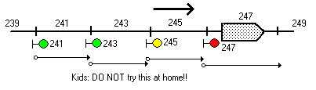</p>

<p>Here, each signal is controlled
solely by the occupancy of the &ldquo;block&rdquo; in front of it, extending to
the next signal (that is, whether it is clear or not. 245 is yellow because 247 is red). Assuming that 245 is visible early
enough for the operator of an approaching train to observe and obey it and slow
down, and posted speed restrictions are being obeyed, that train will stop
before arriving at the red signal 247, and the rear of the stopped train, and
this scenario is adequate.</p>

<p>But in real life, this will not do:
an oncoming train might not be operating within the posted speed limit, and the
train operator might be temporarily or permanently physically, mentally, or
morally incapacitated, in which case the signal system, via its <a href="#stops">train stops,</a> must forcibly stop the
train. In these cases, the yellow
aspect (indicating &ldquo;prepare to stop at next signal&rdquo;) might be
ignored, and a train going at the fastest possible speed will arrive at signal
247 at speed.</p>

<p>Assuming signal 247 had a train stop
that acted as expected (assumed &ldquo;tripping&rdquo; position when the end of a
train passed it, although this not quite the case in reality, see <a href="#stops">train stops</a>), and the oncoming train's
brakes were fully applied automatically by it, a collision would still result,
because trains moving at 60 or 70 miles per hour cannot &ldquo;stop on a
dime:&rdquo; typically, hundreds of feet are required for a train moving at full
speed to come to a halt via a brake application.  On this account, a train must be
commanded to stop hundreds of feet <i>before</i> an obstruction <i>at</i> which
it <i>must</i> stop. This distance is called the <b>worst-case (or
&ldquo;safe&rdquo;) braking distance,</b> and is a function of the maximum speed
of trains, the terrain, the weather conditions, and so on. It is called
&ldquo;worst-case&rdquo; because it must take into account brakes in the worst
condition (short of total failure), trains going at the maximum achievable,
impermissible, speed, tracks at maximum slipperiness, and so on.</p>

<p>It can be seen that simply increasing
the block length to the worst-case braking distance, or many times it, does not
improve the situation &mdash; a train approaching another train at the near end of a
block at speed will not have enough space to stop, even if &ldquo;tripped&rdquo;,
no matter how long the block. In
track-circuit based signalling, train position can be reckoned only in terms of
which track circuits the train occupies. The solution to this problem is <span class="def" dref="#DEF_ovlp">overlap</span> of control
lengths, that is, having each track circuit (section) control not one but
several signals behind it &mdash; were there only one red signal behind a train, the
situation is always possible in which it is too close behind the train for safe
braking. Consider the following far more realistic scenario:</p>

<p>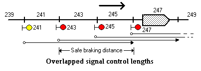</p>

<p>Here, the control lengths of all
signals are <span class="def" dref="#DEF_ovlp">overlapped.</span> 243, 245, and 247 indicate &ldquo;stop&rdquo;, and 241 indicates
&ldquo;prepare to stop at next signal&rdquo; (yellow aspect). The worst-case braking distance here is
somewhere between 200 and 400 feet. An oncoming train barreling
ahead at full speed ignoring signal 241 will be tripped by 243, and come to a
halt within the safe braking distance indicated, that is, short of block 247
and the train it contains. From
this it can be seen that the key to safety is a control length <span class="def" dref="#DEF_ovlp">overlap</span>
at least equal to the worst-case braking distance.</p>

<p>The key to understanding this is to
think (in this case) about signal 241, not 243. By giving a &ldquo;clear&rdquo; (albeit
&ldquo;prepare to stop at next&rdquo;) indication, signal 241 has asserted that
should a train accept its indication, the track which is encompassed in its
control length is safe, in particular, such that <b>if the <i>next</i> signal
(i.e., 243) within that control length indicates &ldquo;stop&rdquo;, and that
indication is obeyed or enforced via a <a href="#stops">train
stop,</a> that train will stop within that control length (i.e., before <span class="def" dref="#DEF_IJ">IJ</span>
247) and clear of any danger.</b> In other words, the 241 asserts by its clear indication that its control
length is safe, even if you are forcibly stopped within it.</p>

<p>From the above it can be seen that a
signal must have a control length of at least one safe braking distance beyond <i>the
next signal,</i> i.e., its <span class="def" dref="#DEF_ovlp">overlap.</span> Because of this design, and the use of
train stops, the signal system ensures that trains are kept a safe distance
from each other and from other, transient, dangers. (Note that this has very
definite implications for interlockings: an interlocking cannot allow a
dangerous condition to be thrown in the path of a train which has already
accepted a signal which has spoken for the absence of such conditions in its
control length. See <a href="#aplock">approach locking.</a>).</p>

<p>In the above scenario, it is assumed
that the operator of an oncoming train will see the yellow aspect of 241 and
begin to brake sufficiently soon to be able to stop the train before reaching
243, lest it train be tripped. Given that the distance from 241 to 243 is markedly less than the
worst-case braking distance, we can assume that the distance from the place
where 241 can first be seen to 243 must be the expectable braking distance at
the posted operating speed. A train
obeying 241 under these conditions will not be tripped at 243. If 241 is not clearly visible far back
enough, either inter-signal spacing should be longer, or more than one signal
back should display yellow (&ldquo;prepare to stop at next signal&rdquo;) if 243
is red (a feature known as <b>overlapped distant control.</b>) Another common technique used at
interlockings and places where closely-spaced signals are needed is the
employment of signals that have only yellow and red aspects, i.e., always, when
clear, indicate &ldquo;prepare to stop at next signal.&rdquo;</p>

<p>Note that if one can &ldquo;prove&rdquo;
that a train is going at reduced speed, required braking distance will be less,
and the enforced separation between trains, and hence signal control lengths,
would be less. This is the idea underlying <a href="#stationtime">station time signals,</a> described in the referenced section.</p>

<p>In much &ldquo;routine&rdquo; <a href="#automatic">automatic signal</a> territory,
inter-signal spacings are equal to or greater than one safe braking distance,
and control lengths two track circuits (two safe braking distances). Closer signals allow for finer control, especially when combined with the <a href="#stationtime">station time</a>
feature.</p>

<p>The situation is slightly different
for <a href="#dwarf">Dwarf Signals</a> and home signal <a href="#callon">call-on.</a> The control lengths of such
signals and moves do <i>not</i> check for trains, but do check for switches,
conflicting routes, etc. (See <a href="#sigtype">Types of
Signals.</a>). In these cases, what trainmen (like pilots) call
&ldquo;visual rules&rdquo; apply: trains must operate at very low speed, prepared to stop within vision.</p>

<p>Since a signal being clear indicates
that there are no hazards in its control length, it must also be so that no two
signals not in the same direction on the same track may clear movement into the
same track section. This is one of
the fundamental principles of interlocking, and is enforced by disallowing the
calling of a signal (via its <span class="def" dref="#DEF_lever">lever,</span> in NX/UR interlockings an
abstraction implemented in relays rather than a physical lever) when the levers
of other signals are now so set that clearing this signal would create such a
situation. Even below the level of
the levers, the relay circuitry of the signals prohibits opposing and
conflicting signals from being clear simultaneously.</p>

<p>The selection of the spacing and
control lengths of signals is an exceedingly complicated subject, and involves
not only considerations of safety, but the expected headway between trains,
curves, grades, and other conditions affecting train speed and braking
distances, and many other factors that must be balanced to preserve safety
while maximizing the number of people who can be transported per unit time.</p>

<br clear=all style='page-break-before:always'>

<a name='sigtype'/><h2>3.2 Types of Signals</h2>

<p>There are five basic categories of
signals used in the subway, whose distinctions must be understood if one is to
be a train operator, let alone a tower operator! While some attributes, such as being a <a href="#timesig">time
signal,</a> are applicable to several of them, these distinctions
between these categories underlie the notion of interlocking.</p>

<p>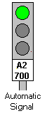The most <a name='automatic'/> fundamental
kind of signal is an <b>automatic signal.</b> They look like the illustration at
right. Note that it has one head
with two or three lenses, at least one of which is not red. An automatic signal is not controlled by
an interlocking, for, by definition, its state does not affect the
interlocking. Therefore, an
automatic signal is controlled only by track occupancy (i.e., the presence,
absence, and movement of trains in its <span class="def" dref="#DEF_clen">control length</span>),
including timers dependent on track occupancy, as with <a href="#timesig">time signals.</a> Automatic signals are the only kind present in the vast majority of the
subway system, that is, between <span class="def" dref="#DEF_xlkg">interlockings.</span> When represented
on an interlocking panel, automatic signals do not have <span class="def" dref="#DEF_lever">lever</span>
numbers (or, in real life, <span class="def" dref="#DEF_GK">GK lights,</span> but in <b>NXSYS</b> they
do). Automatic signals and approach
signals implement <a href="#ak">automatic key-by (AK).</a></p>

<p>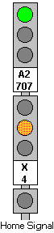The second most <a name='home'/> fundamental kind of signal is a <b>home signal.</b> A home signal is always controlled by a <span class="def" dref="#DEF_lever">lever</span>
of an interlocking, in addition to track occupancy and possible timers. Here is an illustration of one. The signal's <span class="def" dref="#DEF_lever">lever</span>
number appears on its lower head. A home signal always has more than one multi-lens head. The upper head has the same meaning as with an automatic signal (proceed, proceed prepared to stop at next signal, stop). The lower head tells whether a normal or diverging route is set, yellow being the latter. Red always appears together in both heads. A home signal is used whenever a switch is protected, facing or trailing, including all cases of a choice of routes, or potential conflicting movements are involved. When a home signal indicates double-red, the indication is &ldquo;stop and stay:&rdquo; there is never any <a href="#ak">Automatic Key-by</a> to clear the <a href="#stops">train stop</a> of a home signal. There is, however, <a href="#callon">call-on,</a> which is indicated by the single yellow light at the bottom of the signal, which allows the train stop to be cleared by cooperation of the train operator and the tower operator in highly restricted circumstances (see <a href="#callon">the call-on description</a> for details).</p>

<p>The third <a name='apsig'/> most common kind of
signal is an <b>approach signal.</b> An approach signal looks just like an automatic signal (the illustration
above is actually the former!); there is no easy way for a train operator to tell the
difference (although in New York, approach signals have their interlocking
number plates on their sides), but that is not a problem, as the meaning of
either to him or her, and the behavior of their <a href="#stops">stops,</a>
is the same. Approach signals are
controlled by interlocking <span class="def" dref="#DEF_lever">levers</span> (actually pushbuttons on an
NX panel), and can be forced red by being <span class="def" dref="#DEF_cancel">cancelled</span> by the
tower operator at any time. Approach
signals never actually protect switches or govern conflicting routes, but their
<span class="def" dref="#DEF_clen">control lengths</span> frequently encompass <span class="def" dref="#DEF_trps">trailing-point switches</span>
or interlocking exits.  Calling an approach signal can move a
switch; cancelling an approach signal may be necessary before certain routes
can be set up. Although to a
train operator an approach signal appears the same as an automatic signal, to the
tower operator it is represented in the same way as a <a href="#home">home
signal,</a> that is as a <span class="def" dref="#DEF_GK">GK light</span> with a <span class="def" dref="#DEF_lever">lever</span>
number. Approach signals play an
important role in <a href="#aplock">approach locking.</a> Approach signals are sometimes combined
with <a href="#stationtime">Station Time (ST) timing</a>
for a particularly complicated behavior described <a href="#intst">elsewhere.</a></p>

<p>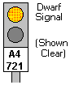The two <a name='dwarf'/>remaining
kinds of signals are fairly rare. <b>Dwarf signals</b> are interlocked signals
with only red and yellow lights, low on the ground, intended to govern
low-speed, rare train movements, usually in the reverse direction or in or
toward yards.
Dwarf signals are obsolete; they are not used in new interlockings.  They are inferior because they are hard
to see, do not indicate which of a possible selection of routes has been
cleared, and perhaps worst of all, lack <a href="#stops">train
stops.</a> Yet, they are
traditional, and the author owns one (K3-343 from East New York Tower 3
Interlocking). A dwarf signal's <span class="def" dref="#DEF_clen">control
length</span> does not check for track occupancy, and it may lack a <a href="#stops">train stop.</a> As with a <a href="#callon">call-on,</a>
a train operator accepting a &ldquo;proceed&rdquo; indication from a dwarf signal
must be prepared to stop within vision.</p>

<p>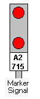<b>Marker signals,</b>
<a name='marker'/> such as 30 and 38 at Progman St., are dummies that are always red, and are
there to forbid movement unconditionally and serve as placeholders in the
interlocking. They are extremely
uninteresting because they never change state. Marker signals may or may not have <a href="#stops">train stops.</a></p>

<br clear=all style='page-break-before:always'>


<a name='nxo'/><h2>3.3 Basic NX Interlocking Operation</h2>

<p>The basic idea of an NX (&ldquo;E<b>N</b>trance-E<b>X</b>it&rdquo;)
<span class="def" dref="#DEF_xlkg">interlocking</span> is to route trains over the interlocking by
specifying the starting point <span>(entrance) </span>and
ending point <span>(exit) </span>of each such path. On a real NX interlocking panel, buttons
are pressed at the points representing the entrance and the exit; in <b>NXSYS,</b> the points are moused,
signal <span class="def" dref="#DEF_GK">GK lights</span> for the entrances, and the <span class="def" dref="#DEF_exlt">exit lights</span>
that subsequently light up for the exits.</p>

<p> When you <span class="def" dref="#DEF_init">initiate</span>
a route at a <a href="#home">home
signal</a> (or <a href="#dwarf">dwarf</a>) by clicking
left on its <span class="def" dref="#DEF_GK">GK light,</span> such as Signal 22 shown here, the
interlocking will respond by lighting the GK light red. It will send out seeking-tendrils over
all routes in that direction emanating from that point, and offer a choice of
exits by displaying <span class="def" dref="#DEF_exlt">exit lights</span> at each possible exit. Every possible consideration of switches
that are locked and conflicting routes, i.e., the current situation, as described by other sections in this
chapter, will be factored into the choice of which exits are offered. If no exits are possible, the
interlocking will (usually) not let you initiate at all (the <span class="def" dref="#DEF_GK">GK light</span>
will not turn red, and no exit lights will light up).</p>

<p>At that point you can click on one of
the <span class="def" dref="#DEF_exlt">exit lights:</span> this is called route <b>completion,</b> and
causes electrical tendrils to spread out from the exit to seek the tendrils of
the <span class="def" dref="#DEF_init">initiating</span> signal: when they meet, they will enwrap each other, cancel all other <span class="def" dref="#DEF_exlt">exit
lights,</span> and turn on the entrance light (which
looks just like an exit light) at the point of initiation, so you know that
this has happened. At this point, the interlocking will cause all switches to
move and all encompassed <a href="#stops">train stops</a>
to be lowered such that that route is actually set up and the initiating signal
to be called and probably cleared. This is called &ldquo;route selection,&rdquo;
and is the basic operation of an NX/UR interlocking.</p>

<p><a name="urx"/>Instead of clicking on the <span class="def" dref="#DEF_exlt">exit
light</span> at a signal, you may also click on the <span class="def" dref="#DEF_GK">GK Light</span>
for the signal itself; this feature was pioneered by the IRT, and Union Switch
&amp; Signal, hence it is called here the <b>UR exit feature.</b>  The interlocking will determine
that the signal is being selected as an exit, even if soon it will be an
entrance, too. (Normally, the
signal in the <i>direction opposite to traffic</i> is the one to select for an
exit, unless there is none such, such as at Signals 10 and 24 at Progman St.,
when it is said that &ldquo;the entrance and exit are in the same
direction&rdquo;, and the signal is both at once. Try clicking slowly on 8, 10, 10, 14,
then cancel, then 8, 14 to see this.)</p>

<p>At that point, when the route is all
set up, white lines of light will indicate the <span class="def" dref="#DEF_tracksection">track sections</span>
which form the route. You may play
with trains, or cancel the route at any time by clicking on the <span class="def" dref="#DEF_GK">GK light</span>
of the <span class="def" dref="#DEF_init">initiating</span> signal. (You can cancel the initiation at any time in this way, even before
completion.)</p>

<p>The NX interlocking takes it upon itself to operate the imaginary <span class="def" dref="#DEF_lever">levers</span> of the switches and signals in the route in the proper order. However, you might find, when initiating a route, that not all the exits you expected are offered: you will then have to figure out why (after having read the rest of this chapter), and cancel conflicting routes and/or move trains out, as would a real tower operator.</p>

<p>When you <span class="def" dref="#DEF_init">initiate</span> a
route, you may see the <span class="def" dref="#DEF_GK">GK lights</span> of other signals, or the some
switches on the panel, begin flashing in unison. This indicates that they are preventing
some routes and exits from being offered that otherwise would be. See <a href="#lockconflicts">Locking
Conflict panel indications</a> for more information on this.</p>

<p>Both <a href="#scenarios">supplied
interlockings</a> implement a features called <span class="def" dref="#DEF_etoe">end-to-end</span>
route selection (or, more recently, &ldquo;through routing&rdquo;), whereby NX selection over successive
sub-networks, such as the diamond crossovers, relay initiations and completions
from one to the next. Thus (at <a href="#progman">Progman St.</a>) when one <span class="def" dref="#DEF_init">initiates</span>
a route at 4, one will see not only 30 and 10 as exits, but 14, 20, and 24 as
well. If one selects one of the latter as exits, not only are other offered
exits cancelled, but ultimately signal 10 is <span class="def" dref="#DEF_called">called</span> in the
middle of the route as though it itself had been the initiator. If, however, you wish to cancel an
end-to-end route once it has been set up, you must do so signal-by-signal (or
use the heavy hammer of the menu item </span><b>Interlocking|Cancel
all signals.</b><span>)</p>

<p>For a <i>tour-de-force</i> of
NXSYS/Progman St. power, initiate at 20 and complete at 34 in the upper left
corner. Now cancel 16, 18, and 20 ,
deposit a train in A1-720 (the track section between 16 and 18 on track A1),
and try the experiment again. NX/UR interlocking through-routing must choose
the best of all possible paths when several are available between a given
entrance and exit.<br clear=all style='page-break-before:always'>
</p>

<a name='sigrout'/><h2>3.4 Signal Calling (Requesting)</h2>

<p>Signals that can potentially affect each other and be affected by switches must be controlled by the interlocking such that their interactions be safe. Each signal is conceptually associated with a <span class="def" dref="#DEF_lever">lever,</span>
which in earlier interlockings was an actual lever, controlled by the
tower operator. In an &ldquo;all relay&rdquo; interlocking such as <b>NXSYS,</b> the lever is imaginary, and its
effect is simulated by logic. If
the lever is in its normal position (&ldquo;cancelled&rdquo;), the associated
signal is guaranteed to be red. Only when the lever is moved to its other, <span class="def" dref="#DEF_called">called,</span>
position, is the signal able to clear in response to train movement.</p>

<p>Therefore, the levers controlling
signals are interlocked with each other &mdash; they could not be moved out of their
normal (signal may not clear) position unless other levers controlling other,
conflicting signals are in their normal position. Of course, exactly which signals
conflict is highly dependent upon switch position, which is in turn constrained
by signals and so on.</p>

<p>In an NX interlocking implementation
such as <b>NXSYS,</b> signal levers are not operated directly, but are
controlled automatically by the route selection mechanism (see <a href="#nxo">Basic NX Operation</a>). It is possible to &ldquo;cancel&rdquo; any
signal, though, that is, move its <span class="def" dref="#DEF_lever">lever</span> to the
&ldquo;normal&rdquo; position simply by clicking left on the <span class="def" dref="#DEF_GK">GK light</span>
of the signal you want to cancel.</p>

<p><a class='def' dref='#DEF_lever'>Levers</a> <span> for <a href="#apsig">approach signals</a> are more or less
controlled directly by clicking on the <span class="def" dref="#DEF_GK">GK light:</span> clicking on one
which is not called attempts to call it (succeeding if and only if clearing the
signal would be safe), and clearing it when permissible; clicking on a called
signal, clear or not, cancels it.</span></p>

<p>Note that the <span class="def" dref="#DEF_GK">GK light</span>
for a <a href="#home">home signal</a> will come on (red)
when a route is <span class="def" dref="#DEF_init">initiated</span> there; you can tell that it is not really
called yet, i.e., the route not yet set up, by the possible presence of <span class="def" dref="#DEF_exlt">exit
lights</span> and the absence of white lines of light, indicating routes
successfully set up.</p>

<p>A called signal will not clear until certain conditions are met. These
conditions are the lack of trains (except for <a href="#callon">call-on</a>)
along the signal's <span class="def" dref="#DEF_clen">control length</span> and perhaps timers and certain complexities involving stops.  Other conflicts would have prohibited it from being called in the first place.</p>

<br clear=all style='page-break-before:always'>

<a name='fleet'/><h2>3.5 Auto-cancel and Signal Fleeting</h2>

<p>At active interlockings, it is quite
common to set up a different route for every train, that is, very few
successive trains take the same route. In these cases, it is convenient for a train could &ldquo;cancel its own route,&rdquo; that is, clean up behind itself to facilitate subsequent setup for the next train, reducing the possibility that the following train will accept
the same route by virtue of inaction. In other cases, especially at inactive
interlockings, it is more convenient to establish routes and leave them set
indefinitely for many successive trains.</p>

<p>NX/UR interlockings provide both modes of operation. The default is <b>auto-cancel:</b>
when a train passes a <a href="#home">home</a> or <a href="#apsig">approach</a> signal, the signal will be cancelled and the <span class="def" dref="#DEF_GK">GK light</span> on the panel will go dark. Although the first <span class="def" dref="#DEF_tracksection">track section</span>
beyond the signal will show red (<span class="def" dref="#DEF_occ">occupied</span>), subsequent sections
will still show white and remain part of the route, lit up in white, held by <a href="#routl">route locking</a> until the train passes
through.</p>

<p>To cause a signal to remain <span class="def" dref="#DEF_called">called,</span>
it must be <b>fleeted.</b> (The term comes from the letting 'the fleet' pass
through.) On a real NX panel, this
is done by turning the signal button (which is normally pushed) in the
direction of traffic. This turning operation also pushes it. When the signal is fleeted, the call for
the signal, will not be cancelled by the track occupancy resulting from train
motion. <a href="#dwarf">Dwarf signals</a> may not be
fleeted, <a href="#apsig">approach</a> and <a href="#home">home signals</a> may.</p>

<p><b>NXSYS</b> simulates the
fleeting control with Shift-Mouse-left, that is, clicking left on a <span class="def" dref="#DEF_GK">GK light</span>
while holding the <b>Shift</b> key down. The rules are a bit tricky, but fairly natural once used and
mastered. Clicking shift-left on a
signal (home or approach GK light) which is not <span class="def" dref="#DEF_init">initiated</span> (shows
blank) initiates and fleets it. The
fleeted status in <b>NXSYS</b> is shown by a little green arrow on the stem

    
of the signal. Clicking shift-left on a fleeted signal un-fleets it, but does not
cancel it. Clicking left <i>without</i>
shift on a fleeted signal, however, both un-fleets and cancels it
simultaneously.</p>

<p>Multiple <a href="#home">home</a> or <a href="#apsig">approach signals</a>
in a route created by <span class="def" dref="#DEF_etoe">end-to-end</span> selection (see <a href="#nxo">Basic NX Operation</a>) must be fleeted individually.</p>

<br clear=all style='page-break-before:always'>

<a name='slock'/><h2>3.6 Switch Locking</h2>

<p>Moving the points of a switch while a train is on that switch, or about to hit it, is, obviously, extremely unsafe, and guaranteed to cause an accident.. Switch movement must be inhibited when the <span class="def" dref="#DEF_tracksection">track sections</span>
of a switch are <span class="def" dref="#DEF_occ">occupied,</span> or a route is set up (or
&ldquo;lined&rdquo;) permitting train movement over it.</p>

<p>Interlockings provide a facility called &ldquo;switch locking&rdquo; which permits the movement of the switch only when the proper set of conditions prevails. When the switch may not be moved, it is said to be &ldquo;locked;&rdquo; it may only be moved when &ldquo;unlocked.&rdquo;
In <b>NXSYS,</b> if you click right on a switch (see <a href="#mouse">Using the Mouse to Control the Interlocking</a>), and it does not respond by flashing red and changing state, that is because (assuming you have clicked accurately) it is locked.</p>

<p>If you see a line of red lights (see <a href="#litup">What the various lit-up things mean</a>) on
the switch or any part of its track sections, that is a train, and that is why
it is locked. This type of locking is called &ldquo;detector locking.&rdquo; The
switch will be unlocked only when that train clears the switch track section
limits, if all else is OK. If you see a line of white lights, that means a
route is set up by some signal further back along the white lights, or already
in progress (see <a href="#routl">Route Locking</a>), in
which case the switch will not be unlocked until the train is gone.</p>

<p>If the switch still will not move, it
may be because it is within the far extent <span class="def" dref="#DEF_ovlp">overlap</span> the <span class="def" dref="#DEF_clen">control
length</span> of some signal further back, and the proposed movement would
set a <span class="def" dref="#DEF_trps">trailing-point switch</span> against that signal. In this case, you must cancel that
signal, which locks the switch, before attempting to move it. The interlocking will usually flash the <span class="def" dref="#DEF_GK">GK
light</span> of that signal and the points of the switch in the position
they are locked when you try to <span class="def" dref="#DEF_init">initiate:</span> see <a href="#lockconflicts">Locking Conflict panel indications</a>
for more on this.</p>

<p>Switches are also locked by the <a href="#stops">train stops</a> of all signals around
them. No matter what the excuse, all surrounding stops must be up, that is, in &ldquo;tripping&rdquo; position,
before a switch may be moved. For
this reason, the interlocking will often a hold a signal at the exit of a
sub-section red, so that its stop will not lock switches in approach to
it. To see this in action at <a href="#progman">Progman St.</a>, try clearing a route from
10 to 14 both with a route from 8 to 10 and without. 10 will not clear, nor its stop, if
there is neither a route nor a train (perhaps reversing) in approach to it.</p>

<p>In <b>NXSYS,</b> interlockings, as well as many real ones, you can tell by inspection if a switch is locked by looking at its <a href="#lockind">switch lock indicator light.</a> Associated with a switch's <a href="#auxkeys">auxiliary key,</a> the switch lock
indicator lights the key in dark red when the switch is locked. When switches are free to move (not locked), they can be moved demonstrably via the <a href="#auxkeys">auxiliary
switch keys.</a></p>

<p>Again, in an NX interlocking, one does not usually move switches explicitly, but via route selection (see <a href="#nxo">Basic NX Operation</a>). Nevertheless, the route selection mechanism might refuse to offer certain exits because the switches that would have to be moved to line up a route route to that exit are locked, and may not be moved to the required position.</p>

<br clear=all style='page-break-before:always'>


<a name='aplock'/><h2>3.7 Approach and Time Locking</h2>

<p>Approach locking and time locking are
consequences of the fact that trains are big and heavy and, when moving fast,
take a long distance and time to come to a halt, no matter how hard the brakes
are applied.</p>

<p>Consider the following schematic
scenario:<br/><br/>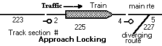<br/><br/>Imagine that switch 5 is set
to a diverging route. By all that
should now be understood, this means that signals 2 and 4 must be red (of
course, 2 must be red because of the train), and cannot even be <span class="def" dref="#DEF_called">called.</span></p>

<p>Now suppose that switch 5 was set to
the normal route, and both signals were clear. Suppose a train on 225 as shown were
moving rapidly, and as the train approached signal 4 and the switch, the
tower operator cancelled signal 4 in the face of the moving train, making it (or both?)
red, and then caused the switch (5) to move, while the train was still
barrelling towards 4 and 5. Nothing
so far would prevent this &mdash; the train would indeed be tripped by the stop and
signal at 4, but would take a long distance to slow down, and would doubtless
run the <span class="def" dref="#DEF_trps">trailing point switch</span> and damage it and/or be derailed.</p>

<p>Cancelling a signal <i>at any time</i>
cannot be made impermissible or prevented &mdash; it is a safety feature that a
train may be stopped at any time. But telling the interlocking that &ldquo;all is OK, 4 is safe at
stop&rdquo; (and hence, switch 5 may be thrown) when there is a train coming at
it is not satisfactory.</p>

<p>The solution to this problem is <b>approach
locking.</b> When a train is
approaching a <a href="#home">home signal,</a> and it is
cancelled by the tower, the route will drop and the signal will go red, but the
rest of the interlocking will not &ldquo;believe&rdquo; the cancellation: the
route will lock out other routes and hold switches locked via <a href="#routl">route locking.</a></p>

<p>Of course, it might be so that the
train has been sitting there for a while, and is not moving rapidly. As just explained, approach locking
would make it impossible for the tower operator to change his or her mind with a
train facing a signal. The solution
to this is <b>time locking.</b> Approach locking will release after a sufficiently long period of time,
9 or 10 seconds in <b>NXSYS.</b> If
this is too long for you, the menu item <b>Interlocking|Release all approach locking</b> will release all
approach timers immediately. Approach locking will also &ldquo;quick release&rdquo; as soon as a train
gets into the route (&ldquo;accepts&rdquo; it), so that <a href="#routl">route locking</a> can take over. Time locking in non-rapid-transit
railroads is sometimes measured in <i>minutes.</i></p>

<p>The approach locking of <a href="#apsig">approach signals</a> is one of the chief
reasons for their existence. Consider again this illustration:<br/><br/>Imagine
that the train is not there, that signal 2 has been clear for a long time, and
4 has been in the cancelled state for a long time, and the switch is set for
the main route (but no route is set up over it). The interlocking has &ldquo;believed&rdquo;
that 4 has been cancelled (approach locking has been satisfied) for a long
time. Again, 2 was <span class="def" dref="#DEF_called">called</span> a long time ago, and is clear.</p>

<p>Although in this state, signal 2
would have to be yellow because 4 is red, imagine that a train is coming along
at high speed and fails to observe the yellow signal, and continues through 2
at high speed. As soon as it passes
2, the tower operator cancels 2 (if <span class="def" dref="#DEF_fleet">fleeted,</span> or lets it auto-cancel)
and moves the switch. Nothing now
prevents the train from tripping at 4 and derailing at high speed.</p>

<p>The solution to this is approach
locking for the approach signal 2. The interlocking will not &ldquo;believe&rdquo; that 2 has really been
cancelled if there is a train <i>past</i> it, i.e., in section 225, at the time
it is cancelled, until time-locking for 2 expires. Time locking timing starts when a signal
is cancelled.</p>

<p>Thus, it would be impossible for the
switch to be moved or a conflicting route to be set up unless 2 was either
cancelled for &ldquo;a long time&rdquo; or there was no train in the
&ldquo;approach section.&rdquo; The
problem stops there&mdash; the train cannot pass 2 without coming to a full stop,
and thus, its speed at 4 would be limited.å</p>

<p>(In fact, there is a small
&ldquo;window of opportunity&rdquo; between the time 2 is cancelled and 2's stop
gets to come up that could allow 2's approach locking to release without
tripping the train at 2 if misfortune lines up &ldquo;just right&rdquo;: for this
reason, section 223 must also be part of 2's approach section. For consistency, the standard design would add 223 to 4's approach limits, too.)</p>

<p>To see approach locking in action at <a href="#progman">Progman St.,</a> drop a train in section
A2-700 (between 2 and 4). Set up a
route from 4 to 10. Cancel the
route by clicking on 4. The white
lights will not go out for 9 seconds (unless the train is removed). You can observe that during this
interval, not only will switches 7 and 9 be locked, but 17 as well.</p>

<p>A signal's approach locking is
released by one of three occurrences: (1) The signal is cancelled when there is
no train within its approach limits (2) The time-locking time has run to
completion since the signal was cancelled, or (3) so-called <b>quick release,</b>
often omitted for <a href="#dwarf">dwarf</a> and other
rarely-called signals, which occurs when a train occupies the <span class="def" dref="#DEF_tracksection">track section</span>
that would lock the switch that the signal is protecting (here 227): when the
train enters that section, the signal's approach locking is no longer needed.  Furthermore, approach locking cannot be released (or the timer even start) unless the signal is &ldquo;verified to be red&rdquo; (in older time, semaphores verified in position) and the signal's <a href="#stops">stop</a> is verified to be in its tripping position.</p>

<p>The above grows in complexity when a
home signal such as 8 at <a href="#progman">Progman St.</a>
locks a switch that it does not immediately protect, i.e., a switch in the <span class="def" dref="#DEF_ovlp">overlap</span>
of its <span class="def" dref="#DEF_clen">control length,</span> (in this case, 17 at Progman St.). In
this case, the home signal (8) is acting as an approach signal to signal 10 and
switch 17 in addition to being a home signal protecting its immediate switch
network. Thus, the quick release of
8 cannot occur until the train has touched the detector track sections of that
distant switch (17, i.e., track 4714) and the local switch (7/9, 4707)
simultaneously, and the sections between the signal and the distant switch it
locks must be part of its approach section.</p>

<p>Approach locking timeouts in both New
York and Toronto are normally 30 seconds; <b>NXSYS</b> interlockings have
shorter timeouts to forestall boredom. In <b>NXSYS</b>, any signal's approach locking can be reset individually
from its <a href="#controlright">context menu</a> before
it has rightly timed out, and <b>all</b> approach locking can be prematurely
timed out by the <b>Interlocking</b> menu or typing <b>Control-A</b>; both of
these operations have no analogue in real interlockings, are patently
(railroadwise) unsafe, and are there for debugging and simulation convenience
only.</p>

<p>&ldquo;If this sounds complicated, that's because it is.&rdquo;</p>

<br clear=all style='page-break-before:always'>


<a name='routl'/><h2>3.8 Route Locking</h2>

<p>Route locking is an interlocking
feature which allows all the effects of a routing to continue to hold once a
train has entered (&ldquo;accepted&rdquo;) the route, even if the signals are, as
is usual, cancelled shortly thereafter. It is a technique for semipermanently associating a train with a given
route in a given direction and an intent to follow that route: it ensures that
a train which has accepted a route is &ldquo;just as bad&rdquo; as the cleared
signal it accepted, as far as the locking of switches (see <a href="#slock">Switch Locking</a>) in the route and potential conflicting
movements (see <a href="#clength">Signal Control Length</a>)are concerned.</p>

<p>Route locking can be demonstrated at <a href="#progman">Progman St. Interlocking</a> (in its
default state) by setting up a route from 24 all the way to 4 on the Northbound
Local track (click left on signal 24, then click left on the <span class="def" dref="#DEF_exlt">exit light</span>
which will appear at signal 4). Once switches move, the route should be cleared and lit in white. Now cancel 24 by another click on its <span class="def" dref="#DEF_GK">GK
light,</span> and the route vanishes. Now set up that route again, but this time move a train in off the right
edge of the map into track A3, and then past signal 24: the signal will <span class="def" dref="#DEF_cancel">auto-cancel,</span>
but the route will still being held and lit up in white. As the train moves southward, the route
will still be held (preventing routing of 6 or 2, for instance). But as the back of the train clears <span class="def" dref="#DEF_tracksection">track
sections,</span> you will see them go dark, as the route locking
drops out.</p>

<p>Route locking is also frequently used
at interlockings of more than one &ldquo;network&rdquo;, or
&ldquo;sub-interlocking&rdquo;. In
the layout below, there are two networks, one consisting of signals 2, 4, 6,
and 8 and switches 5 and 7, and the other the remaining switches and signals
(10, 12, 14, 16, and 18, switches 13 and 15).</p>

<p>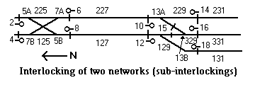</p>

<p>In the above diagram, route locking
would usually be provided for track sections 127 and 227, to ensure that a
train exiting one network toward the other prevents the establishment of an
exit facing its motion as long as that train occupies the trackage between
them. For example, if a southbound
route were established from 4 to 6, and a train accepted the route, southbound
route locking of section 227 would prevent an exit at 10 (i.e., northbound,
from an entrance at 14 or 16) from being selected as long as that train
occupied any track on the route between 4 and 10.  In this case, route locking serves as an automatic replacement (i.e., requiring no tower operator intervention) for <a href="#traffic">traffic control</a> between the sub-interlockings.</p>

<p>Route locking is one of the criteria used in <a href="#slock">Switch Locking.</a></p>

<p>The <b>Release All Approach Locking</b> <a href="#menu">menu</a> command also releases all route locking.</p>

<br clear=all style='page-break-before:always'>


<a name='timesig'/><h2>3.9 Time Signals</h2>

<p>Sometimes, in addition to the
performing the functions discussed under <a href="#clength">Control
Lengths,</a> signals are equipped with timers to restrict the speed of
trains. These &;dquo;time
controls&rdquo; can be used with any type of signal (except <a href="#dwarf">dwarf</a> or <a href="#marker">marker</a>),
and add a new facet of functionality. Time control occurs in two forms, <b>Grade Time (GT),</b> which restricts the speed of trains
unconditionally, and <b>Station Time (ST),</b> which allows a signal to shorten
its <span class="def" dref="#DEF_clen">control length</span> if a train approaches it at restricted speed. GT is easier to understand, and will be explained first. ST will be
explained <a href="#stationtime">subsequently.</a>.</p>

<a name='gt'/><h3>Grade Time (GT) Signals</h3>

<p>GT (Grade Time) signals are so called
because they are used on grades (slopes) and around curves. They operate by not clearing until the a
train has spent a sufficient number of seconds in the <span class="def" dref="#DEF_tracksection">track sections</span>
in front of the signal to be evidence of low enough speed.</p>

<p>In <a href="#progman">Progman St. Interlocking</a>, the signals A2-725, A4-720 and A4-727 on the northbound tracks are GT signals; that is why they come up red. They will not clear until a train has been in track sections A2-714, A2-720 long enough, or more complicated
conditions on the Northbound Express track. Deposit a train in A2-720 (between 720
and 725) and wait five seconds to see A2-725 clear. See the description of <a href="#islington">Islington</a> for a list of GT signals
there.</p>

<p>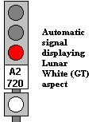<a name="lunar"/>The simplest kind of
GT signal is the &ldquo;one shot&rdquo; GT, which, in New York, has a single
bright white (&ldquo;lunar white&rdquo;) lens, which, when it is displayed with
red (and it is displayed no other time) indicates that although it is red, the only
reason is that the GT timer has not &ldquo;timed out&rdquo;, or run its full
course, and if the signal is approached sufficiently slowly, it will
clear. This is called a
&ldquo;one-shot&rddquo; GT signal. The
lunar white indication is used slightly differently in Toronto: there, it is on
the signal <i>before</i> a GT signal, and indicates that the latter has not
cleared because of time alone.</p>

<p>Sometimes more than one <span class="def" dref="#DEF_tracksection">track
section</span> in front of a GT signal can be used to time and
clear it. In that case, the signal
in between the train and the GT signal will go from yellow to green at the same
time the train times out the GT signal. To see this at Progman St., bring up <a href="#fullsig">Full
Signal Displays</a> of all the signals on the A4 track, route signals 8
and 10, and move a train very slowly northward, section by section. The idea here is that the train operator
gets two chances to achieve the right speed, and need not fear being <a href="#stops">tripped</a> if he or she should fail the
first time. This is called a &ldquo;2-shot (or 2-try) GT signal&rdquo;: it has
two independent timing sections, the latter of which is run if and only if the
first is not satisfied (unless it is shared with the next signal in a series of
2-shot GT signals).</p>

<p>The GT timeouts on <a href="#progman">Progman St. Interlocking</a> are defined
by the &ldquo;US relays&rdquo; in <b>progman.trk,</b> and are 4, 5, or 6 seconds
as appropriate. (Normally, the time
constant is calculated as would be expected, i.e., the quotient of the track
circuit length and the desired speed, but as <b>NXSYS</b> train kinematics
still leave room for improvement, these fairly arbitrary numbers have been
chosen).</p>

<p>When a 2-shot GT signal
is red for <b>only</b> the reason that its timer has not timed out yet, that
is, traffic or interlocking reasons are not holding it red, and the signal
before it is clear, that latter, nearer signal will not only indicate Yellow
(prepare to stop), but have a lit-up &ldquo;S&rdquo; under the first head. This can best be seen on signal 10
(A4-714) at Progman St. Set up a
route from 8 to 14, and click right on signal 10 to watch it. The &ldquo;S&rdquo; will be present on
10. Putting a train in section 727
will negate this condition, and cause the &ldquo;S&rdquo;; light to go off. The &ldquo;S&rdquo; light tells the
train operator that by his or her going slowly enough the next signal (i.e., the one
after the one with the &ldquo;S&rdquo; light) will clear.</p>

<a name='stationtime'/><h3>Station Time (ST) Signals</h3>

<p>Although Station Time (ST) signals
are extremely common in New York, there are none at the fictitious <a href="#progman">Progman St.</a> There are three fairly complex ones
(X48, X20, X18) at <a href="#islington">Islington Interlocking</a>, and at <a href="#v2adv">Atlantic and Myrtle Aves.</a> in Version 2. Station Time facilitates trains
&ldquo;closing in&rdquo; on stations to keep them moving, albeit slower, when
trains are stopped ahead in a station. Here is the canonical situation: </p>

<p>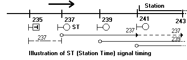</p>

<p>The <span class="def" dref="#DEF_clen">control length</span> of
signal 237 is shown as extending from the signal itself downtrack to IJ
243. That is, if any portion of a
train appears between <span class="def" dref="#DEF_IJ">insulated joints</span> 237 and 243, 237 will
display a red, &ldquo;stop&rdquo; indication to oncoming traffic. Referring to the earlier discussion of <a href="#clength">control length,</a> it can be seen that
these 600' control lengths imply a safe braking distance between 200 and 400 feet.</p>

<p>If there is a train, or portion of a
train <span class="def" dref="#DEF_occ">occupying</span> the &ldquo;dotted portion of the control
length&rdquo;, that is, between 241 and 243, but no portion of any train in the
&ldquo;solid portion of the control length&rdquo; between 237 and 241 (that is,
the end of a train is in the station), a new condition obtains: a second train approaching 237
sufficiently slowly to &ldquo;time out&rdquo; the section between 235 and 237
will cause signal 237 to &ldquo;cut back&rdquo; its control length to the solid
portion, effectively ignoring the train in the dotted portion. Of course, this
is not unsafe, because signal 239 will still enforce a separation (with the
normal policy of <a href="#stops">stops</a> for <a href="#automatic">automatic</a> and <a href="#apsig">approach</a> signals, 241 will not). If the train is going slow enough to
cause 237 to cut back its control length, it would be able to brake in the 200'
between 239 and 241. This reduces the minimum separation between trains in approach to stations.</p>

<p>An ST signal allows trains to &ldquo;close in&rdquo; on each other by acting like a <a href="#gt">GT signal</a> if only the dotted portion of its control length is <span class="def" dref="#DEF_occ">occupied.</span> Some signals are GT and ST at the same
time; the ST timing must obviously be slower than the GT timing if this is to
be meaningful. A yellow sign with a
&ldquo;T&rdquo; on it (and often the ST speed limit) indicates the start of a
timing section for ST. Often, several ST signals occur in sequence to
coordinate this situation.</p>

<p>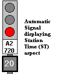The signal at right
displays the standard New York aspect for an automatic ST signal in the
&ldquo;ST&rdquo; state, that is, a train occupies only the dotted portion of its
control length. The &ldquo;20&rdquo;
indicates that the signal must be approached at 20 miles per hour to time out
its ST: it is only lit when the the signal is red, but actually <i>will</i>
clear if approached sufficiently slowly. In older New York signalling, and at <a href="#islington">Islington</a>,
the ST signal has no special indication for its ST state.</p>

<a name='intst'/><h3>Interlocked Station-Time Signals</h3>

<p><u></u></span></u><a href='#stationtime'>Station Time (ST)</a> explodes <span> in complexity when combined with
interlocking. When the dotted
portion of an interlocked signal's control length encompasses <span class="def" dref="#DEF_trps">trailing-point
switches</span> and possible conflicting routes, the conditional nature of
the signal's control of that region of track has implications throughout the
interlocking. Some interlocked ST
signals actually cause conflicting switches and routes to be cut out of the
control line when the latter is cut back. The policy employed with the three ST signals at <a href="#islington">Islington</a> is that of the NYCT standard in this case, as
follows. This is quite complex; please read it carefully.</span></p>

<p>When an attempt is made to route an
interlocked ST signal with this feature, a determination is made as to whether
the &ldquo;dotted portion&rdquo; contains conflicting routes or <span class="def" dref="#DEF_trps">trailing-point
switches</span> thrown against the route that cannot be moved now
(&ldquo;bad switches&rdquo;). If there are no conflicting routes or non-movable &ldquo;bad&rdquo; switches in the
dotted portion, the signal is <span class="def" dref="#DEF_called">called</span> &ldquo;wholesale&rdquo;,
and such bad switches in the dotted portion that need be moved are &mdash; it then
behaves as above over its route, and locks those switches and fully governs the
section. If there are conflicting
routes in the non-dotted portion, the signal cannot be called. But if there are conflicting routes or
non-movable bad switches in the dotted portion and only the dotted portion, the
signal routes and clears in a &ldquo;restricted form&rdquo;, whereby it does <i>not</i>
move the switches, but displays an ST aspect (in New York), and requires ST
timing to clear at all. If the &ldquo;bad switches&rdquo; subsequently move to a
non-conflicting state (but <i>not merely unlock</i>) by virtue of some other
manipulation while the signal is in this state, the signal advances
automatically to the &ldquo;wholesale called&rdquo; state, and clears.</p>

<p>In short, when an attempt is made to route an interlocked ST signal of this kind, if a conflicting situation in the dotted portion of the control length can be cleared at that time, it will be, but if not, the signal will be <span class="def" dref="#DEF_called">called</span> but not cleared, and will only clear on station time. If and when the conflicting situation in the dotted portion is resolved by other action, the signal will clear.</p>

<p>This model is implemented in full for
signals X48, X20, and X18 at <a href="#islington">Islington,</a>
and may be investigated there.<br clear=all style='page-break-before:always'></p>

<a name='stops'/><h2>3.10 (Automatic Train) Stops</h2>

<p>Unlike street traffic lights, subway
signals can force disobedient traffic to stop. Next to each signal (except some <a href="#dwarf">dwarfs</a>) at track level lies a T- or
hammer-shaped apparatus, controlled by motors on the BMT/IND and air on the
IRT, which rises (via a counterweight, for safety reasons, when not actively held
down) to an upright position more or less when the associated signal is
&ldquo;red,&rdquo; and wants trains to stop. This <b>trip,</b> or <b>train stop,</b> will engage a brake
valve on the underside of a passing train and <b>trip</b> it, i.e., cause the
train to screech to an emergency halt.</p>

<p>The &ldquo;more or less&rdquo; is due
to the fact that a signal turns red as soon as the front of the first car of
the train passes it, and care must be taken not to trip the rest of that very
train. Also, trips for signals that
are being passed backwards, such as at interlockings, must be carefully cleared
(put &ldquo;down&rdquo;, i.e., not &ldquo;tripping&rdquo;) when routes are cleared
over them, and restored when the train is passed or the route cancelled, lest
they trip the train by hitting the brake valve in the wrong direction (this is
known as <b>off-side tripping.</b>)</p>

<p>It is important to be able to see the
state of train stops in a world where you are both train operator and tower operator. On a real NX panel, stops are not
shown.  <b>NXSYS</b>
displays train stops as little triangles on the right of the track (seen in the
relevant direction of motion), as per IRT convention, but also creating a
visual association with the correct signal. By default, the triangle is shown red
when the stop is in the tripping position, and not shown at all when it is
clear. Via the menu item <b><a href="#showstops">Other|Show Stops</a></b> you can elect
to show them this way, at all times, in which case they will be yellow when clear,
or never, as on a real panel. They
are also fun to watch, especially as they come up behind the ends of trains,
proving that the interlocking is indeed working correctly. They are especially interesting in the
case of reverse-direction routes.</p>

<p>Unless you have chosen never to see
stops on the panel (as on a real NX/UR panel), the little stop triangles will
flash rapidly when the stop is in motion, flashing red when the stop is moving
to tripping position, and flashing yellow when clearing. As in real life, it takes about a second
to move the stop. A signal will not
clear until its stop is fully cleared (although its <span class="def" dref="#DEF_GK">GK light</span> will
indicate &ldquo;clear&rdquo; before the stop begins to clear). If you have a <a href="#fullsig">full signal display</a> up, an animated graphic of the stop
moving will be visible.</p>

<p>All signals except some <a href="#dwarf">dwarf signals</a> and some <a href="#marker">marker signals</a> have stops.</p>

<p><a name='ak'/><a href="#automatic">Automatic</a>
and <a href="#apsig">approach signals</a> implement a
feature called <b>automatic key-by,</b> (&ldquo;AK&rdquo;) whose use, has in
recent years been forbidden in New York, unless explicit permission is given by
radio, due to accidents resulting from abuse. But it is implemented in the wiring, so <b>NXSYS</b>
signals implement it. This feature
allows you to pass a red automatic or approach signal if you creep up to it
extremely slowly: the relative
placements of the train wheel, trip valve, <span class="def" dref="#DEF_IJ">IJ</span> and stop are
sufficiently carefully worked out that if a train crawls past the IJ of such a
signal, the stop will drive (go down). To do this on <b>NXSYS,</b> you must be in <b>Free Will</b> mode on such
a train (track sections <span class="def" dref="#DEF_occ">occupied</span> or vacated by the &ldquo;mouse
from Heaven&rdquo; are not trains, and thus not subject to train stops!), and
perform this maneuver at a speed of less than 5 &ldquo;sim units&rdquo; per
second, which requires, intentionally, extreme care. As in the real world, you may not, and
will not be allowed to, &ldquo;key by&rdquo; a <a href="#home">home
signal.</a></p>

<p>Because the standard implementation
of AK optimizes the use of the same track relay contact to support
reverse-direction motion, you may observe that the stops for automatic signals
do not come up immediately behind a train, but at a distance of one <span class="def" dref="#DEF_tracksection">track
section</span> behind the train. For this reason, <span class="def" dref="#DEF_ovlp">overlap</span>
of <span class="def" dref="#DEF_clen">control length</span> is critical if stops for automatic signals are
to have any efficacy. Yet another
advantage of this technique is the saving in lengthy and expensive copper
wiring in <a href="#automatic">automatic signal</a>
territory, where checking the section in approach to the signal and stop would
require an additional wire back to the previous signal.</p>

<p>In most recent (2016) New York signalling, an explicit timer (<b>UK</b>, nomenclature, not Britain) is involved in automatic key-by; <b>NXSYS</b> scenarios don't have this.</p>

<p>There is also the <a href="#callon">call-on</a> feature, which allows a
&ldquo;manual key-by&rdquo; past home signals in certain very special
circumstances. The train operator and the tower operator can cooperate to lower the stop of a <a href="#home">home signal</a> when the appropriate circumstances obtain: Please read <a href="#callon">that section</a> for details.</p>

<p>In the real subway, stops may be &ldquo;hooked&rdquo; by being forced down by foot pressure and latched into a &ldquo;clear&rdquo; position. This is an emergency procedure that is employed when signals are malfunctioning. Although <b>NXSYS</b> currently provides no means to simulate that procedure, its interlockings do make all the checks of stop action that are often motivated by its use.</p>

<a name="stopcyclecheck"/><p>Stops are also involved in an automatic behavior called &ldquo;cycle check.&rdquo; A signal will not clear, nor clear its stop, unless it can prove that the latter has actually been in the tripping position. This verifies that the stop is working properly, has not been &ldquo;hooked,&rdquo; and has the ability to trip.</p>

<p>Signals set for normal traffic
movement also check off-side stops before clearing. Stops are also directly involved in <a href="#slock">switch locking.</a> Please see that section and <a href="#btob">back-to-back signals.</a></p>

<br clear=all style='page-break-before:always'>


<a name='callon'/><h2>3.11 (Home Signal) Call-On</h2>

<p>Call-on is a feature used in very
special circumstances which allows trains to pass red <a href="#home">home signals</a> by means of close cooperation between the tower operator and the train operator.</p>

<p>The idea of call-on is to allow trains to close in on each other past home signals, just like with <a href="#ak">automatic key-by</a> on <a href="#automatic">automatic</a> and <a href="#apsig">approach
signals,</a> except that both the tower operator and train operator must cooperate via
taking special explicit action: if the circumstances are acceptable for
call-on, the tower operator displays a call-on indication on a home signal, and the
train operator creeps up to the signal and <b>accepts</b> the call-on by pressing a
special button that causes the <a href="#stops">train stop</a>
to be lowered, and holding it until the stop drives (comes down). He or she may then pass the signal
prepared to stop within vision. The
call-on &ldquo;aspect&rdquo; (the way it looks) of a <a href="#home">home signal</a> is red over red over yellow; there is special
yellow light at the bottom of each home signal reserved for this purpose.</p>

<p>The conditions which must obtain to permit
a call-on are easy to describe, namely, all the necessary conditions for
clearing a &ldquo;high signal&rdquo; (i.e., a normal clear signal, not a
call-on), absent the necessity of there being no train in the home signal's <span class="def" dref="#DEF_clen">control
length</span>. That is, the route
must be <span class="def" dref="#DEF_init">initiated</span> and completed, all switches in the correct
position, and no conflicting routes. What is more, the <span class="def" dref="#DEF_tracksection">track section</span> in front of the
signal, the &ldquo;approach section,&rdquo; must be <span class="def" dref="#DEF_occ">occupied</span> &mdash; a
train must be at the signal. To
&ldquo;clear the call-on,&rdquo; the tower operator sets up the route as usual, but at
some time after <span class="def" dref="#DEF_init">initiating,</span> presses the <b>call-on button</b>
for that signal. In <b>NXSYS</b>
this is done by clicking <b>control-left</b> on the signal, not when
initiating, but as a separate, second gesture after initiation: one can do this
even when the signal is already <span class="def" dref="#DEF_called">called</span> and the signal is red
(but a train <i>must</i> be in its approach section). When the call-on is cleared, the <span class="def" dref="#DEF_GK">GK
Light</span> will blink yellow, and the call-on indication will be
displayed. At that time, the &ldquo;call on is being offered,&rdquo; as a <a href="#fullsig">full
signal display</a> will reveal. The signal, as always, can be cancelled at any time by clicking on it.</p>

<p>The train operator <b>accepts</b> the call-on by pressing a button actually attached to the signal &mdash; in <b>NXSYS</b> this can be done via a button in the <a href="#trains">train
system,</a> which see, or via the signal's <a href="#controlright">context
menu</a>, which also see. At that time, the <a href="#stops">train stop</a>
will drive (go down), as the <a href="#fullsig">full signal
display</a> will reveal, and the <span class="def" dref="#DEF_GK">GK Light</span> will go to steady
yellow. The call-on will be ended
when the approach section is vacated; whether the signal is cancelled then,
too, depends on whether it is <span class="def" dref="#DEF_fleet">fleeted,</span> as in the non-call-on
case.</p>

<p>In real interlockings, the call-on
can be set by the tower operator pressing the call-on button when the signal is
already <span class="def" dref="#DEF_called">called,</span> but red, or by holding the call-on button
while initiating (even if a high signal can be cleared), a train being
necessary in the approach section in ether case. Since one only has one &ldquo;hand&rdquo;
with <b>NXSYS</b>, the latter method is achieved in <b>NXSYS</b> by <span class="def" dref="#DEF_init">initiating,</span>
and <i>then</i> clicking control-left on the signal.</p>

<p>In Toronto Interlockings (such as <a href="#islington">Islington</a>),
some home signals are equipped with &ldquo;automatic call-on.&rdquo; Such signals display a call on aspect
automatically if one could be displayed after a train sits for a significant
length of time in front of the signal; the stop clears automatically, without
need for the train operator to operate the call-on button.</p>

<br clear=all style='page-break-before:always'>


<a name='auxkeys'/><h2>3.12 Auxiliary Switch (Test) Keys</h2>

<p>Auxiliary switch keys, also known as
switch test keys, are miniature levers on all-<a href="#relays">relay</a>
interlocking panels (i.e., including NX/UR) that allow direct call for switches
when such manipulation is safe. When such calls are not safe, manipulation of
the auxiliary keys is ignored.</p>

<p>Auxiliary switch keys are not
employed in normal operation, and typically find use in the following
circumstances:</p>
<ul>

<li>To test the switch controllers and motors to verify that they are functional,
i.e., during maintenance, adverse weather conditions, etc., without actually
setting up routes and perhaps misdirecting trains. Obviously, in <b>NXSYS,</b>
such testing is not an issue, although experimentation becomes a possibility.</li>
</br>

<li>To operate the switches under emergency conditions. Again, this is not an issue in
<b>NXSYS.</b></li></br>

<li>To experiment with the effect of various constraints on the route-selection
mechanism of the interlocking. This
is a possibility in <b>NXSYS.</b></li></br>

<li>To test, i.e., verify the proper function of, the interlocking. This, too, is certainly a possibility in <b>NXSYS.</b></li></br>

<li>To &ldquo;force the hand&rdquo; of the preferred/alternate <span class="def" dref="#DEF_etoe">end-to-end route</span> selection mechanism of the interlocking, i.e., to force it to choose a specific route of many possible between two points, when that route is not the one it would choose by default. This is the main reason why they are supported by <b>NXSYS.</b></li>
</ul>

<p>The auxiliary switch keys on real
interlocking panels are miniature levers about an inch high, with three
positions. Each is associated with
one switch or crossover, i.e., one conceptual switch <span class="def" dref="#DEF_lever">lever</span>. Unlike a <span class="def" dref="#DEF_lever">lever</span> on a
traditional interlocking machine, auxiliary switch keys are not mechanically
constrained; their manipulation is simply ignored when unsafe. When moved to the left, the switch is
called to move normal; when moved to the right, reverse. The key can be operated momentarily and
returned to center, submitting a call for the switch, or simply moved,
submitting and sustaining a call for the switch.</p>

<p>In <b>NXSYS,</b> the switch keys are
lighted buttons with two halves,  the top half for the
&ldquo;normal&rdquo; call and the bottom for &ldquo;reverse.&rdquo; When not active, they are grey. <b>Click left on either half</b> issues
a call for the switch to move to the corresponding position. The half-keys light up, yellow for
reverse, green for normal, as long as the mouse button is held down.</p>

<p>To submit a momentary call for a
switch, click left on the top (normal) or reverse (bottom) half of the button,
which will flash when clicked on. To submit and sustain (&ldquo;stick&rdquo;) a call for a switch, click right on the appropriate half. To release
the call, click left on it.  The <a href="#menu">command menu</a> item <b>Interlocking|Clear
all aux switch keys</b> can be used to release all calls at once.</p>

<p>The call for a switch, whether
generated by the switch keys or the normal mechanism, will not be honored if
the switch is locked. A call can be
submitted and stuck, but (in general) the call will not be honored when the
switch becomes unlocked (preconditioning); as a matter of fact, in this switch
the switch will <i>remain</i> locked until the call is removed.</p>

<p>When a switch successfully moves on
sustained call from the switch keys, the points of the switch, normal or
reverse as appropriate, light up in steady white (similar to a route) to
indicate that this call is in effect &mdash;&mdash; that lit portion will be included in
routes over the switch.</p>

<a name="lockind"/><h3>Switch Lock Indicator Lights</h3>

<p>On some interlocking machines, NX/UR
and otherwise, panel lights are provided to indicate when a switch is
locked. This feature has been added
to <b>NXSYS</b> because it is quite instructive to watch, study, and understand
the locking of the various switches of the interlockings as routes are set up,
accepted, and released, and as trains move through.</p>

<p>When a switch is locked, a red light
above its <a href="#auxkeys">auxiliary key</a> (in <b>NXSYS</b>)
will light up; that is the <b>switch lock indicator light</b>.</p>

<p>As befits the semantics of switch locking, clicks on the auxiliary key will be ignored when the switch is locked (i.e., the lock light is lit).</p>

<p>Note that calling for a switch is not
the same as locking it: while calling for a switch to move reverse may cause it
to move reverse and cause calls for it to move normal to be ignored, that does <i>not</i>
constitute locking as far as the interlocking is concerned. The switch is only locked when a route
is set up over it, or any of the other diverse conditions discussed under <a href="#slock">switch locking</a> and elsewhere hold.</p>

<p><b>Click right on a switch</b>
is an older <b>NXSYS</b> shortcut for auxiliary switch key operation.</p>

<p>It is extremely instructive to
initiate routes, especially long end-to-end ones, and, before completion,
experiment with the auxiliary switch keys to observe the effect on the choice
of exits offered.</p>

<h3>Controlling alternate end-to-end routes with switch keys<span></h3>

<p>To force an <span class="def" dref="#DEF_etoe">end-to-end route</span>
path with auxiliary switch keys, click right on the auxiliary switch keys for one or
more critical switches in the route to be set up to call them to the positions
you want. Of course, these switches
must be unlocked for this to work. Then initiate the end-to-end route. The selection circuitry, forced to respect the switches you have called,
will set up an end-to-end path through them, if possible. The white lights lit over the switch
points by the auxiliary keys will be incorporated into the route chosen.</p>

<br clear=all style='page-break-before:always'>


<a name='lockconflicts'/><h2>3.13 Locking Conflict panel indications</h2>

<p>An NX/UR interlocking has the ability
to tell you why it refuses to set up a route that you ask it to. Normally, this is because either an exit
you want is looking into a cleared (or <a href="#aplock">approach-locked</a>)
route in the opposite direction, or a switch that must be moved to establish
that route is locked in the wrong position for any of the reasons discussed <a href="#slock">below.</a> The former case can usually be discerned
easily by inspection. The latter
case is equally easy to discern when the <span class="def" dref="#DEF_tracksection">track section</span>
containing the switch is <span class="def" dref="#DEF_occ">occupied</span> nor part of a route &mdash; lit up
in red or white, the reason why the switch will not move is shown plainly.</span></p>

<p>When a switch is locked by the <span class="def" dref="#DEF_ovlp">overlap</span>
of the <span class="def" dref="#DEF_clen">control length</span> of a signal it is neither part of a route
nor its track section <span class="def" dref="#DEF_occ">occupied,</span> and it is usually not clear by
inspection why the switch is locked. In this case, when you try to <span class="def" dref="#DEF_init">initiate</span> a route that but
for a switch being locked in this way would extend out over that switch, the
interlocking will flash the points of the switch
(on the interlocking panel) in white and the <span class="def" dref="#DEF_GK">GK light</span> of the
signal that is locking it in unison.  You then can <span class="def" dref="#DEF_cancel">cancel</span> the
signal so identified, or the <span class="def" dref="#DEF_init">initiation,</span> for that matter, or
ignore this information and set up some route which is not locked out.</p>

<p>To see this in action at <a href="#progman">Progman St.,</a> route <a href="#apsig">approach signal</a> 2 by clicking on it, and
then try to initiate at signal 8 by clicking on it, in turn. The GK light for signal 2 and the
normal-position points of switch 9 will begin flashing, signifying that signal
2 is locking switch 9 normal, and that is why no exit at signal 30 via 9
reverse is being offered. Cancelling 2 at this point (by clicking on it) stops the flashing and
offers the additional exit. Selecting the exit at 10 (or elsewhere), or cancelling the initiation at
8, also stops the flashing conflict indication.</p>

<p>It is possible for a switch to flash
in this way without any GK flashing. This occurs when the a signal is no longer <span class="def" dref="#DEF_called">called,</span> but
its <a href="#aplock">approach locking</a> has not yet
timed out and is locking the switch. Obviously, you cannot cancel the signal &mdash; you must either give up, wait
for the approach locking to time out, or cancel all approach locking via the
command menu.</p>

<p>There is also one case where a switch
and the signal locking it will continue to flash even though an exit has been
chosen. This is the case of <a href="#fpoverlap">facing point overlap,</a> which see.<br
clear=all style='page-break-before:always'></p>

<a name='hairy'/>
<h2>3.14 Advanced Locking Scenarios</h2>

<p>(For the intensely curious and dedicated only &mdash; beginners may ignore this.)</p>

<p>In order to maintain all the rules
already stated, switches and signals have to interlock in very subtle ways that
are not at all obvious upon first inspection. This section discusses several
situations that occur in real interlockings, and are dealt with by the 733-33
standard. They all occur at <a href="#islington">Islington Interlocking,</a> but not at <a href="#progman">Progman St.</a> They occur frequently in the <a href="#v2adv">Advanced New York scenarios.</a> The following diagram will be referred
to in the rest of this section:</p>

<p>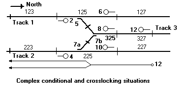</p>

<p>The above is known as a &ldquo;crotch layout&rdquo;, and is exceedingly common in all railroads, the New York subways
not excepted. As can be seen, it is
the termination of a third mainline or siding track to running tracks. Although the above example is fully
signalled for all possible moves, often signals 2 and 10 might be omitted, or
be <a href="#marker">marker signals.</a> The three switches are controlled as one
crossover (7) and one singleton switch (5). There is an <a href="#apsig">approach signal</a> on the center track (12), and, as can be seen,
its <span class="def" dref="#DEF_clen">control line</span> extends past the <a href="#home">home-signal</a>-protected
area out to track sections 123 and 223.</p>

<p>The first issue is a railroading practice
concerning the effect of switch 5 on routes over switch 7 reverse. If a route is to be set up from signal 4
to signal 8, or vice versa, which would be over 7 reverse, the position of
switch 5 is theoretically of no consequence, as it is not involved. However, good railroading practice
demands that in the case such a route, 5 be set normal. It can be seen that a northbound train
on track 1 has less chance of causing damage, broadsiding the train on 7
reverse, if 5 is ensured normal. The interlocking must, therefore, ensure that 5 is capable of being set
normal, and moving it so, when any route over 7 reverse is set up. Any situation which locks 5 reverse (but
somehow does not lock 7) will lock out a move over 7 reverse. This is referred to as the &ldquo;crotch layout&rdquo; case in the literature.</p>

<p>The second issue is called <b>conditional
crosslock</b>, and involves signal 12, an approach signal, and its interaction
with the state of switches 7 and 5. It can be seen that if 7 is normal, 12 cannot clear unless 5 is reverse
&mdash; with 7 normal, 5 is a trailing-point switch in the control length of
12. Either one of 7 and 5 must be
reverse for 12 to be able to clear. Now, as described above, when a route is laid out from 8 to 2 or 4,
switches 5 and 7 must both be moved such that only one is ultimately in the
reverse position.</p>

<p>In detail, assuming no route is set
up over 5 and 7, clearing signal 12 must force either 5 reverse and 7 normal or
7 reverse and 5 normal. Assume no
route over 5 and 7, but 5 reversed, and 12 is clear (over 5 reverse to
123). Assume we then wish to set up
a route from 8 to 4 over 7 reverse in this condition. As stated above, 5 must be normal before
a route over 7 reverse can clear. But if 5 is set normal before 7 is fully moved, the control length of 12
will see switch 5 set against it, and will turn red (&ldquo;be kicked off&rdquo;), perhaps in the face of an oncoming train, which is impermissible. Thus, the
interlocking, in this case, must move switch 7 <i>first,</i> then switch 5, so
that at no time is signal 12 kicked off. This is done automatically by the interlocking; it is not something the
tower operator must concern him or herself with. Switches 27 and 29 at <a href="#islington">Islington</a>
have this relationship, and this behavior can be observed. When there is an exit at 44, 27 and 29
can be moved by hand (right click), but only one at a time and never through
the state where both are normal.</p>

<p>Note that it must be permissible for 7 and 5 to be reverse simultaneously with 12 clear (but, presumably 8 not (yet) clear). Were this not so, it would be impossible to call and clear 8 to an exit at 4 with 12 already clear over 5 reverse and 7 normal.</p>

<p><a name="fpoverlap"/>The third issue is called <b>facing
point overlap.</b> Again, this
involves signal 12 above, and manipulating switches 5 and 7 in a situation
where 12 is already clear under such constraints that the signal is not kicked
off as a side-effect. Consider
switch 5 reverse, 7 normal, approach signal 12 clear over 5 reverse into
section 125 and 123. As can be seen from the diagram, its control length
extends out through 123. Suppose,
in this situation, that section 223 were <span class="def" dref="#DEF_occ">occupied,</span> and an attempt
were made, even under all the constraints above, to move switch 7 reverse,
perhaps to clear up a <a href="#callon">call-on</a> on 8
into the train at 223. Even though the route is valid and permissible, a
side-effect would be to &ldquo;throw the train&rdquo; into the control length of
12, which will kick it off as soon as the switch is moved, which is
impermissible.</p>

<p>In this case, switch 7 is said to be
&ldquo;locked by the overlap of 12&rdquo;. A properly-designed interlocking will not permit 7 to be reversed in
this case. However, a very special allowance is made in this case. The
route from 8 to 4 can indeed be set up, but the switch will not move until the
train leaves 223, at which point the switches will move and the route will
complete its setup automatically. This is called <b>preconditioning</b> the switch, i.e., setting up a
situation where a later event causes a manipulation attempted earlier to take
effect, and the only case where it is permitted. The switch and signal 12 will flash on
the interlocking panel (see <a href="#lockconflicts">Locking Conflicts</a>)
with entrance and <span class="def" dref="#DEF_exlt">exit lights</span> showing in this state.</p>

<p>In all of the above scenarios, &ldquo;signal 12 is clear&rdquo; is shorthand for &ldquo;signal 12 is clear, or
its <a href="#aplock">approach locking</a> has not reset.&rdquo; Please see <a href="#aplock">Approach Locking</a> for a discussion of this.</p>

<p>All of these situations can and do
occur simultaneously. They all
occur simultaneously over switches 27 and 29 at <a href="#islington">Islington,</a>
where the complexity is further enhanced by the interaction of these three
situations with <a href="#stationtime">station time (ST) signals</a>.  They occur frequently at the <a href="#v2adv">advanced version 2 real NYC scenarios</a>.</p>

<br clear=all style='page-break-before:always'>


<a name='btob'/><h2>3.15 Back-to-back signals</h2>

<p>Two signals in opposite directions at
the same location (the same <span class="def" dref="#DEF_IJ">insulated joint</span>) present many
interesting issues. Consider the
following two signals and associated switches and track: 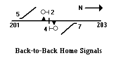 Note
that each of the signals 2 and 4, which must be <a href="#home">home
signals,</a> has a <a href="#stops">stop.</a> Every signal (except some <a href="#dwarf">dwarfs</a> and <a href="#marker">markers</a>) has a stop, and is prepared to stop a train. When
two signals are at the same location, their stops are at the same location, but
on opposite sides of the track. A
stop in the wrong direction in the tripping position can indeed trip a train,
but it is not designed to. Thus, no
matter what other rationale can be brought to bear, it is not meaningful for
two stops at the same location to disagree, i.e., one be tripping and one be
clear. Thus, the two stops at 2 and
4 are controlled (and sometimes even constructed) as one mechanism. This is the case in <b>NXSYS.</b></p>

<p>This raises issues about how the two
signals interact to clear the stop. Clearly, if either one is clear, the stop must drive (go down), and when a train passes the pair of signals in either direction, the stop must come up
behind the train.</p>

<p>An additional complexity is introduced by the fact that stops <a href="#slock">lock
switches.</a> That is, a switch cannot be moved until all stops protecting it are in the tripping
position. Thus, for switch 5 to move, 2's stop must be tripping,
which, of course, is no surprise, as 2 must not be called. But since
2's stop is 4's stop, 4's stop must be at tripping, and thus, 4 must
be at stop. Therefore, unless 4 is at stop, 5 cannot be moved, which
is not obvious. If 4 were clear, there is little sense in clearing 2, as no trains can be between
two signals at the same point. But
clearing a route with an <i>exit</i> at 2, i.e., entering at the left of the
diagram, would be impossible if 4, and thus 2's stop, were
clear. Thus, interlockings (including in <b>NXSYS</b>) require a home signal in this case to be red unless there is a route lined up <i>toward it.</i></p>

<p>There is an exception to this case: if a train moving southward passes completely past 2/4, and wants to reverse, it would be impossible to clear 4 under these conditions. Therefore, the rule above is short-circuited, as it were, if there is a train in 201 &mdash; occupancy of 201, or
north routing through 201, permits 4 to clear.</p>

<p>Note that all signals check their stops, and do not clear unless
and until their stops are clear; the shared stop being in the tripping
position forces both its signals red.</p>

<p>Lengthy bidirectional tracks between interlockings feature
back-to-back automatic signals at each <span
onmouseenter="defenter(this);" onmouseleave="defleave();" class="def"
dref="#DEF_IJ">insulated joint</span>.  Such tracks are always under
<a href="#traffic">traffic control</a>, whose consistent state chooses
between the control of the two signals for the shared stop or stops.</p>

<p>This situation becomes even more complex when the back-to-back signals are of different types, e.g., one is an <a href="#automatic">automatic</a> and the other is a <a href="#home">home signal</a> or <a href="#marker">marker signal.</a> In this case, the <a href="#ak">automatic-key-by</a> feature of the automatic signal would totally
defeat the stop of the home signal unless great ingenuity is applied
to the management of the shared stop. It
turns out that the standards used by NYCT consider the idea of a home (or
marker) signal's stop being driven down by another signal's AK, no matter what
the rationale, less acceptable than decoupling the two stops, and that is the
policy currently in force at marker
30 and automatic A2-714 at <a href="#progman">Progman St.</a>
(for example) and elsewhere in the <b>NXSYS</b> interlockings.  It is
the establishment of a northbound route from signals 4 or 8 exiting at
30 which drives 30's stop (the <a href="#nomenclatures"><b>VS</b>
relay</a>) and allows automatic A2-714 to clear at all.</p>

<p>The practice of operating the two stops of back-to-back signals from the same motor (&ldquo;shared stop machine&rdquo;) was once common on the BMT, but is no longer employed.</span></p>

</p>

<h2 id="traffic">3.16 Traffic Control and Traffic Levers</h2>


<p><b>Traffic control</b> is a technique used to coordinate the direction of traffic on a single  run of track (henceforth, &ldquo;the extent&rdquo;), usually lengthy, connecting two interlockings (i.e., with none other between them). <b>Traffic levers</b> are operator controls at those interlockings (actual levers in classic frames, or equivalent knobs at newer ones, including NX/UR) employed to operate this.  When mutually consistent, they designate the containing interlocking as either the entrance to the extent or exit from it. In traditional lever-frame interlockings, levers are physically locked, i.e., cannot be moved, unless appropriate conditions obtain.  In &ldquo;all-relay&rdquo; interlockings, including NX/UR, these controls are not physically locked, but (as elsewhere) have no effect unless appropriate conditions obtain: the white arrow-marked directional lights surrounding the &ldquo;traffic lever&rdquo; knob show red when it is logically locked.</p>

<p>Routes cannot be lined to allow trains into a traffic-controlled extent unless the traffic levers at both ends agree about which is the entrance and which is the exit.  To change traffic direction, the interlocking desiring to be the new exit must first so declare itself, and only then can the interlocking desiring to be the new entrance concur, and so declare itself, whereupon the new direction is finally established.  The conditions which must be met that permit either action are as follows:</p>

<p>The interlocking desiring to declare itself the exit of the extent (the end receiving trains from it) cannot so set its traffic lever unless
<ul>
    <li><b>Exit conflict</b> &mdash; No routes are set up whose exit is <i>to</i> the extent; no such routes previously set up are are active on account of <a href="#aplock">approach locking </a>or <a href="#routl">route locking</a>.</li>
    <li><b>Compliance</b> &mdash; All approach or home signals under the control of this interlocking actually on the extent governing movement away from it have been cancelled and their <a href="#aplock">approach locking</a> released, i.e., all those that cannot be <span class="def" dref="#DEF_called">called</span> once the exit is established.</li>
    <li><b>Vacancy</b> &mdash; The extent is presently fully unoccupied.</li>
</ul>

The interlocking desiring to declare itself the entrance to the extent (the end supplying trains into it) cannot so set its traffic lever unless
  <ul>
      <li><b>Concord</b> &mdash; The distant interlocking has successfully set itself up (i.e., moved its lever) to be the exit, validating the above conditions.</li>
      <li><b>Compliance</b> &mdash; All approach or home signals under the control of this interlocking actually on the extent governing movement towards it have been cancelled and their <a href="#aplock">approach locking</a> released, i.e., all those that cannot be <span class="def" dref="#DEF_called">called</span> once the entrance is established.</li>
      <li><b>Vacancy</b> &mdash; The extent is presently fully unoccupied (yes, it's implicit in the above).</li>
      </ul>
  Note that traffic direction cannot be changed if there are trains, portions of trains, or even faults falsely indicating trains, in any portion of the controlled extent (<b>Vacancy</b>). Of course, the whole purpose of this mechanism is to subsequently admit trains into it from the &ldquo;entrance&rdquo; end.
</p>
      

<p>Traffic-controlled extents between two distant interlockings always contain automatic signals in both directions, most often <a href="#btob">back-to-back</a> pairs sharing an <span class="def" dref="#DEF_IJ">insulated joint</span> and (on old BMT) a stop machine.  The concurring traffic levers determine which signal of each pair is functional, how the shared stop should function, or which unshared stops should function and which &ldquo;lay low&rdquo;.  Home and approach signals conflicting with the proposed traffic direction cannot be <span class="def" dref="#DEF_called">called</span> once it is established; hence, the need to cancel them before the change can be effected (<b>Compliance</b>).</p>

<p>There are no supplied interlockings with <b>NXSYS</b> containing multiple sub-interlockings (although some such <b>NXSYS</b> scenarios do exist!). Therefore, there is no real need for traffic levers in the supplied ones.  However, the real interlockings they model do involve traffic levers, such as Atlantic Avenue, where the northern ends of the local tracks become the Seventh Avenue IRT, and face Wall St. Interlocking with traffic levers at each end.  The <b>NXSYS</b> interlockings thus supply a traffic lever which is not coordinated with any distant traffic lever; such &ldquo;singleton&rdquo; traffic levers are only subject to the conditions other than <b>Concord</b> listed above.  &ldquo;Singleton&rdquo; traffic levers are not unheard of &ldquo;in real life&rdquo; in large interlockings with discrete &ldquo;sections&rdquo; controlled from one panel. (Deep insight &mdash; <a href="#routl">route locking</a> by and large accomplishes the same thing in a one-interlocking context.)</p>

<p>An <b>NXSYS</b> traffic lever, comprising a knob and the two directional lights, looks like this.  Clicking on any part of it at all &ldquo;flips&rdquo; it the other way, but doing so will have no effect if either light is red (i.e., the lever is logically locked by the conditions above not being met.).</p>

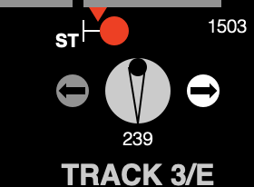
<p></p>

<a name='autoop'/><h2>3.17 Train Operator Route Selectors and Automatic Operation</h2>

<p>Since time immemorial in the twentieth century, New York Subways have included &ldquo;route selector&rdquo; push-button boxes for Train Operators (previously called &ldquo;motormen&rdquo;; many are now women) to &ldquo;punch&rdquo;, from their cab windows, to identify their trains and destinations to inform the  the Tower Operator, usually at the next station, of their intent, and in some places (e.g., DeKalb Avenue, Brooklyn), inform passengers on the platform.   In the twenty-first century, the latter function, at least, has been obsoleted by radio communications and &ldquo;arrival prediction&rdquo; digital displays in many cities, including many places in New York.</p>

<p>The author of this application, while bidding a bittersweet farewell to this ingenious system which even fifty years ago implemented a &ldquo;queue of trains&rdquo; without chips or computers, but just wickedly clever relay logic (deeply remeniscent of <a href="#routl">Route Locking</a>), nonetheless offers it in Version 2 <b>NXSYS</b>.  Some supplied interlocking scenarios (e.g., Myrtle Avenue) have this feature.</p>

<p>When this feature is enabled for an interlocking, the <b>Automatic Operation</b> item on the <b>Interlocking</b> menu is enabled, and you must check it to turn the feature on.  When Automatic Operation is enabled, occupation of certain track sections (often at the limits of the scenario, or at station platforms) where, &ldquo;in real life&rdquo; Route Selector boxes appear (including when an <a href="#trains"><b>NXSYS</b> train</a> occupies it) causes a very similarly styled <b>NXSYS</b> &ldquo;Route Selector menu&rdquo; to pop up there.  Here is what one looks like on the Mac (the Windows version is a Windows-styled (as opposed to trackside-styled) multiple-choice menu):</p>
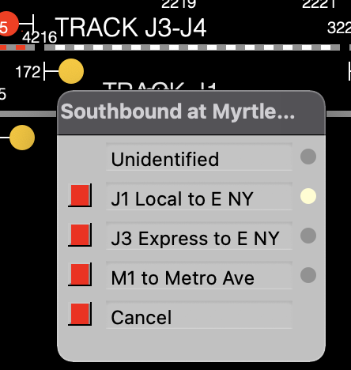
<p>The actual button box appearing in the subway system is more or less a menu, thus it is not surprising that a menu should represent it.  You (the <b>NXSYS</b> user) take on the identity of the Train Operator, not the Tower Operator, when you &ldquo;punch in&rdquo; your train identification on the buttons at the left of the box; the circles on the right of the box are lights that identify your choice, which is initially <b>Unidentified</b>.  The <b>Cancel</b> button at the bottom of all such boxes, as &ldquo;in real life&rdquo;, reverts you to that state.</p>

<p>When you choose such a route by &ldquo;punching&rdquo; one of the other (than <b>Cancel</b>) buttons, your choice is transmitted, cascaded, through relays associated with each track section ahead of you to the nearer of the back of the next train (ahead in space, preceding in time) or a similar box at the switch whose setting you are trying to choose (and forges ahead as the next train vacates sections &mdash; I've just given away its &ldquo;real life&rdquo; implementation secret). When your train arrives at that place, the Automatic Operation logic will actually press signal and exit buttons and set up (&ldquo;line&rdquo;) the requested route! If, at that place and time, you, the Train Operator, press <b>Cancel</b>, the lined route will <i>not</i> be cancelled, and you, the Tower Operator, must cancel it yourself.  When a train setting a route this way accepts the lined route, it will (modulo bugs) cancel it by the normal <a href="#fleet">auto-cancellation</a>.
</p>

<br clear=all style='page-break-before:always'>

<a name='scenarios'/><h2>4. Interlocking Scenarios</h2>

<p><b>NXSYS</b><span> comes supplied with two sample interlockings, <a href="#progman">Progman St.,</a> a four-track setup with three double crossovers, not unlike Brighton Beach or
57th St. (Broadway/7th Avenue) (those old enough to remember the Brighton
Express will recognize and appreciate the symmetry) with a single crossover
added, and <a href="#islington">Islington,</a> a two-track
setup with a double crossover and a siding, the latter not unlike Lefferts Ave.
on the IND Fulton St. line or Court Square on the IND Crosstown.  In Version 2, including the Mac version, two additional, <a href="#v2adv">real NYC interlockings are also supplied</a> (click on that).</span></p>

<p>Islington is the more recent addition
to <b>NXSYS</b>, and was designed from actual Toronto signal charts. Progman St., on the other hand, contains
many simplifying assumptions, such as the lack of <a href="#stationtime">station time</a> signals and <a href="#fpoverlap">facing
point overlap</a>. Progman
St. is much better for learning the rudiments of NX/UR operation, while Islington
goes full bore to all the complexities of a live scenario. In order to really
operate Islington, it is necessary to comprehend even the <a href="#hairy">Advanced Locking Scenarios</a> described in this document; for
Progman St., it is not.</span></p>

<p>Designing your own scenarios is difficult.<br clear=all style='page-break-before:always'></p>

<h3 id="progman">4.1 Progman St. Interlocking</h3>

<p>The fictitious <b>Progman St.</b> is an interlocking very much like several 4-track terminals on the New York system where the station &ldquo;pockets&rdquo; on the center (express) tracks are used
for holding and reversing trains coming from either the express or local
(outside) tracks. 57th St. (Broadway/7th Avenue BMT), and Brighton Beach
(Brighton Beach line, BMT) are typical of such. Progman St. is a little more
and a little less, to introduce variety for didactic purposes. The equivalent of switch 21 appears at
neither of the named interlockings, and is there only to add to the fun with
the availability of multiple routes between signals 20 and 32 and 34.</p>

<p>The interlocking definition files for Progman St. interlocking is <b>progman.trk</b>.</p>

<p>Please refer to the <b>NXSYS</b>
display of Progman St. interlocking for the following discussion. It is conventional, when explaining a given interlocking, to present a track map with all <span class="def" dref="#DEF_clen">control lines</span>
and <a href="#timesig">time signal</a> timing sections
shown &mdash; it is hard to operate or understand the interlocking without this
knowledge.</p>

<p>Progman St., while usable as such a terminal, is signalled in a style that indicates such use is envisioned in rare circumstances only. This is evident
in the fact that signal 14 is a <a href="#dwarf">dwarf signal</a>
(used for rare moves), not a full <a href="#home">home signal,</a>
and the fact that there is no northbound (to the right, that is) signal
opposite 24, controlling moves into the pocket on A3 track. This is deliberate, to produce a more
interesting interlocking. The most recent NYCT interlockings I have seen are very heavily signalled in all directions.</p>

<p>Progman St. also supports &ldquo;reverse&rdquo; moves into normal running track &mdash; trains entering on the right from A1, A3, or A4 tracks can exit to the left on any of the four tracks,
and trains entering from the left on any track can exit to the right on any
track &mdash; there are signals provided to govern all these moves. Yet, Progman St. only supports these moves &ldquo;lightly&rdquo; &mdash; they are very lightly signalled, and entrance at 32 and
34 is expected to be rare, as these are dwarf signals (click right on them to
see).</p>

<p>Progman St. supports <span class="def" dref="#DEF_etoe">end-to-end</span>
routes (or &ldquo;through-routing&rdquo;, see <a href="#nxo">Basic
NX Operation</a>) from any entrance to any possible exit. Moves between 4 and 20 are the most expansive.</p>

<p>An interesting feature of Progman St. is the <span class="def" dref="#DEF_ovlp">overlap</span> of the <a href="#home">home signal</a> <span class="def" dref="#DEF_clen">control lines</span>. For instance, If 8 is the entrance of a
route to 10, and 26 begins a route to 24, switch 15 must be normal, or the
routes would conflict in the overlaps of the control lengths of 24 and 8. If this setup is attempted with 15 reverse, you will actually see 15 move normal. To see this, route 8 to 26, cancel 10 after setup, then route 26 to 24. Cancel 8 in this condition and attempt to initiate at 14, and you will see switch 17 flash and signal 26 complain by flashing, indicating a <a href="#lockconflicts">locking conflict</a> with the overlap of 26. Similarly, if a
northbound train (as per <a href="#routl">route-locking</a>)
sits facing signal 28, but 32/34's <a href="#aplock">approach
locking</a> has expired, lining a route from 26 to 24 will require and
force 15 reverse before 26 clears; these situations are categorically known as <b>facing-point
push.</b></p>

<p>Progman St. also contains three <a href="#gt">Grade Time (GT)</a> signals, the northbound <a href="#automatic">automatics</a> A2-725, A4-720, and
A4-727; that is why they are red at startup. Please see the discussion of <a href="#timesig">time signals</a> for a description of this feature.</p>

<p><b>Progman St. Safety Warning!!!</b></p>

<p>Because of its didactic intent,
safety at Progman St. has been compromised in one serious way which could not
occur at any real interlocking &mdash; it allows &ldquo;wrong-direction&rdquo; trains
to enter the tracks on the lower
left and upper right, without any protection against trains coming in in the
correct direction from the &ldquo;great void&rdquo; outside of the screen. In a real interlocking (e.g., 57th St)
such moves would be outright forbidden (&ldquo;No moves to track 2&rdquo;), or
<a href="#traffic">traffic control</a> coordinated with a remote interlocking and/or
&ldquo;holdout&rdquo; signalling would be employed. Any of these techniques would either
extend the panel off the screen in both directions, mysteriously halting
simulated trains off the screen and totally befuddling beginners, or otherwise
reduce the didactic value of Progman St.</p>

<p>Furthermore, the <a href="#dwarf">dwarf signals</a> are unsafe against impermissible wrong-direction moves, as they have no <a href="#stops">stops.</a> This is as per reality in older interlockings; as discussed under that heading, newer interlockings do not
employ dwarf signals on revenue trackage for that reason.</p>


<br clear=all style='page-break-before:always'>

<h3 id="islington">4.2 Islington Interlocking (Toronto)</h3>

<p><b>NXSYS</b> now supplies a very complete and accurate implementation of Islington Interlocking on Toronto's Bloor-Danforth line. The signalling principles and panel operation are identical to those in New York City, although the signal aspects for <a href="#timesig">time
signals</a> are a little different.</p>

<p>This interlocking was chosen because
even though it is smaller than <a href="#progman">Progman St.</a>,
and involves fewer tracks, it involves a fair number of complexities not
present there.</p>

<p>The interlocking file for Islington interlocking is:</p>

<p><b>islingtn.trk</b> &nbsp;&nbsp;           Relay-language
source-code for the interlocking</p>

<p>Please read <b>Islington.html</b> in its folder for more information about its particulars and Toronto conventions.</p>

<br clear=all style='page-break-before:always'>

<h3 id="v2adv">4.3 Myrtle and Atlantic Avenues &mdash; Advanced &ldquo;Real Life&rdquo; NYCT scenarios</h3>

<p>Supplied with Version 2 are two operative scenarios for actual New York City interlockings, in their own folders, loadable from <b>atlantic.trk</b> and <b>myrtle.trk</b> in the similarly named folders (directories). While the track, signal, and switch identifications (and signal control lines) are from real life, the circuitry is <i>not the actual circuitry</i> at these sites, although it is designed to the same spec, but &ldquo;less well&rdquo;.</p>

<p>These two fair-sized interlockings operate identically on the Windows and Macintosh implementations of Version 2 <b>NXSYS</b>, and include <a href="#traffic">traffic levers</a>, <a href="#autoop">automatic operation</a>, double and single slip switches, countless <a href="#hairy"> overlap- and crosslocks</a> and other advanced and interesting features.  As they both include extensive scenario-specific documentation on their respective contributions to the <b>NXSYS</b> <b>Help</b> menu, they will not be described further here;  both should be visited.
</p>
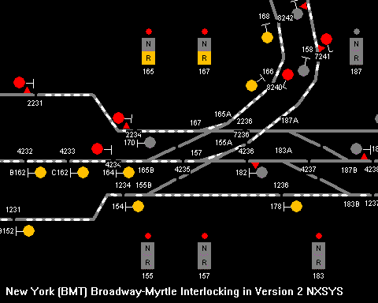

<a name='design'/>

<h3 id="240th">4.4 240<sup>th</sup> St Broadway Line</h3>

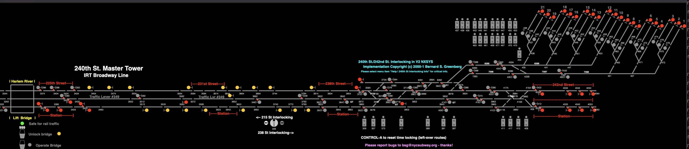

<p>The NXSYS scenario for 240<sup>th</sup> St. Master Tower was begun by Henry Sundermayer and myself about 2000, and continued and upgraded by me continually since.  It represents all the trackage from 215<sup>th</sup> St. north (but not the 207<sup>th</sup> St. Yard connection.).  There is operative middle-track (single-control) traffic control.  It is quite complex, and demonstrates many, many complex locking features.  See the incorporated help text for details.</p>

<h3 id="Duckburg">4.5 Duckburg design tutorial</h3>
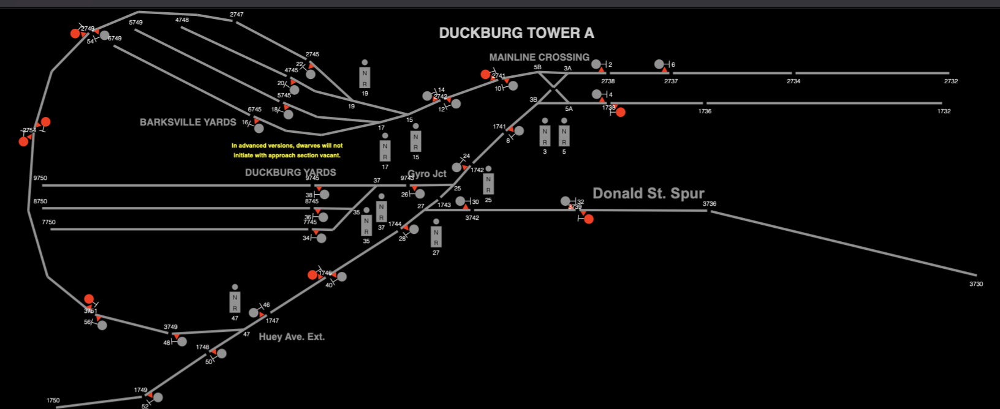
<p>This layout is an imaginary yard with &ldquo;railroad-like&rdquo; design.  What is interesting here is that the interlocking is supplied in seven files, explaining (in source comments) seven stages of implementing the interlocking logic from scratch to a fully-functional tower.  File <b>db1.trk</b> can only select routes, but no signals, locking, etc., and <b>db7.trk</b> is a fully-functional interlocking.  See the file <b>README.md</b> in the interlocking&rsquo;s eponymous folder.</p>


<h3 id="design">4.6 Designing your own scenarios</h3>

<p>Designing your own scenarios is not easy! As <b>NXSYS</b> is an interlocking
simulator, not an interlocking implementation, designing and creating the track
layout consists not only of designing and expressing the track and signal plan, but all the <a href="#relays">relay circuitry</a>
which implements the interlocking. The latter is the lion's share of the work (and the fun), but requires substantial understanding of the New York (or other) prototype circuits.  It is probably possible to learn a lot of this subject matter by watching the relays in action with <b>NXSYS.</b> Rather than an accident, a bug, poor design choice, or cop-out, this is the reason <b>NXSYS</b> came to be in the first place.</p>

<p>As of this writing (17 February 2021), I have supplied a document teaching the basics of relay-based rapid transit interlocking circuit design.  It is downloaded with this application, and <a href="Interlocking Logic Design.pdf">should be at this link</a>.  This is no simple matter, but feel free to study that if it interests you.</p>

<p>The NXSYS paradigm, does, however, offer the advantage that you have the &ldquo;source code&rdquo; for several supplied interlockings; in the time-honored tradition of computer programmers, you can modify the supplied interlockings in layout, behavior, or implementation, without
restriction, if you wish to experiment or learn without crashing any real
trains. You do not need the source code for <b>NXSYS</b> to do this, or to know any programming language, at
all. The <i>real</i> pleasure in <b>NXSYS</b>
is not so much playing with an operative interlocking, but interactively
designing and debugging it in the manner of a computer program.</p>

<p>If you have the required expertise in
signal engineering, or are trying to acquire it, <b>NXSYS</b> is an ideal tool to create, experiment with,
and debug relay circuit designs.</p>

<p><b>TLEdit</b>, the &ldquo;track layout editor&rdquo;, is also supplied.  <b>TLEdit</b> allows you to create  actual layouts, i.e., the display of tracks, switches, signals, etc., but only you can create the logic which gives it life and makes it responsive.  It is self-documenting.</p>


<br clear=all style='page-break-before:always'>
<h2 id="relays">5. Relays and Relay Logic</h2>

<p>You can safely ignore this section. But if you wish to
understand the internal workings of <b>NXSYS</b> interlockings, or debug them, or
you are so idle and/or well off that you wish to attempt to design your own interlockings,
read on.</p>

<p>A <b>relay</b> is an
electromechanical switch (not a &ldquo;switch&rdquo; as in a piece of track), a
set of switches operated together by an electromagnet. Electricity flowing through the switches
can be used to control any electrical apparatus, or, more relays. Relays are neurons, and form &ldquo;logic
networks&rdquo; implementing complex functionality. Although relays as logic elements have
largely been obsoleted by computer technology, the earliest electrical
computers, including phone switches, were built of relays, and railroad
signalling and interlocking is still (largely) implemented in relays today. This is because their modes of failure,
unlike those of software, can be fully enumerated and designed around.</p>

<p>As of now (2016), digital and semiconductor circuitry is slowly but inexorably pushing out the now antiquated relay technology, more rapidly in new systems, but certainly in New York, too. However, the vast bulk of the system still relies on relay interlockings dating from all times of the twentieth century, and even the newer solid-state and digital technology must interface to it.  Alas, relay technology is obsolescent, but still ... .... </p>

<p>Relays sport two types of switches,
or &ldquo;contacts,&rdquo; those that allow electricity to flow through them when
the &ldquo;coil&rdquo; (electromagnet) is energized and not when not, and those
that allow current to flow when the coil is <i>not</i> energized, and not when
it <i>is.</i> In railroad
terminology, the former are called <b>front contacts,</b> and the latter <b>back
contacts.</b> A contact is said to
be <b>closed</b> when electricity can flow through it, and <b>open</b> when
not. A typical railroad signalling
relay might have a dozen contacts total, some front, some back. Railroad signalling relays are of extremely high quality, rugged, and quite expensive.</p>

<p><b>NXSYS</b> interlockings are implemented as simulated relays; the actual names (<i>nomenclature</i>) of the relays and the way the contacts are interconnected are defined in the <b>.trk</b> file. All of the logic of the interlocking described in <a href="#ifeat">Chapter 3</a> of this documentation are implemented not in C or C++, but in simulated relays, using traditional New York circuit nomenclature and designs.</p>

<p><b>NXSYS</b> allows you to actually see the
circuits for any and all relays it is managing and simulating. You can display the circuits on the
screen, several at a time, or create a set of hardcopy circuit drawings
suitable for study and analysis. The relays and their logic circuits are displayed in traditional New York Subway relay logic notation, which is extremely clear and intuitive: 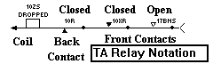 the coil of a relay is a little box sitting on a wire, and a contact is a little triangle and a dot &mdash; triangles &ldquo;balancing&rdquo; above the
wire are front contacts, and triangles sitting under it are back contacts. Each coil or contact is labelled with the name of the relay of which it is part.</p>

<p>A relay is said to have a <b>state</b> at any time: it is said to be <b>picked</b>
or <b>up</b> if the coil is energized (and front contacts closed and back
contacts open), or <b>dropped</b> or <b>down</b> if the coil is not energized,
front contacts open, and back contacts closed.</p>

<p>The &ldquo;definition of&rdquo; or &ldquo;circuit for&rdquo; a relay is the wiring diagram for its coil, the network of contacts of other relays (or even that relay) which control when it is up and when it is down.  You may view the circuit for any relay, and even observe its state dynamically. See <a href="#rlygraphics">NXSYS Relay Graphics.</a></p>

<p>A typical relay name comprises a number identifying a switch, signal, or track section, and a <b>nomenclature</b> indicating function. For instance, <b>24R</b> is the &ldquo;Route Check&rdquo; (<span class="def" dref="#DEF_called">called</span>) relay for Signal 24, which is picked when it is called and dropped when not.</p>

<h3 id="vital">5.1 Vital and nonvital relays</h3>
<p>Relays, by function (i.e., nomenclature), in real-world interlockings divide into two classes, &ldquo;vital&rdquo; and &ldquo;nonvital&rdquo;.  Vital relays, as the name suggests, are those ultimately responsible for the safety of life and limb: those that directly operate or report signals, stops, and switches, and others directly responsible for their safety.  While it may seem that <i>all</i> relays in an interlocking are thus, that is not strictly so:  many, typically those that record panel-board actions and implement (some) panel indications, and those which implement the ingenious entrance-exit route selection, are <i>not</i> critical to safety, and are therefore &ldquo;nonvital&rdquo;.  Categorically, by careful design, the failure, failure to pick, failure to drop, failure to operate properly or consistently, of a nonvital relay, while capable of creating a transportation tie-up, cannot create unsafe conditions.  Failure of vital relays can, although they cross-check each other (quite literally) up and down, coming and going, to minimize these possibilities.  Vital and nonvital relays are markedly different in construction and cost: while nonvital relays resemble those available at do-it-yourself parts stores, vital relays are huge, hyper-rugged, plastic-encased complex instruments each costing (at least) hundreds of dollars.</p>

<p>For example, if the entire routing network of nonvital <b>PBS</b>, <b>XS</b> and <b>ANN, ANS</b> etc. relays were to call for bogus signal and switch movements, the circuits of the vital <b>H, AS, LS, etc.</b> relays would not permit these orders to be carried out.  Vital relays that assert, for safety checking, that something is <i>not so</i> (e.g., signal not clear, track not occupied, northbound route not active in this section, etc.) always are designed such that the relay's being picked is the positive assertion of the <i>absence</i> of the undesired (more unsafe) condition, even though this requires the relay being energized around the clock year round. </p>
    
    
<p><b><i>Vital relays check only each other.</i></b>  They even check that they are not lying to each other &mdash; for example, the circuit of an <b>H</b> relay, the vital relay that clears a signal and stop, checks that not only the <b>AS</b> relays of conflicting/opposing signals are picked (<a href="#aplock">approach locking</a> released), but that its <i>own <b>AS</b> relay</i> (which will symmetrically inhibit those very signals) is, in fact, dropped out to do so (and similarly for <a href="#routl">route locking</a>).</p>

<p>While the vital/nonvital distinction is key to the paradigm of the circuitry, vital and nonvital relays are not distinguished in <b>NXSYS</b>; their logical operation is identical.  Nonetheless, the apportionment of function over relays in <b>NXSYS</b> interlockings continues to maintain this model, and correct design must diligently comply.  Nonvital networks can safely be replaced by software; they are &ldquo;relay software&rdquo;; they tell the vital ones what to do.</p>

<p>In traditional lever interlockings, there are few, if any, nonvital relays.  The interlocked levers serve both control and checking functions simultaneously. For instance (say on the BMT where levers used to go &ldquo;in and out&rdquo; from the frame), a signal lever pushed all the way in is &ldquo;reset&rdquo; and does not inhibit other levers from motion, while countless other levers in concert potentially prevent it from being moved from this position. But once it can be and has been pulled out, it calls its signal, and locks other levers.  However, although it can be pushed in <i>a little</i> to cancel its signal at any time, it cannot be pushed <i>all the way in</i> unless its signal's <a href="#aplock">approach locking</a> has released (i.e., unlocked that far by its so-called &ldquo;indication magnet&rdquo;, &ldquo;<b>M</b>&rdquo;, forebear of the <b>AS</b> relay), and thus, does not unlock other levers until this happens and it is then pushed fully in.</p>

<h3 id="nomenclatures">5.2 Important NY-style Relay Nomenclatures</h3>

<p>Here are the key nomenclatures used in <b>NXSYS</b> and New York and Toronto (and probably many other places) interlockings (the second column indicates vital or nonvital function). &ldquo;Stick&rdquo; designates a relay that &ldquo;sticks&rdquo; picked, i.e., becomes &ldquo;stuck&rdquo; via a &ldquo;feedback contact&rdquo; as long as some appropriate condition obtains. It is thus a memory element equivalent to the digital flip-flop.</p>

<p>See actual circuits in the supplied interlockings (with the <a
href="#rlygraphics">relay graphics tools</a>) for examples.</p>

<p>The amorphous term &ldquo;actually&rdquo; as abused below means
&ldquo;directly, in a hardware sense, with no intervening
logic&rdquo;. For instance, &ldquo;<b>HV</b> directly clears the
signal&rdquo; means that the signal's actual, physical lamps (in this case, the
red lamp and a contact of <b>D</b> or <b>DV</b> selecting between
green and yellow lamps) are connected to contacts of this
relay. &ldquo;Is actually clear&rdquo; means connected to contacts on
the actual device (e.g., a stop) verifying its physical position.  As
this is not possible with color-light signals, <b>RGP</b> checks the
relays <b>H</b> and <b>HV</b>, but in semaphore-signalling (visible on
the extremities of the IRT through at least the 1960's), the actual, physical
position of the semaphore is indeed checked.</b>

<p><b>Signals</b> and <b>Stops</b>, (i.e., relays associated with them)</p>

<table class="rlytab">
    <tr><td><b>H</b></td><td><b>V</b></td><td>&ldquo;Home&rdquo; relay &mdash; clears the signal and stop. Checks every condition necessary for this, including track vacancy, switches <a href="#slock">switches locked</a> and <span class=def dref="#DEF_correspondence">in correspondence</span>, <a href="#routl">route locking</a>, <a href="#aplock">approach locking</a> (both safe opposite the signal's direction and dropped out (unsafe) in its own direction), offside stops clear, <a href="#traffic">traffic locking</a>, etc.</td></tr>


    <tr><td><b>D, DV</b></td><td><b>V</b></td><td>&ldquo;Distant&rdquo; relay &mdash; displays &ldquo;distant&rdquo; (a green aspect) when this signal and the next are clear. <b>DV</b>, not used for home signals, is so-called because it implements <a href="#stopcyclecheck">stop cycle-check</a> when the signal is not clear, checking its own operation as well.
    </td></tr>

    <tr><td><b>V</b></td><td><b>V</b></td><td>The <a href="#stops">stop</a> itself (from
    &ldquo;valve&rdquo; on electropneumatic, e.g., IRT). Note that
      signal clearing (<b>H</b>) checks stops on the off-side through the
      <a href="#clength">control length</a> (see <b>VS</b>).
    </td></tr>
    <tr><td><b>HV</b></td><td><b>V</b></td><td>Actually clears the signal when both <b>H</b> calls for it and the stop (<b>V</b>) is actually clear.</td></tr>
    <tr><td><b>HY</b></td><td><b>V</b></td><td>Home signal
    &ldquo;slotting&rdquo;. Checks all the track conditions necessary
    for a signal to clear (display a &ldquo;high&rdquo; aspect) but
    not necessary for a <a href="#callon">call-on</a>, i.e., vacancy
    of the <a href="#clength">control length.</a></td></tr>
    </td></tr>
    <tr><td><b>CO</b></td><td><b>V</b></td><td>Home signal <a href="#callon">call-on</a>. Clears the signal's call-on aspect, and conditions the <a href="#stops">stop</a> to clear when the train operator presses the button.  Contains all the checks and terms of <b>H</b>, with the exception of all those in <b>HY</b>, and the non-vital contact of the <b>COS</b> (panel call-on control) relay.</td></tr>

    <tr><td><b>U</b></td><td><b>V</b></td><td><a href="#aplock">Time/approach locking</a> timer; see <a href="#multiapprelay">below</a>.</td></tr>
    <tr><td><b>RGP</b></td><td><b>V</b></td><td>&ldquo;Red siGnal rePeater&rdquo; &mdash; picked when all of <b>HV</b>, <b>H</b>, and <b>CO</b> attest that the signal is red.</td></tr>
    <tr><td><b>NVP</b></td><td><b>V</b></td><td>&ldquo;Normal stop repeater&rdquo; &mdash; picked when the train stop is actually in its normal (tripping) position.</td></tr>
    <tr><td><b>RVP</b></td><td><b>V</b></td><td>&ldquo;Reverse stop repeater&rdquo; &mdash; picked when the train stop is proven clear (driven down).</td></tr>
    <tr><td><b>AS</b></td><td><b>V</b></td><td>&ldquo;Approach
    stick&rdquo; &mdash; picked when <a href="#aplock">approach
    locking</a> is fully satisfied and released &mdash; this is the
    relay that other interlocking functions check to ensure the safety
      of a conflicting signal.</td></tr>
          <tr><td><b>VS</b></td><td><b>V</b></td><td>Off-side (reverse motion)
    stop driver/route locking.  Drives down (clears) the <a href="#stops">stop</a> of
    a signal in the opposite direction to a lined route.  Picked by
    <b>R</b> at entrance and held down (&ldquo;stick&rdquo;) by <a href="#routl">route
    locking</a> relays approaching the signal (backwards).</td></tr>
	    <tr><td><b>R</b></td><td><b>NV</b></td><td>&ldquo;Route check&rdquo; relay &mdash; the virtual signal <span class="def" dref="#DEF_lever">lever</span>; calls for the signal.</td></tr>
    <tr><td><b>PBS</b></td><td><b>NV</b></td><td>&ldquo;Push Button Stick&rdquo; &mdash; initiation. When <a href="#intst">interlocked station-time signals</a>
that permit their clearing in spite of a <span class="def" dref="#DEF_trps">trailing-point switch</span>
are involved, this function is split into <b>APBS</b> and <b>BPBS</b> depending on whether
the initiation exploits this feature or not. For an <a href="#apsig">approach signal</a>, this is the &ldquo;virtual lever&rdquo; that calls for the signal.</td></tr>
    <tr><td><b>XS</b></td><td><b>NV</b></td><td>&ldquo;Exit Stick&rdquo; &mdash; picked when an offered exit has been selected.</td></tr>
    <tr><td><b>XR, ZS</b></td><td><b>NV</b></td><td>Ingenious relays used to couple networks to implement <span class="def" dref="#DEF_etoe">end-to-end</span> route setup.  They drop away once the routes are lined.</td></tr>

    </table>


<p></p>

<p><b>Switches</b></p>

<table class="rlytab">
    <tr><td><b>LS</b></td><td><b>V</b></td><td>&ldquo;Lock Stick&rdquo; &mdash; picked when switch is unlocked, i.e., safe to move.</td></tr>
    <tr><td><b>NWP, RWP</b></td><td><b>V</b></td><td>Normal and reverse switch repeaters &mdash; repeat (in the tower) actual contacts on the switch that indicate its actual position.</td></tr>

    <tr><td><b>NWZ, RWZ</b></td><td><b>V</b></td><td>Normal and Reverse switch control &mdash; actually operate the switch motor or valves when called for by <b>NLP</b>/<b>RLP</b> and permitted by <b>LS</b>. One of the two is always picked.</td></tr>
    <tr><td><b>NWC, RWC</b></td><td><b>V</b></td><td>&ldquo;Normal and reverse sWitch <span class="def" dref="#DEF_correspondence">Correspondence</span> &mdash; Actual switch position agrees with last valid call.</td></tr>
    <tr><td><b>NLP,<br/>RLP</b></td><td><b>NV</b></td><td> &ldquo;Normal&rdquo; and &ldquo;reverse&rdquo; lever repeaters &mdash; call for switch to move normal, or reverse. Operated by <a href="#auxkeys">auxiliary keys</a>, the selection network (see below), and more.</td></tr>
    <tr><td><b>ANN, BNN, ANS,BNS,<br/>RN, RS</b></td><td><b>NV</b></td><td>&ldquo;Switch selection&rdquo; &mdash;
        potential intention to move a part of a switch a given way. The &ldquo;tendrils&rdquo; at the heart of NX magic, operated by <b>PBS, XS</b> and each other. Example: <b>ANS</b> = <b>A</b> half, <b>N</b>ormal, <b>S</b>outh.</td></tr>

    <tr><td><b>NWK, RWK</b></td><td><b>NV</b></td><td>Normal and reverse &ldquo;switch indicator&rdquo; relays, used in route-selection logic and panel indication, but not critical control of switches or signals.  An indicator relay picks when the switch is both in the position of the relay's name (<b>NWC/RWC</b>), and is either locked or called for in that position, i.e., when there is no possibility of moving it to the other position. These indicator relays rule out such calls non-vitally; <b>LS</b> prohibits them vitally.</td></tr>
    </table>
</p>

<p></p>

<p><b>Track</b> (relays for each track section)</p>
<table class="rlytab">
    <tr><td><b>T</b></td><td><b>V</b></td><td>Track relay &mdash; picked when the track section is clear (it is <i>not</i> occupied).</td></tr>
    <tr><td><b>TP</b></td><td><b>V</b></td><td>Track relay repeater &mdash; picked when <b>T</b>  asserts that the section is clear.</td></tr>
    <tr><td><b>NS, SS&nbsp;&nbsp;</b></td><td><b>V</b></td><td>North, South (&ldquo;stick&rdquo;) <a href="#routl">route locking</a> relays, picked when <i>no</i> route or in-progress motion in that direction is established, i.e., their being picked attests to the <i>absence</i> of such a route or train motion.</td></tr>
    </table>
<p></p>

<p><a name="multiapprelay"/><b>Multiple types of apparatus</b></p>
<table class="rlytab">
    <tr><td><b>U</b></td><td><b>V</b></td><td>Timer; does not pick until designated time after energized.  The letter <b>U</b> appears alone or otherwise (e.g., <b>US</b> and <b>UK</b>, nomenclatures, not nations) in different uses of timers for different types of apparatus (i.e., signals, track sections, stops in newest installations). The unadorned timer nomenclature for a signal is used for its <a href="#aplock">time approach locking</a> timer; for a track section, it is the <a href="#timesig">GT</a> timer.</td></tr>
</table>


<p></p>

<p>There are many others, and they are left as a tantalizing exercise
for the reader. This information
can be quite interesting &mdash; you can look into a functioning brain with it. For instance, if clicking on a signal
does not cause it to <span class="def" dref="#DEF_init">initiate,</span> you might want to look at the <b>PBS</b>
circuit for that signal and see which contacts are closed and which are open,
i.e., where the path is broken. One
can then track down those relays, by merely clicking on the contact, until the
situation is figured out. By choosing
a good selection of relays to watch at once, and observing contacts as a train
goes through or a route is set up and cancelled, one can actually watch the
interlocking think.</p>

<p><span style="font-size:150%;font-weight:bold">Important!</span>There are relays that are operated by NXSYS when you press buttons or click on track representations or other controls, and other relays which, when operated by the relays you code, cause “switches” to move, signals to clear, track sections to turn red or white or flash, etc.   These are the logical inputs and outputs of your relay system, and, corresponding, the outputs and inputs of the NXSYS application.  The identities and contracts (not <i>contacts</i>) of these relays are discussed in the Relay Language document <a href="RelayLanguage.html">at this link</a>.</p>


<h3 id="rlygraphics">5.3 NXSYS relay graphics and other tools</h3>

<p>To see the definition (circuit) of any relay, select <b>Relays|Show Circuit</b>
and type the nomenclature (e.g., <b>244PBS</b>) of the relay you want to see. The circuit will be displayed in a window called the &ldquo;Relay Draftsman&rdquo; on Windows and &ldquo;Relay Draftsperson&rdquo; on the Mac.  The present state of the relay (picked or dropped) will be displayed with the coil, and the state of each contact will be displayed as open or closed &mdash; a white triangle is open, black is closed. If relay and contact states
change while you are looking at the drawing, it will be updated as you
watch. If you click on any contact,
the circuit for that relay, reflecting current state, will be displayed as
well. On Windows, when the page fills up, it will be cleared, or you can clear it from its local menu; on the Mac, it scrolls.</p>

<p>You may also click right on any object (track circuit, signal, switch, or other), and select <b>Draw Circuit</b> to be offered a menu of relays associated with that object; select one to draw its circuit.</p>

<p>Relays may be interrogated with <b>Relays|Query.</b> This command will
prompt for a relay name and show its state, and, if you wish, its
&ldquo;dependents,&rdquo; that is, the list of all relays who depend upon this
relay in their own circuits (its &ldquo;outputs&rdquo;, if you will).</p>

<p>The relay graphics window can be resized: making it narrower makes
the symbols smaller, too &mdash; there are a fixed number of contacts on each line
&mdash; but doing so also allows more to fit in a given vertical space.</p>

<p>One can (on Windows only) print, on a printer, all the circuits for all the relays in
the interlocking from the <b>File|Print Logic</b>.  It is best to restore the interlocking
to &ldquo;canonical state&rdquo;, i.e., all track sections clear, all signals
cancelled, all switches normal (use <b>Interlocking|All
the above</b> if you wish) before printing, so that contact states will reflect
the &ldquo;normal&rdquo; state of these relays, which is defined in this way, and
is the original intent and traditional usage of the black/white triangle
distinction.</p>

<p>Some relays will appear to have &ldquo;missing circuits&rdquo;, or coil
wires that go nowhere, or are disconnected. Most of these relays are &ldquo;Quisling
relays&rdquo;, operated directly by the user via the mouse (i.e., puppets operated by a foreign power), such as by clicking on a signal or track section, providing the &ldquo;inputs&rdquo; to the relay
system. Bear in mind, too, that other relays are observed directly by the user interface (such as <b>H, T, V</b>) to control the states of the symbols it displays. Both are enumerated in the <a href="RelayLanguage.html">Relay Language document</a>.</p>

<p>The Relay Draftsperson may also be used to access the pseudo-Lisp source for a relay via a click on a coil or contact representation, to facilitate editing of relays under development.  This feature is not trivial to set up, but is quite useful when running.  Do read <a href="RelayIndex.html">this document about it.</a></p>

<h3 id="tracewindow">Relay Trace Window</h3>

<p>One can trace relay activity, in a compiled or interpreted
interlocking, with the <b>Relay Trace window</b>, which is activated from <b>Relays|Trace.</b> Each time a relay is picked or dropped its name and which (pick or drop)
is reported to the trace window. The trace window, of course, makes the interlocking substantially slower &mdash; hiding it restores interlocking speed.</p>

<p>Enable <b>More</b> on the trace window's menu (or use the toolbar, selecting the &ldquo;moron&rdquo; to turn &ldquo;More&rdquo; on) to cause the trace (and the interlocking simulation) to pause at the end of each screenful. Typing space or pressing the <b>M</b> tool allows the trace and simulation to resume. But typing <b>Q</b>
or pressing the &ldquo;Stop&rdquo; tool aborts the simulation, the only way to
get out of a loop in an logic-bug-induced emergency. At that point, you will be offered
exiting <b>NXSYS</b>, reloading the interlocking, or return to top level with
no interlocking loaded.</p>

<p>The trace window can be cleared, a frequent need, from its own menu,
or the first tool on its toolbar.</p>

<br clear=all style='page-break-before:always'>

<h2  id="credits">6. Credits and Conditions of Use</h2>

<p><b>NXSYS</b> was conceived, designed, and written by <a href="#author">Bernard S. Greenberg, of Boston, Mass.,
USA,</a> on his own time, not using any non-redistributable copyrighted or owned components, or developed on anyone
else's paid time. This software is offered as-is. Although this software is thought to be relatively bug-free, bug
reports and suggestions will be fielded, but no response in any given time promised. No representations, warranties,
guarantees, or claims about correctness, operability or suitability of this software and/or documentation for any
purpose are made or implied. Please check the website listed below regularly for notice of bug fixes and changes.</p>

<p>This software is intended for educational, demonstrative, and entertainment purposes only, and is not suitable for use for control of actual railroads or other life-critical missions. The circuit designs, in particular, occasionally employ shortcuts and simplifications not appropriate for real railroad signalling, and are not suitable for use as prototypes for systems to control real life-critical systems. The author assumes no responsibility for any damage or harm resulting from use or misuse. The author assumes no responsibility for errors resulting from corruption of the distribution media or files. Compliance with any extant copyrights, patents, or other rights potentially infringed by the commercial use, in spite of this warning, of information provided in this software or documentation, is your responsibility alone.</p>

<p>This software is currently licensed in <a href="https://www.gnu.org/licenses/gpl-3.0.en.html">GNU Public License Version 3.</a></p>

<p>This software is intended for personal use and personal education, and offered free of charge under those
conditions. It is not intended, or certifed, to be used or adapted for real railroads or other life-critical applications.</p>

<p><b>NXSYS</b> is implemented in C++, currently at the C++17 (2017) language level, exploiting STL. The Microsoft Windows versions are presently (2022) 64-bit, in Microsoft Visual C(++) 2022, the Macintosh
version in Apple <b>clang LLVM</b> C++, 64 bit, with the user interface in Objective C++ (see the <a
href="MacNXSYS.html">Mac-specific help</a> for more detail). An original Lisp implementation
(originally including an original compiler) forms a part of it. The Windows versions are intended for use in modern Windows environments, currently pretty much Windows 10 or 11.  The 32-bit versions, which are obsolete, will work on older Windows platforms.  NXSYS 1 is gone.  This help text was born in original Microsoft Help Compiler source, transmuted through Python scripting to HTML, and is now maintained in XCode on the Macintosh.</p>

<p>This software employs the pugixml portable XML library (<a href="http://pugixml.org">http://pugixml.org</a>). pugixml is Copyright ©2006-2018 Arseny Kapoulkine.</p>

<p><b>NXSYS</b> is based upon ideas and designs from the June 1, 1958 New York City
Transit Authority drawings, <b><i>NX &amp; UR Interlockings, Typical Circuits
(733-33),</i></b> which was one of the central formative documents of the
author's career. A recent gift of a 1994 733-33 has been most helpful, too. The relay-logic interlockings implemented by <b>NXSYS</b> straightforwardly implement most, but not all, of these ideas. Neither this software nor this documentation has been authorized, approved, or verified by the New York City Transit Authority or its successors.</p>

<p>The author conceived the ideas in the relay logic simulator/interpreter and compiler which form a large part of
<b>NXSYS</b> when he was in the employ of Symbolics, Inc., in the early 1980's. Implementation of (16-bit Windows) NXSYS was begun on 29 May 1994.  Version 2, permitting arbitrary 2-dimensional track geometry and topology, was begun (on 32-bit Windows) early in 1997, but not released. The Macintosh Version was birthed in the Fall of 2014.  The releaseable Version 2.1 for Windows was effected, benefiting from many improvements in the Mac version, in the Winter of 2016.</p>

<p><b>Windows</b>, <b>Windows 10</b>,<b>Win32</b>, and <b>Visual C++</b> are trademarks of the
Microsoft Corporation. <b>Apple</b>, <b>Macintosh</b>, <b>Mac</b>, <b>XCode</b> and <b>Objective C(++)</b> are trademarks of
Apple Inc.  <b>Intel</b> is a trademark of the <b>Intel Corporation.</b>
<b>NX</b> refers to a scheme of railroad switch and signal control offered by
General Railway Signal (now part of the Alstom Corporation), and <b>UR</b>
refers to a scheme of railroad switch and signal control offered by Union
Switch and Signal Co., a division Ansaldo Trasporti. Neither this software nor its
documentation has been authorized, approved, or verified by either of these or
any other railroad signal concern.</p>

<p>The system icon is the noble visage of the Type D &ldquo;Triplex&rdquo; cars, who reigned over the BMT express runs for forty years ending in 1964.</p>

<p>The World Wide Web site for <b>NXSYS</b>, containing the latest versions, interlockings, and modification info, as of this writing, is</p>

<p>
<blockquote>
    <a
href="https://www.nycsubway.org/wiki/NXSYS,_Signalling_and_Interlocking_Simulator">https://www.nycsubway.org/wiki/NXSYS,_Signalling_and_Interlocking_Simulator</a>
</blockquote>
</p>

<p><a name="webaddr"/>You can contact the author at the Signal section of <a href="https://nycsubway.org"/>nycsubway.org</a>.<p>

<a name='author'/><h3>6.1 About the Author, and other contributors</h3>

<p>Bernard Greenberg, the author of this program, its interlockings,
and documentation, grew up in Brooklyn, NY, in the heyday of the subways, the
1950's and 1960's. Like most New Yorkers of the time, he rode them everywhere, and, through the kindness of helpful motormen, towermen (they were all male then) and the like, became an avid and knowledgeable </span>railfan<span> before he was old enough to ride alone. He finally
made contact, as it were, with the NYCTA in 1962, and for a couple of years
regularly received boxloads of documents, maps, plans, and answers from a
railfan employee, Martin Schachne. In love with the subways, after being shown the DeKalb Avenue NX panel he soon combined this passion with his then-largest &ldquo;hobby&rdquo;, &ldquo;electronics&rdquo; (an old name for a precursor of computation), and increasingly zeroed in on
NYCTA signalling, culminating in a 1966 study of 733-33, the typical circuits
for NX/UR interlockings and subsequent design of a complete UR interlocking for
Atlantic Avenue (IRT) &ldquo;for the fun of it&rdquo;. Abandoning New York, the New York
Subways, and signals for graduate study, he grew up to be a successful
computerist specializing in operating system design and implementation. Creating <b>NXSYS</b> has finally allowed him to
realize his boyhood dream of design, debugging, and experimenting with NX/UR
interlockings and signal circuitry. The Internet user community of this program has fulfilled another,
namely, finding others who share his passion for this subject matter.</p>

<p>Two signal engineers formerly, but not at the time, in the employ of the New York TA, Dave Rosenthal and Norm Ishler, contacted (as it were) me not long after Version 1 was posted. Both were exceedingly generous in their critiques, corrections, and supplementation of my imperfect knowledge, finding and fixing all the parallel fifths and unresolved suspensions in my subway scores, and I wish to relay my enduring gratitude here</p>

<p>Special mention and credit is due New York's Dave Barraza, who, with this application (prerelease Windows Version 2), not only found a continuing professional career in signal engineering, and has tested and used and critiqued both versions of this software extensively, but has designed, with his professional signal engineering skills now far superior to my amateur skills, a number of massive, master-tower multi-interlockings within it, including several of the &ldquo;masterpieces&rdquo; of the New York systems, some 10 or 20 times the extent of the none-too-simple sample interlockings supplied here, and has continued to be the prime tester of the Mac version.</p>
 

<p>Enjoy!</p>
<table>
    
 <div id="DEF_demo" class="DocPopup">
     <p>See? Like that!  That's right!</o>
     
 </div>
 <div id="DEF_IJ" class="DocPopup">

<p>A small wedge of fiber or fiberglass (previously, treated wood)
placed between the ends of rails to electrically isolate one <span class="def" dref="#DEF_tracksection">track section</span>
from another.
</p>

<p>
In Version 2 NXSYS, as in real life, insulated joints are tagged (numbers in <b>NXSYS</b>, but ID's identical to signal plates in real life.)
</p>

<br clear=all style='page-break-before:always'>


</div>

 <div id="DEF_tracksection" class="DocPopup">

<p>A length of track between two <span class="def" dref="#DEF_IJ">insulated joints,</span>
typically hundreds of feet long, whose occupancy by a train, or any portion of
a train, is reckoned as an all-or-nothing proposition; a given track circuit is
either occupied or vacant at any time.</p>

<p>All track in signalled territory is divided into track-sections.</p>

<br clear=all style='page-break-before:always'>


</div>

 <div id="DEF_GK" class="DocPopup">

<p>For &ldquo;Si<b>G</b>nal indi<b>K</b>ator&rdquo;. An indication lamp on an interlocking
control panel, associated with a given signal, that reports the state of that
signal to the tower operator. In <b>NXSYS</b>,
they are shaped like the conventional drawing symbol for a signal, while on
real NYCTA panels they are slightly smaller lights in the actual track line on
the panel. The GK light is yellow
if the signal is clear, red if it is <span class="def" dref="#DEF_called">called</span> but red, and dark
if it is red and not called.</p>

<p>Click right on any GK light to see a <a href="#fullsig">full
signal display</a> window showing the signal's aspect and <a href="#stops">stop</a> position. <b>NXSYS</b> provides <a href="#automatic">automatic signals</a> with GK lights;
real NX/UR panels do not.</p>

<br clear=all style='page-break-before:always'>


</div>

 <div id="DEF_etoe" class="DocPopup">

<p>An interlocking feature which allows a tower operator to set up a
route through many switches and signals, i.e., from one end of a complex
interlocking to the other, by <span class="def" dref="#DEF_init">initiating</span> at the entrance to the
first segment of the route and choosing the exit of the last. The interlocking selects and works
through all the intermediate manipulations automatically.</p>

<br clear=all style='page-break-before:always'>


</div>

 <div id="DEF_init" class="DocPopup">

<p>The first gesture taken by a tower operator for lining up a route.
He or she <i>initiates</i> a route by choosing its entrance by pressing the
signal button at that point on the interlocking control panel. In <b>NXSYS,</b> this is done by
clicking left on the signal's <span class="def" dref="#DEF_GK">GK light.</span></p>

<br clear=all style='page-break-before:always'>


</div>

 <div id="DEF_ovlp" class="DocPopup">

<p>The distant portion of a signal's <span class="def" dref="#DEF_clen">control length,</span> in
particular, the part remaining beyond the signal <i>after</i> the one being
discussed. One can think of a
signal's overlap as the region in which the train will come to a stop if the
signal indicates to proceed, but the next signal does not, and actually stops
the train.</p>

<br clear=all style='page-break-before:always'>


</div>

 <div id="DEF_lever" class="DocPopup">

<p>In older interlockings, a physical lever operated by the tower operator by
which his intent was conveyed to switches and signals. The mechanical interlocking of the
levers with each other gives interlocking its name.</p>

<p>In NX and UR interlockings, no real lever exists, for that
functionality is subsumed by <a href="#relays">relays,</a>
the tower operator's intent being conveyed indirectly by the lining up of
routes. Nevertheless, the &ldquo;lever&rdquo; represents a conceptual call for the switch or signal, and a switch or signal's &ldquo;lever number&rdquo; provides a convenient name for all components associated with it.</p>

<br clear=all style='page-break-before:always'>


</div>

 <div id="DEF_occ" class="DocPopup">

<p>A <span class="def" dref="#DEF_tracksection">track section</span> is <i>occupied</i> when a
train, or any portion of a train, is in any portion of it. The opposite of occupied is <i>vacant.</i></p>

<br clear=all style='page-break-before:always'>


</div>

 <div id="DEF_called" class="DocPopup">

<p>A <a href="#home">home signal</a> or <a href="#apsig">approach signal</a> is <i>called</i> when
the interlocking of which it is part wants it to be clear. In old interlockings, this was indicated
by the use of a physical <span class="def" dref="#DEF_lever">lever,</span> but in NX/UR interlockings, a home signal
is called by making the signal part of a route, and an approach signal is called by a button for each signal for that purpose. Interlockings enforce strict conditions
on the calling of signals and the moving of switches.</p>

<p>An interlocking-controlled signal which is not called cannot be other
than red. A signal which has been
called will be clear when and if track conditions permit. Revoking the call for a signal is called
<span class="def" dref="#DEF_cancel">cancelling</span> it.</span>  Interlockings do not &ldquo;believe&rdquo; that a signal has truly been cancelled unless or until its <a href="#aplock">approach/time locking</a> has released.</p>

<br clear=all style='page-break-before:always'>


</div>

 <div id="DEF_clen" class="DocPopup">

<p>The extent of track directly ahead of a signal which must be free of
trains and other hazards (such as switches in the wrong direction or
conflicting routes) before that signal may clear. A signal will be red, indicating
&ldquo;stop&rdquo;, if there are trains or other hazards detected in any portion
of its control length.></p>

<p>This concept is absolutely central to this entire subject matter.
Please see the <a href="#clength">full discussion of control
length.</a></p>

<br clear=all style='page-break-before:always'>

</div>

 <div id="DEF_unk" class="DocPopup">

<p>A white light on the interlocking panel that lights up at each
potential exit when an entrance is selected (a route is <span class="def" dref="#DEF_init">initiated</span>). The exit light is in the line representing the track, always near a signal.</p>

<p>In <b>NXSYS,</b> you click on an exit light to select that point as
the exit of a route.</p>

<br clear=all style='page-break-before:always'>


</div>

 <div id="DEF_sno" class="DocPopup">

<p>A number, measured in hundreds of feet along the right-of-way,
indicating distance from some arbitrary, well-defined point. Signals and <span class="def" dref="#DEF_IJ">insulated joints</span>
are identified with a station number.</p>

<br clear=all style='page-break-before:always'>


</div>

 <div id="DEF_xlkg" class="DocPopup">

<p>A collection of switches (&ldquo;switch-tracks&rdquo;) and signals in
geographic proximity and their associated control equipment, designed and constrained that their
operation can only be effected in safe sequences.</p>

<br clear=all style='page-break-before:always'>


</div>

 <div id="DEF_trps" class="DocPopup">

<p>A switch (between two tracks) that offers no choice of path to
traffic in a specified direction, i.e., the points of the switch will <i>trail</i>
behind the train as it passes over the switch in that direction.<br/><br/>A trailing-point switch can be set &ldquo;the wrong way&rdquo;
for motion in the given direction, i.e., such that motion over it from a given
track is impossible, i.e., will cause a derailment and/or damage to the switch.</p>

<br clear=all style='page-break-before:always'>

</div>

 <div id="DEF_fleet" class="DocPopup">

<p>To set an <span class="def" dref="#DEF_xlkg">interlocking</span>-controlled signal such that
many trains can pass through it at once without the tower operator needing to reestablish
a route. A fleeted signal, like an <a href="#automatic">automatic signal,</a> clears
automatically a trains passes it and leaves its <span class="def" dref="#DEF_clen">control length</span>. Normally, interlocking-controlled
signals auto-<span class="def" dref="#DEF_cancel">cancel</span> and stay at stop when passed by a train.</p>

<p>See <a href="#fleet">Auto-cancel and Fleeting.</a></p>

<br clear=all style='page-break-before:always'>


</div>

 <div id="DEF_cancel" class="DocPopup">

<p>To force a signal to be at stop by disestablishing the route
including it, ending the <span class="def" dref="#DEF_called">call</span> for the signal. A tower operator cancels a signal and its
route by pulling its button; a train auto-cancels a signal that is not <span class="def" dref="#DEF_fleet">fleeted</span>
by passing it.</p>

<br clear=all style='page-break-before:always'>

</div>
 
 
 <div id="DEF_exlt" class="DocPopup">
     
     <p>A luminescent panel indicator embedded in the representation of a track,
         which lights up white when an exit is available at the corresponding place. One can also light up when a route is completed, at the entrance thereto.  When a route is completely lined, route locking indications subsume the exit (and entrance) lights.
     </p>
     
     <br clear=all style='page-break-before:always'>
 </div>

<div id="DEF_correspondence" class="DocPopup">
     
     <p>A switch (or crossover consisting of a pair of switches) is said to be <i><b>in correspondence</b></i> when the points of the switch, or all points of both ends of the crossover, are in the position asked for by its control relays.  A switch may be out of correspondence if it is in the process of moving, is dysfunctional in some way and does not move, or is being operated manually as an emergency measure.
     </p>
     
     <br clear=all style='page-break-before:always'>
 </div>
</table>

</div>

<div id="thePopup" class="DocPopup"></div></body>

</html>
